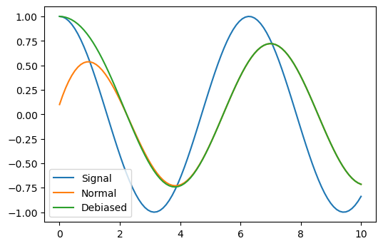
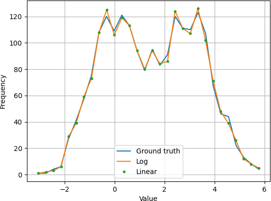
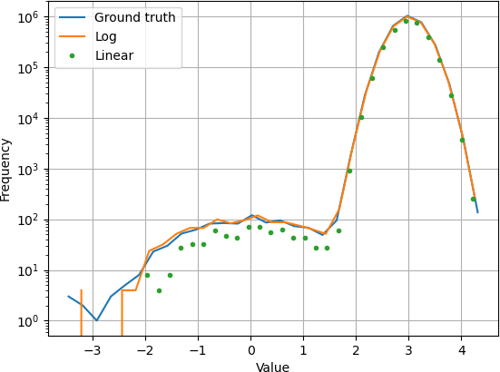

k1lib.cli module
Setup
To install the library, run this in a terminal:
pip install k1lib[all]
If you don’t want to install extra dependencies (not recommended), you can do this instead:
pip install k1lib
To use it in a python file or a notebook, do this:
from k1lib.imports import *
Because there are a lot of functions with common names, you may have custom functions or
classes that have the same name, which will override the functions in the library. If you
want to use them, you can use cli.sort() instead of sort() for example.
Intro
The main idea of this package is to emulate the terminal (hence “cli”, or “command line interface”), but doing all of that inside Python itself. So this bash statement:
cat file.txt | head -5 > headerFile.txt
Turns into this statement:
cat("file.txt") | head(5) > file("headerFile.txt")
Let’s step back a little bit. In the bash statement, “cat” and “head” are actual programs
accessible through the terminal, and “|” will pipe the output of 1 program into another
program. cat file.txt will read a file and returns a list of all rows in it, which
will then be piped into head -5, which will only return the first 5 lines. Finally,
> headerFile.txt will redirect the output to the “headerFile.txt” file. See this video
for more: https://www.youtube.com/watch?v=bKzonnwoR2I
On the Python side, “cat”, “head” and “file” are Python classes extended from BaseCli.
cat("file.txt") will read the file line by line, and return a list of all of them. head(5)
will take in that list and return a list with only the first 5 lines. Finally, > file("headerFile.txt")
will take that in and writes it to a file.
You can even integrate with existing shell commands:
ls("~") | cmd("grep *.so")
Here, “ls” will list out files inside the home directory, then pipes it into regular grep on linux, which is then piped back into Python as a list of strings. So it’s equivalent to this bash statement:
ls | grep *.so
Let’s see a really basic example:
# just a normal function
f = lambda x: x**2
# returns 9, no surprises here
f(3)
# f is now a cli tool
f = aS(lambda x: x**2)
# returns 9, demonstrating that they act like normal functions
f(3)
# returns 9, demonstrating that you can also pipe into them
3 | f
Here, aS is pretty much the simplest cli available. It just makes whatever
function you give it pipe-able, as you can’t quite pipe things to lambda functions in vanilla Python.
You can think of the flow of these clis in terms of 2 phases. 1 is configuring what you want the cli to do, and 2 is actually executing it. Let’s say you want to take a list of numbers and take the square of them:
# configuration stage. You provide a function to `apply` to tell it what function to apply to each element in the list, kinda like Python's "map" function
f = apply(lambda x: x**2)
# initialize the input
x = range(5)
# execution stage, normal style, returns [0, 1, 4, 9, 16]
list(f(x))
# execution stage, pipe style, returns [0, 1, 4, 9, 16]
list(x | f)
# typical usage: combining configuration stage and execution stage, returns [0, 1, 4, 9, 16]
list(range(5) | apply(lambda x: x**2))
# refactor converting to list so that it uses pipes, returns [0, 1, 4, 9, 16]
range(5) | apply(lambda x: x**2) | aS(list)
You may wonder why do we have to turn it into a list. That’s because all cli tools execute things lazily, so they will return iterators, instead of lists. Here’s how iterators work:
def gen(): # this is a generator, a special type of iterator. It generates elements
yield 3
print("after yielding 3")
yield 2
yield 5
for e in gen():
print("in for loop:", e)
It will print this out:
in for loop: 3
after yielding 3
in for loop: 2
in for loop: 5
So, iterators feels like lists. In fact, a list is an iterator, range(5), numpy arrays
and strings are also iterators. Basically anything that you can iterate through is an
iterator. The above iterator is a little special, as it’s specifically called a “generator”.
They are actually a really cool aspect of Python, in terms of they execute code lazily, meaning
gen() won’t run all the way when you call it. In fact, it doesn’t run at all. Only once you
request new elements when trying to iterate over it will the function run.
All cli tools utilize this fact, in terms of they will not actually execute anything unless you force them to:
# returns "<generator object apply.__ror__.<locals>.<genexpr> at 0x7f7ae48e4d60>"
range(5) | apply(lambda x: x**2)
# you can iterate through it directly:
for element in range(5) | apply(lambda x: x**2):
print(element)
# returns [0, 1, 4, 9, 16], in case you want it in a list
list(range(5) | apply(lambda x: x**2))
# returns [0, 1, 4, 9, 16], demonstrating deref
range(5) | apply(lambda x: x**2) | deref()
In the first line, it returns a generator, instead of a normal list, as nothing has actually been
executed. You can still iterate through generators using for loops as usual, or you can convert it
into a list. When you get more advanced, and have iterators nested within iterators within iterators,
you can use deref to turn all of them into lists.
Also, a lot of these tools (like apply and filt)
sometimes assume that we are operating on a table. So this table:
col1 |
col2 |
col3 |
|---|---|---|
1 |
2 |
3 |
4 |
5 |
6 |
Is equivalent to this list:
[["col1", "col2", "col3"], [1, 2, 3], [4, 5, 6]]
Warning
If you’re not an advanced user, just skip this warning.
All cli tools should work fine with torch.Tensor, numpy.ndarray and pandas.core.series.Series,
but k1lib actually modifies Numpy arrays and Pandas series deep down for it to work.
This means that you can still do normal bitwise or with a numpy float value, and
they work fine in all regression tests that I have, but you might encounter strange bugs.
You can disable it manually by changing settings.startup.or_patch like this:
import k1lib
k1lib.settings.startup.or_patch.numpy = False
from k1lib.imports import *
If you choose to do this, you’ll have to be careful and use these workarounds:
torch.randn(2, 3, 5) | shape() # returns (2, 3, 5), works fine
np.random.randn(2, 3, 5) | shape() # will not work, returns weird numpy array of shape (2, 3, 5)
shape()(np.random.randn(2, 3, 5)) # returns (2, 3, 5), mitigation strategy #1
[np.random.randn(2, 3, 5)] | (item() | shape()) # returns (2, 3, 5), mitigation strategy #2
Again, please note that you only need to do these workarounds if you choose to turn off C-type modifications. If you keep things by default, then all examples above should work just fine.
All cli-related settings are at settings.cli.
Argument expansion
I’d like to quickly mention the argument expansion motif that’s prominent in some cli tools. Check out this example:
[3, 5] | aS(lambda a: a[0] + a[1]) # returns 8, long version, not descriptive elements ("a[0]" and "a[1]")
[3, 5] | ~aS(lambda x, y: x + y) # returns 8, short version, descriptive elements ("x" and "y")
[[3, 5], [2, 7]] | apply(lambda a: a[0] + a[1]) | aS(list) # returns [8, 9], long version
[[3, 5], [2, 7]] | ~apply(lambda x, y: x + y) | aS(list) # returns [8, 9], short version
Here, the tilde operator (“~”, officially called “invert” in Python) used on aS and
apply means that the input object/iterator will be expanded so that it fills all
available arguments. This is a small quality-of-life feature, but makes a big difference, as parameters
can now be named separately and nicely (“x” and “y”, which can convey that this is a coordinate of some
sort, instead of “a[0]” and “a[1]”, which conveys nothing).
Inverting conditions
The tilde operator does not always mean expanding the arguments though. Sometimes it’s used for actually inverting the functionality of some clis:
range(5) | filt(lambda x: x % 2 == 0) | aS(list) # returns [0, 2, 4]
range(5) | ~filt(lambda x: x % 2 == 0) | aS(list) # returns [1, 3]
[3, 5.5, "text"] | ~instanceOf(int) | aS(list) # returns [5.5, "text"]
Capturing operators
Some clis have the ability to “capture” the behavior of other clis and modify them on the fly. For example, let’s see tryout(), which catches errors in the pipeline and returns a default value if an error is raised:
"a3" | (tryout(4) | aS(int)) | op()*2 # returns 8, because int("a3") will throws an error, which will be caught, and the pipeline reduces down to 4*2
"3" | (tryout(4) | aS(int)) | op()*2 # returns 6, because int("3") will not throw an error, and the pipeline effectively reduces down to int("3")*2
"3" | tryout(4) | aS(int) | op()*2 # throws an error, because tryout() doesn't capture anything
Just a side note, op() will record all operations done on it, and it will replay those operations on anything that’s piped into it.
In the first line, tryout() | aS(int) will be executed first, which will lead to tryout()
capturing all of the clis behind it and injecting in a try-catch code block to wrap all of them
together. In the third line, it doesn’t work because "3" | tryout(4) is executed first,
but here, tryout() doesn’t have the chance to capture the clis behind it, so it can’t inject
a try-catch block around them. This also means that in the 1st and 2nd line, the final multify-by-2
step is not caught, because tryout() is bounded by the parentheses. If you’re composing this
inside of another cli, then the scope is bounded by the outside cli:
range(5) | apply( tryout(-1) | op()**2) | deref() # returns [0, 1, 4, 9, 16]. tryout() will capture op()**2
range(5) | apply((tryout(-1) | op()**2)) | deref() # returns [0, 1, 4, 9, 16], exactly the same as before, demonstrating that you don't have to wrap tryout() around another pair of braces
Cli composition
One of the very powerful things about this workflow is that you can easily combine cli tools together, to reach unfathomable levels of complexity while using very little code and still remain relatively readable. For example, this is an image dataloader built pretty much from scratch, but with full functionality comparable to PyTorch’s dataloaders:
base = "~/ssd/data/imagenet/set1/192px"
idxToCat = base | ls() | head(80) | op().split("/")[-1].all() | insertIdColumn() | toDict()
catToIdx = idxToCat.items() | permute(1, 0) | toDict()
# stage 1, (train/valid, classes, samples (url of img))
st1 = base | ls() | head(80) | apply(ls() | splitW()) | transpose() | deref() | aS(k1.Wrapper)
# stage 2, (train/valid, classes, samples, [img, class])
st2 = st1() | (apply(lambda x: [x | toImg() | toTensor(torch.uint8), catToIdx[x.split("/")[-2]]]) | repeatFrom(4) | apply(aS(tf.Resize(192)) | aS(tf.AutoAugment()) | op()/255, 0)).all(2) | deref() | aS(k1.Wrapper)
def dataF(bs): return st2() | apply(repeatFrom().all() | joinStreamsRandom() | batched(bs) | apply(transpose() | aS(torch.stack) + toTensor(torch.long))) | stagger.tv(10000/bs) | aS(list)
These 6 lines of code will read from a directory, grabs all images from the first 80 categories, splits them into train and valid sets. Then it will extend the data infinitely (so that we never run out of batches to train), load the images on multiple worker processes, do augmentations on them, renormalize them, batch them up, stack them together into a tensor, and split batches into multiple epochs.
All of that, from scratch, where you’re in control of every detail, operating in 7 dimensions, in multiple processes, in just 6 lines of code. This is just so ridiculously powerful that it boggles my mind every day. Yes, you can argue that it’s not clear what’s going on, but for a person that is already familiar with them like I do, seeing exactly how data is being transformed at every stage is quite straightforward and trivial.
Serial composition
So let’s see a few examples on how to compose clis together. Let’s say you have a list of files:
fileNames = ["a.txt", "b.txt", "c.txt"]
Let’s say you now want to read every line from every file quickly, using cli tools, and get the number of lines in each file. Instead of something like this:
sizes = []
for fileName in fileNames:
sizes.append(cat(fileName) | shape(0)) # shape(0) is kinda like aS(len). It just returns the length of the input iterator, but difference is that aS(len) can only operate on lists
…which really defeats the purpose of the elegant cli workflow, you can do:
sizes = fileNames | apply(cat() | shape(0)) | aS(list)
In this example, there is 1 “composition”: cat() | shape(0). If you check out the
docs for cat, which is used to read files, you’d know that there’re 2 modes of operation:
cat("a.txt") | shape(0) # mode 1: cat() acts like a function, returning a list of lines in the file
"a.txt" | cat() | shape(0) # mode 2: cat() acts like a cli tool, which will return a list of lines in the file when a file name is piped into it
"a.txt" | (cat() | shape(0)) # mode 2: cat() acts like a cli tool, "cat() | shape(0)" acts as a "serial" cli
s = cat() | shape(0); "a.txt" | s # equivalent to the 3rd line, but this time declaring "cat() | shape(0)" as a separate object
In the second case, "a.txt" | cat() will be executed first, then getting the number of elements will be
executed later (... | shape(0)), but in the third case, cat() | shape(0) will be executed first, which
returns the special cli serial, then the file name will be piped in later ("a.txt" | (...))
Because cli tools are also functions, which includes serial, you can pass them into other cli
tools that expects a function, like apply. You can be extra meta, like this:
# assume a.txt, b.txt, c.txt has 10, 20, 30 lines
fileNames = [["a.txt"], ["b.txt", "c.txt"]]
# returns [[10], [20, 30]]
sizes = fileNames | apply(apply(cat() | shape(0)))
# also returns [[10], [20, 30]], and is equivalent to the line above, as "apply(apply(...))" is equivalent to "(...).all(2)"
sizes = fileNames | (cat() | shape(0)).all(2)
This type of composition is quite straightforward, unlike the next 2.
“&” composition, or “oneToMany”
Take a look at this example:
arr = ["a", "b", "c"]
arr | toRange() # returns range(3), equivalent to [0, 1, 2]
arr | iden() # returns ["a", "b", "c"]
arr | (toRange() & iden()) | aS(list) # returns [range(3), ["a", "b", "c"]]
arr | toRange() & iden() | aS(list) # returns [range(3), ["a", "b", "c"]], demonstrating "&" will be executed before "|", so you don't need parentheses around it
arr | toRange() & iden() | joinStreams() | aS(list) # returns [0, 1, 2, "a", "b", "c"]
So, this will take the input iterator, duplicates into 2 versions, pipes them into the 2 clis you specified and return both of them. You can do this with as much clis as you want:
arr | toRange() & shape() & grep("a") | deref() # returns [[0, 1, 2], [3, 1], ["a"]]
arr | toRange() & (shape() & grep("a")) | deref() # also returns [[0, 1, 2], [3, 1], ["a"]], demonstrating a strange edge case that parentheses won't stop all clis adjacent to each other joined by "&" from combining together
Hopefully it now makes sense why it’s called “oneToMany”, as we’re making 1 iterator available
for many clis. Also, if the exact cli operation is only known at run time, then you can
procedurally do this using oneToMany.
“+” composition, or “mtmS”
Take a look at this example:
even = filt(lambda x: x % 2 == 0)
odd = filt(lambda x: x % 2 == 1) # can also just be "~even", but I'm writing it out this way to be clear
[range(10, 20), range(30, 40)] | (even + odd) | deref() # returns [[10, 12, 14, 16, 18], [31, 33, 35, 37, 39]]
[range(10, 20) | even, range(30, 40) | odd] | deref() # also returns [[10, 12, 14, 16, 18], [31, 33, 35, 37, 39]], demonstrating that these are equivalent to each other
So, let’s say that there’re n items inside of the input iterator and that you specified n
clis. Then, each item will be piped into the corresponding cli, hence the name mtmS, or
“manyToManySpecific”. Why not just “mtm”? Well, there used to be a “manyToMany” operator,
but it’s been removed and I’m lazy to change it back.
Vanilla alternatives
These operations are not actually strictly necessary, they’re just convenience functions so that writing code is simpler and more straightforward. They can be implemented using normal clis like so:
a = iden()
b = apply(lambda x: x**2)
c = shape()
x = [[1, 2], [3, 4], [5, 6]]
x | a + b + c | deref() # returns [[1, 2], [9, 16], [2]]
x | ~aS(lambda x, y, z: [x | a, y | b, z | c]) | deref() # returns [[1, 2], [9, 16], [2]]
x = range(5)
x | a & b & c | deref() # returns [[0, 1, 2, 3, 4], [0, 1, 4, 9, 16], [5]]
x | aS(lambda x: [x | a, x | b, x | c]) | deref() # returns [[0, 1, 2, 3, 4], [0, 1, 4, 9, 16], [5]]
So you might want to use these vanilla versions initially if you’re having a hard time with this, but I wouldn’t recommend using vanilla in the long term.
JS transpiler
Philosophy
Just a short note: while I was developing this, the emphasis is on creating very succinct code that does a whole lot, to aid in exploring/creating datasets. Because of it, I’ve chosen to sacrifice readability. The idea is, if it’s so fast to create a functionality, whenever you need to change the code, it’ll be faster to just recreate it from scratch than try to change the existing code. And the mental effort to recreate it is substantially lower than the mental effort needed to understand a normal codebase written using vanilla Python. Also this encourages you to rethink the problem in a new light entirely, which usually results in much shorter and simpler code than if you were to adapt an existing solution. This seem to be true for me so far.
Note that creating unreadable, fantastically complicated code only happens around 5%. Majority
of the time it’s actually very readable and I can change an obscure detail after 10 seconds.
The way I usually do it is to “feel” what the data looks like, instead of trying to trace what
it looks like from the very beginning. This is possible because certain functions has certain
common signatures. For example, ~apply(lambda x,y: x+y, 3) probably means that it’s manipulating
a table with the 3rd column being a list of 2 coordinate numbers. So, overtime, you’ll develop
an intuition for what’s happenning and can visualize the data’s shape right in the middle of the
pipeline.
Where to start?
Core clis include:
These clis are pretty important, and are used all the time, so look over them to see what the library can do. Whenever you find some cli you have not encountered before, you can just search it in the search bar on the top left of the page.
Then other important, not necessarily core clis include:
So, start reading over what these do first, as you can pretty much 95% utilize everything
the cli workflow has to offer with those alone. Then skim over basic conversions in
module conv. While you’re doing that, checkout trace(),
for a quite powerful debugging tool.
There are several written tutorials about cli here, and I also made some video tutorials as well, so go check those out.
For every example in the tutorials that you found, you might find it useful to follow the following debugging steps, to see how everything works:
# assume there's this piece of code:
A | B | C | D
# do this instead:
A | deref()
# once you understand it, do this:
A | B | deref()
# assume there's this piece of code:
A | B.all() | C
# do this instead:
A | item() | B | deref()
# once you understand it, you can move on:
A | B.all() | deref()
# assume there's this piece of code:
A | B & C
# do this instead:
A | B | deref()
# assume there's this piece of code:
A | (B + C)
# do these instead:
A | deref() | op()[0] | B | deref()
A | deref() | op()[1] | C | dereF()
# there are alternatives to that:
A | item() | B | deref()
A | rows(1) | item() | C | deref()
Finally, you can read over the summary below, see what catches your eye and check that cli out.
Summary
conv |
structural |
utils |
filt |
modifier |
|---|---|---|---|---|
typehint |
inp |
output |
init |
kxml |
|---|---|---|---|---|
|
||||
|
||||
|
||||
|
||||
|
||||
|
||||
nb |
grep |
trace |
optimizations |
|---|---|---|---|
Under the hood
How it works underneath is pretty simple. All cli tools implement the “reverse or” operation, or __ror__. So essentially, these 2 statements are equivalent:
3 | obj
obj.__ror__(3)
There are several other operations that certain clis can override, like “>” or “>>”. Also, if you’re an advanced user, there’s also an optimizer that looks like LLVM, so you can implement optimization passes to speed up everything by a lot:
Creating your own cli
It’s fairly simple to create your new cli. If it’s composed of other clis, you can do something like this:
newCli = filt(lambda x: x%2==0) | head(4) | deref()
range(10) | newCli # returns [0, 2, 4, 6]
If it’s more complicated that needs to have access to some state, like a sum of numbers,
then you can extend from BaseCli like so:
class NewCli(BaseCli):
def __init__(self, bias=0):
self.bias = bias # don't necessarily have to call super.__init__()
def __ror__(self, it):
s = self.bias
for elem in it:
s += elem
return s
[range(12, 30), range(8)] | NewCli(4).all() | deref() # returns [373, 32]
Accelerations
Cli tools are pretty dynamic and clever. A lot of times, they try to understand what you’re trying to do, then rewrite your code into something else completely, but still produce exactly the desired output. For example:
["what is 3+4?", "what is 8+7?"] | apply(complete()) # returns ['0', '7']. I know, LLMs are still bad at math
np.random.randn(3, 4, 5) | apply(repeat(2).all() | transpose() | joinStreams()) # returns numpy array with shape (3, 8, 5)
On the first line, normally, complete() takes in 1 single string and also outputs a single string.
But if you know how these LLMs are run, you know that it’s a lot more efficient for the GPU to batch
multiple sentences together to generate text at the same time. So on the surface, this line seems
horribly inefficient, as it will call the model 2 times, one for each string. However, cli tools are
smart enough to realize you’re trying feed multiple things to a model, and will batch them up automatically.
On the second line, there’re lots of operations that should normally heavily bisect the input data
(a numpy array), like apply() and repeat() and whatnot, but believe it or not, cli tools are
smart enough to transform the array completely in C, and the output of the whole thing is still another
numpy array and not a nested generator. Here’s the summary of the operations that are accelerated in this
way:
========== `array | cli` and `array | cli.all(int)` capability
conv.toArgmax conv.toArgmin conv.toAvg
conv.toMax conv.toMedian conv.toMin
conv.toNdArray conv.toProd conv.toStd
conv.toSum conv.toTensor filt.cut
filt.rows modifier.clamp modifier.randomize
modifier.roll modifier.sort structural.batched
structural.insert structural.insertIdColumn structural.joinStreams
structural.repeat structural.repeatFrom structural.transpose
structural.window utils.item utils.normalize
utils.rItem utils.reverse utils.size
utils.wrapList
========== `array | cli.all(int)` capability alone
filt.head modifier.applyS utils.smooth
========== `array | cli` capability alone
conv.idxsToNdArray conv.toCm conv.toFloat
conv.toImg conv.toInt conv.toUnix
filt.contains filt.filt filt.filtStd
filt.inSet filt.mask filt.unique
models.tsne modifier.apply output.plotImgs
structural.groupBy structural.hist structural.joinStreamsRandom
structural.peek structural.peekF structural.splitC
structural.splitW utils.deref utils.ignore
utils.zeroes
========== No array acceleration
bio.complement bio.idx bio.longAa
bio.medAa bio.transcribe bio.translate
conv.toAnchor conv.toAngle conv.toAudio
conv.toBytes conv.toCsv conv.toDataUri
conv.toDict conv.toDist conv.toFileType
conv.toGray conv.toHtml conv.toIso
conv.toLinks conv.toList conv.toMovingAvg
conv.toPdf conv.toRange conv.toRgb
conv.toRgba conv.toYMD conv.toYaml
filt.breakIf filt.empty filt.intersection
filt.tail filt.trigger filt.tryout
filt.union init.BaseCli init.mtmS
init.oneToMany init.serial inp.catPickle
inp.cmd inp.kunzip inp.kzip
inp.refineSeek inp.splitSeek inp.walk
models.bloom models.complete models.embed
models.kmeans modifier.applyCl modifier.applyMp
modifier.applySerial modifier.applyTh modifier.consume
modifier.integrate modifier.iterDelay modifier.op
modifier.sortF modifier.stagger output.file
output.intercept output.pretty output.stdout
output.tee output.unpretty structural.AA_
structural.activeSamples structural.batchedTrigger structural.count
structural.insertColumn structural.latch structural.oneHot
structural.permute structural.reshape structural.ungroup
typehint.tCheck typehint.tOpt utils.backup
utils.bindec utils.branch utils.clipboard
utils.getitems utils.iden utils.join
utils.lookup utils.lookupRange utils.rateLimit
utils.sketch utils.syncStepper utils.timeLimit
bio module
This is for functions that are actually biology-related
- k1lib.cli.bio.quality(log=True)[source]
Get numeric quality of sequence. Example:
# returns [2, 2, 5, 30] "##&?" | quality() | deref()
- Parameters
log – whether to use log scale (0 -> 40), or linear scale (1 -> 0.0001)
- k1lib.cli.bio.longFa()[source]
Takes in a fasta file and put each sequence on 1 line. File “gene.fa”:
>AF086833.2 Ebola virus - Mayinga, Zaire, 1976, complete genome CGGACACACAAAAAGAAAGAAGAATTTTTAGGATC TTTTGTGTGCGAATAACTATGAGGAAGATTAATAA >something other gene CGGACACACAAAAAGAAAGAAGA TTTTGTGTGCGAATAACTATGAG
Code:
cat("gene.fa") | bio.longFa() | cli.headOut()
Prints out:
>AF086833.2 Ebola virus - Mayinga, Zaire, 1976, complete genome CGGACACACAAAAAGAAAGAAGAATTTTTAGGATCTTTTGTGTGCGAATAACTATGAGGAAGATTAATAA >something other gene CGGACACACAAAAAGAAAGAAGATTTTGTGTGCGAATAACTATGAG
- class k1lib.cli.bio.idx(fs: list = [], capture=False)[source]
Bases:
BaseCliIndexes files with various formats.
- static blast(fileName: Optional[str] = None, dbtype: Optional[str] = None)[source]
Uses
makeblastdbto create a blast database from a fasta file. Example:"file.fa" | bio.idx.blast() bio.idx.blast("file.fa")
- class k1lib.cli.bio.transcribe(fs: list = [], capture=False)[source]
Bases:
BaseCliTranscribes (DNA -> RNA) incoming rows. Example:
# returns "AUCG" "ATCG" | transcribe() # returns ["AUCG"] ["ATCG"] | transcribe() | deref()
- class k1lib.cli.bio.complement(fs: list = [], capture=False)[source]
Bases:
BaseCliGet the reverse complement of DNA. Example:
# returns "TAGC" "ATCG" | bio.complement() # returns ["TAGC"] ["ATCG"] | bio.complement() | deref()
- class k1lib.cli.bio.translate(length: int = 0)[source]
Bases:
BaseCli
cif module
All tools related to cif file format that describes protein structures. Expected to use behind the “cif” module name, like this:
from k1lib.imports import *
cif.cat("abc.cif")
- k1lib.cli.cif.tables(name=None, dikt=True)[source]
Loads table info. Dictionary mode:
# both return output below "1z7z.cif" | cif.tables() | op()["_audit_author"] "1z7z.cif" | cif.tables("_audit_author")
Potential output:
{'name': ("'Xiao, C.'", "'Bator-Kelly, C.M.'", "'Rieder, E.'", "'Chipman, P.R.'", "'Craig, A.'", "'Kuhn, R.J.'", "'Wimmer, E.'", "'Rossmann, M.G.'"), 'pdbx_ordinal': ('1', '2', '3', '4', '5', '6', '7', '8')}
Result is a dictionary of
table name -> dict(). That inner dictionary maps from column name to a list of elements. All columns should have the same number of elements.Table mode:
# both return output below "1z7z.cif" | cif.tables("_audit_author", dikt=False) "1z7z.cif" | cif.tables(dikt=False) | op()["_audit_author"]
Potential output:
[['name', 'pdbx_ordinal'], ["'Xiao, C.'", '1'], ["'Bator-Kelly, C.M.'", '2'], ["'Rieder, E.'", '3'], ["'Chipman, P.R.'", '4'], ["'Craig, A.'", '5'], ["'Kuhn, R.J.'", '6'], ["'Wimmer, E.'", '7'], ["'Rossmann, M.G.'", '8']]
Result is a dictionary of
table name -> List[List[str]]. So basically you’re getting the table directly.- Parameters
name – if specified, only grabs the specified table, else returns every table
dikt – whether to return a dict or table for each table
conv module
This is for all short utilities that converts from 1 data type to another. They
might feel they have different styles, as toFloat converts object iterator to
float iterator, while toImg converts single image url to single PIL image,
whereas toSum converts float iterator into a single float value.
The general convention is, if the intended operation sounds simple (convert to floats, strings, types, …), then most likely it will convert iterator to iterator, as you can always use the function directly if you only want to apply it on 1 object.
If it sounds complicated (convert to PIL image, tensor, …) then most likely it will convert object to object. Lastly, there are some that just feels right to input an iterator and output a single object (like getting max, min, std, mean values).
- class k1lib.cli.conv.toNdArray(dtype=None)[source]
Bases:
BaseCli- blurb = 'Converts several data types to numpy.ndarray'
- __init__(dtype=None)[source]
Converts generator/several data types to
numpy.ndarray. Essentiallynp.array(list(it)). Can convert PIL Image. Example:# returns array([0., 1., 2.]) range(3) | toNdArray() # returns array([0., 1., 2.], dtype=float32) range(3) | toNdArray(np.float32)
- class k1lib.cli.conv.toTensor(dtype=None)[source]
Bases:
BaseCli- blurb = 'Converts several data types to torch.Tensor'
- __init__(dtype=None)[source]
Converts generator to
torch.Tensor. Essentiallytorch.tensor(list(it)). Default dtype is float32. Can convert PIL Image. Example:# returns tensor([0., 1., 2.], dtype=torch.float64) range(3) | toTensor(torch.float64)
- class k1lib.cli.conv.toRange[source]
Bases:
BaseCli- blurb = 'Returns iter(range(len(it))), but incrementally'
- class k1lib.cli.conv.toList[source]
Bases:
BaseCli- __init__()[source]
Converts generator to list. Example:
# returns [0, 1, 2, 3, 4] range(5) | toList() # returns [0, 1, 2, 3, 4] range(5) | aS(list)
So this cli is sort of outdated. It still works fine, nothing wrong with it, but just do
aS(list)instead. It’s not removed to avoid breaking old projects.
- class k1lib.cli.conv.toSum[source]
Bases:
BaseCli- blurb = 'Calculates the sum of a list of numbers'
- __init__()[source]
Calculates the sum of list of numbers. Can pipe in
torch.Tensorornumpy.ndarray. Example:range(10) | toSum() # returns 45 np.random.randn(2, 3, 4) | toSum().all() | shape() # returns (2,)
- class k1lib.cli.conv.toProd[source]
Bases:
BaseCli- blurb = 'Calculates the product of a list of numbers'
- __init__()[source]
Calculates the product of a list of numbers. Can pipe in
torch.Tensorornumpy.ndarray. Example:range(1,10) | toProd() # returns 362880 np.random.randn(2, 3, 4) | toProd().all() | shape() # returns (2,)
- class k1lib.cli.conv.toAvg[source]
Bases:
BaseCli- blurb = 'Calculates the average of a list of numbers'
- __init__()[source]
Calculates average of list of numbers. Can pipe in
torch.Tensorornumpy.ndarray. Example:range(10) | toAvg() # returns 4.5 [] | toAvg() # returns nan np.random.randn(2, 3, 4) | toAvg().all() | shape() # returns (2,)
- class k1lib.cli.conv.toStd(ddof: int = 0)[source]
Bases:
BaseCli- blurb = 'Calculates the standard deviation of a list of numbers'
- __init__(ddof: int = 0)[source]
Calculates standard deviation of list of numbers. Can pipe in
torch.Tensorornumpy.ndarrayto be faster. Example:range(10) | toStd() # returns 2.8722813232690143 [] | toStd() # returns nan np.random.randn(2, 3, 4) | toStd().all() | shape() # returns (2,)
- Parameters
ddof – “delta degree of freedom”. The divisor used in calculations is
N - ddof
- class k1lib.cli.conv.toMedian(percentile=50)[source]
Bases:
BaseCli- blurb = 'Calculates the median of a list of numbers'
- class k1lib.cli.conv.toMax[source]
Bases:
BaseCli- blurb = 'Calculates the max value of a list of numbers'
- __init__()[source]
Calculates the max of a bunch of numbers. Can pipe in
torch.Tensorornumpy.ndarray. Example:[2, 5, 6, 1, 2] | toMax() # returns 6 np.random.randn(2, 3, 4) | toMax().all() | shape() # returns (2,)
- class k1lib.cli.conv.toMin[source]
Bases:
BaseCli- blurb = 'Calculates the min value of a list of numbers'
- __init__()[source]
Calculates the min of a bunch of numbers. Can pipe in
torch.Tensorornumpy.ndarray. Example:[2, 5, 6, 1, 2] | toMin() # returns 1 np.random.randn(2, 3, 4) | toMin().all() | shape() # returns (2,)
- class k1lib.cli.conv.toArgmin[source]
Bases:
BaseCli- blurb = "Grabs the min value's index"
- class k1lib.cli.conv.toArgmax[source]
Bases:
BaseCli- blurb = "Grabs the max value's index"
- class k1lib.cli.conv.toImg(closeFig=True, crop=True)[source]
Bases:
BaseCli- blurb = 'Converts multiple data types into a PIL image'
- __init__(closeFig=True, crop=True)[source]
Converts multiple data types into a PIL image. Example:
ls(".") | toImg().all() | item() # grabs first image in the current folder torch.randn(100, 200) | toImg() # converts from tensor/array to image "abc.jpg" | toImg() | toBytes() | toImg() # grabs image, converts to byte stream, and converts back to image ["abc", "def"] | toImg() # converts paragraphs to image "c1ccc(C)cc1" | toMol() | toImg() # converts SMILES string to molecule, then to image ["ab", "bc", "ca"] | (kgv.sketch() | kgv.edges()) | toHtml() | toImg() # sketches a graphviz plot, converts to svg then renders the svg as an image df | toHtml() | toImg() # converts pandas data frame to html, then render it to image
You can also save a matplotlib figure by piping in a
matplotlib.figure.Figureobject:x = np.linspace(0, 4) plt.plot(x, x**2) plt.gcf() | toImg()
Note
If you are working with image tensors, which is typically have dimensions of (C, H, W), you have to permute it to PIL’s (H, W, C) first before passing it into this cli.
Also it’s expected that your tensor image ranges from 0-255, and not 0-1. Make sure you renormalize it
- Parameters
closeFig – if input is a matplotlib figure, then closes the figure after generating the image
crop – whether to crop white spaces around an image or not
- class k1lib.cli.conv.toRgb[source]
Bases:
BaseCli- blurb = 'Converts grayscale/rgb PIL image to rgb image'
- class k1lib.cli.conv.toRgba[source]
Bases:
BaseCli- blurb = 'Converts random PIL image to rgba image'
- class k1lib.cli.conv.toGray[source]
Bases:
BaseCli- blurb = 'Converts random PIL image to a grayscale image'
- class k1lib.cli.conv.toDict(rows=True, f=None)[source]
Bases:
BaseCli- blurb = 'Converts 2 Iterators, 1 key, 1 value into a dictionary'
- __init__(rows=True, f=None)[source]
Converts 2 Iterators, 1 key, 1 value into a dictionary. Example:
# returns {1: 3, 2: 4} [[1, 3], [2, 4]] | toDict() # returns {1: 3, 2: 4} [[1, 2], [3, 4]] | toDict(False)
If
rowsis a string, then it will build a dictionary from key-value pairs delimited by this character. For example:['gene_id "ENSG00000290825.1"', 'transcript_id "ENST00000456328.2"', 'gene_type "lncRNA"', 'gene_name "DDX11L2"', 'transcript_type "lncRNA"', 'transcript_name "DDX11L2-202"', 'level 2', 'transcript_support_level "1"', 'tag "basic"', 'tag "Ensembl_canonical"', 'havana_transcript "OTTHUMT00000362751.1"'] | toDict(" ")
That returns:
{'gene_id': '"ENSG00000290825.1"', 'transcript_id': '"ENST00000456328.2"', 'gene_type': '"lncRNA"', 'gene_name': '"DDX11L2"', 'transcript_type': '"lncRNA"', 'transcript_name': '"DDX11L2-202"', 'level': '2', 'transcript_support_level': '"1"', 'tag': '"Ensembl_canonical"', 'havana_transcript': '"OTTHUMT00000362751.1"'}
- Parameters
rows – if True, reads input in row by row, else reads in list of columns
f – if specified, return a defaultdict that uses this function as its generator
- class k1lib.cli.conv.toFloat(*columns, mode=2)[source]
Bases:
BaseCli- blurb = 'Converts an iterator into a list of floats'
- __init__(*columns, mode=2)[source]
Converts every row into a float. Example:
# returns [1, 3, -2.3] ["1", "3", "-2.3"] | toFloat() | deref() # returns [[1.0, 'a'], [2.3, 'b'], [8.0, 'c']] [["1", "a"], ["2.3", "b"], [8, "c"]] | toFloat(0) | deref()
With weird rows:
# returns [[1.0, 'a'], [8.0, 'c']] [["1", "a"], ["c", "b"], [8, "c"]] | toFloat(0) | deref() # returns [[1.0, 'a'], [0.0, 'b'], [8.0, 'c']] [["1", "a"], ["c", "b"], [8, "c"]] | toFloat(0, force=True) | deref()
This also works well with
torch.Tensorandnumpy.ndarray, as they will not be broken up into an iterator:# returns a numpy array, instead of an iterator np.array(range(10)) | toFloat()
- Parameters
columns – if nothing, then will convert each row. If available, then convert all the specified columns
mode – different conversion styles - 0: simple
float()function, fastest, but will throw errors if it can’t be parsed - 1: if there are errors, then replace it with zero - 2: if there are errors, then eliminate the row
- class k1lib.cli.conv.toInt(*columns, mode=2)[source]
Bases:
BaseCli- blurb = 'Converts an iterator into a list of ints'
- __init__(*columns, mode=2)[source]
Converts every row into an integer. Example:
# returns [1, 3, -2] ["1", "3", "-2.3"] | toInt() | deref()
- Parameters
columns – if nothing, then will convert each row. If available, then convert all the specified columns
mode – different conversion styles - 0: simple
float()function, fastest, but will throw errors if it can’t be parsed - 1: if there are errors, then replace it with zero - 2: if there are errors, then eliminate the row
See also:
toFloat()
- class k1lib.cli.conv.toBytes(dataType=None)[source]
Bases:
BaseCli- blurb = 'Converts several object types to bytes'
- __init__(dataType=None)[source]
Converts several object types to bytes. Example:
# converts string to bytes "abc" | toBytes() # converts image to bytes in jpg format torch.randn(200, 100) | toImg() | toBytes() # converts image to bytes in png format torch.randn(200, 100) | toImg() | toBytes("PNG") "some_file.mp3" | toAudio() | toBytes("mp3")
If it doesn’t know how to convert to bytes, it will just pickle it
Custom datatype
It is possible to build objects that can interoperate with this cli, like this:
class custom1: def __init__(self, config=None): ... def _toBytes(self): return b"abc" class custom2: def __init__(self, config=None): ... def _toBytes(self, dataType): if dataType == "png": return b"123" else: return b"456" custom1() | toBytes() # returns b"abc" custom2() | toBytes() # returns b"456" custom2() | toBytes("png") # returns b"123"
When called upon,
toByteswill detect that the input has the_toBytesmethod, which will prompt it to execute that method of the complex object. Of course, this means that you can return anything, not necessarily bytes, but to maintain intuitiveness, you should return either bytes or iterator of bytes- Parameters
dataType – depending on input. If it’s an image then this can be png, jpg. If it’s a sound then this can be mp3, wav or things like that
- class k1lib.cli.conv.toDataUri[source]
Bases:
BaseCli- blurb = 'Converts several object types into data uri scheme'
- __init__()[source]
Converts incoming object into data uri scheme. Data uris are the things that look like “data:image/png;base64, …”, or “data:text/html;base64, …”. This is a convenience tool mainly for other tools, and not quite useful directly. Example:
randomImg = cat("https://mlexps.com/ergun.png", False) | toImg() # returns PIL image randomImg | toDataUri() # returns k1lib.cli.conv.DataUri object with .mime field "image/png" and .uri field "data:image/png;base64, ..." randomImg | toDataUri() | toHtml() # returns hmtl string `<img src="data:image/png;base64, ..."/>` randomImg | toHtml() # same like above. toHtml() actually calls toDataUri() behind the scenes randomImg | toDataUri() | toAnchor() # creates anchor tag (aka link elements "<a></a>") that, when clicked, displays the image in a new tab randomImg | toAnchor() # same as above. toAnchor() actually calls toDataUri() behind the scenes
- class k1lib.cli.conv.toAnchor(text: str = 'click here')[source]
Bases:
BaseCli- blurb = 'Converts several object types into a html anchor tag'
- __init__(text: str = 'click here')[source]
Converts incoming object into a html anchor tag that, when clicked, displays the incoming object’s html in another tab. Example:
randomImg = cat("https://mlexps.com/ergun.png", False) | toImg() # returns PIL image randomImg | toAnchor() # returns html string `<a href="data:image/png;base64, ..."></a>`
On some browsers, there’s sort of a weird bug where a new tab would open, but there’s nothing displayed on that tab. If you see this is happening, just press F5 or Ctrl+R to refresh the page and it should display everything nicely
- Parameters
text – text to display inside of the anchor
- class k1lib.cli.conv.toHtml[source]
Bases:
BaseCli- blurb = 'Converts several object types to html'
- __init__()[source]
Converts several object types to html. Example:
# converts PIL image to html <img> tag torch.randn(200, 100) | toImg() | toHtml() # converts graphviz graph to svg text (which is essentially html) g = k1.digraph(); g(*"abc"); g(*"bcd"); g | toHtml() # converts plotly graphs to html import plotly.express as px; import pandas as pd df = pd.DataFrame({'x': [1, 2, 3, 4, 5], 'y': [10, 11, 12, 14, 15]}) fig = px.line(df, x='x', y='y', title='Simple Line Chart') fig | toHtml() # converts matplotlib plot to image, and then to html. Do this if you want a static plot x = np.linspace(-2, 2); y = x**2 plt.plot(x, x**2); plt.gcf() | toImg() | toHtml() # converts matplotlib plot to D3.js html sketch plt.plot(x, x**2); plt.gcf() | toHtml()
- k1lib.cli.conv.toAscii()[source]
Converts complex unicode text to its base ascii form. Example:
"hà nội" | toAscii() # returns "ha noi"
Taken from https://stackoverflow.com/questions/2365411/convert-unicode-to-ascii-without-errors-in-python
- k1lib.cli.conv.toHash() str[source]
Converts some string into some hash string. Example:
"abc" | toHash() # returns 'gASVJAAAAAAAAABDILp4Fr+PAc/qQUFA3l2uIiOwA2Gjlhd6nLQQ/2HyABWtlC4='
Why not just use the builtin function
hash("abc")? Because it generates different hashes for different interpreter sessions, and that breaks many of my applications that need the hash value to stay constant forever.
- class k1lib.cli.conv.toCsv(allSheets=False)[source]
Bases:
BaseCli- blurb = 'Converts several object types into a table/dataframe'
- __init__(allSheets=False)[source]
Converts a csv file name into a table. Example:
"abc.csv" | toCsv() # returns table of values (Iterator[List[str]]) "abc.csv" | toCsv() # returns pd.DataFrame, if configure 'settings.toCsv.df = True' "def.xlsx" | toCsv() # returns table of values in the first sheet "def.xlsx" | toCsv(True) # returns List[Sheet name (str), table of values] ["a,b,c,d", "1,2,3,4"] | toCsv() | deref() # returns [['a', 'b', 'c', 'd'], ['1', '2', '3', '4']]
Warning
Note that this is pretty slow compared to just splitting by semicolons. If your dataset doesn’t have anything complicated like semicolons in quotes, then just do
op().split(",").all()If your dataset does have complicated quotes, then I’d suggest reading the csv using this cli, then convert it to a tsv file (tab-separated value). Then you can always just split the string using tab characters
- Parameters
allSheets – if input is an Excel sheet, whether to read in all sheets or just the first sheet. No effect if input is a normal csv file
- class k1lib.cli.conv.toYaml(mode=None, safe=True)[source]
Bases:
BaseCli- blurb = 'Converts file name/yaml string to object and object to yaml string'
- __init__(mode=None, safe=True)[source]
Converts file name/yaml string to object and object to yaml string. Example:
"some_file.yaml" | toYaml() # returns python object cat("some_file.yaml") | join("
- “) | toYaml(1) # returns python object
{“some”: “object”, “arr”: [1, 2]} | toYaml() # returns yaml string. Detected object coming in, instead of string, so will convert object into yaml string
- Parameters
mode – None (default) for figure it out automatically, 0 for loading from file name, 1 for loading from raw yaml string, 2 for converting object to yaml string
safe – if True, always use safe_load() instead of load()
- class k1lib.cli.conv.toAudio(rate=None)[source]
Bases:
BaseCli- blurb = 'Reads audio from either a file or a URL or from bytes'
- __init__(rate=None)[source]
Reads audio from either a file or a URL or from bytes directly. Example:
au = "some_file.wav" | toAudio() # can display in a notebook, which will preview the first 10 second au | toBytes() # exports audio as .wav file au | toBytes("mp3") # exports audio as .mp3 file au.resample(16000) # resamples audio to new rate au | head(0.1) # returns new Audio that has the first 10% of the audio only au | splitW(8, 2) # splits Audio into 2 Audios, first one covering 80% and second one covering 20% of the track au.raw # internal pydub.AudioSegment object. If displayed in a notebook, will play the whole thing
You can also use this on any Youtube video or random mp3 links online and on raw bytes:
"https://www.youtube.com/watch?v=FtutLA63Cp8" | toAudio() # grab Bad Apple song from internet cat("some_file.wav", False) | toAudio() # grab from raw bytes of mp3 or wav, etc.
- class k1lib.cli.conv.toUnix(tz: str | dateutil.tz.tz.tzfile = None, mode: int = 0)[source]
Bases:
BaseCli- blurb = 'Converts to unix timestamp'
- __init__(tz: str | dateutil.tz.tz.tzfile = None, mode: int = 0)[source]
Tries anything piped in into a unix timestamp. If can’t convert then return None or the current timestamp (depending on mode). Example:
Local time zone independent:
"2023" | toUnix() # returns 2023, or 2023 seconds after unix epoch. Might be undesirable, but has to support raw ints/floats "2023-11-01T00Z" | toUnix() # midnight Nov 1st 2023 GMT "2023-11-01T00:00:00-04:00" | toUnix() # midnight Nov 1st 2023 EST "2023-11-01" | toUnix("US/Pacific") # midnight Nov 1st 2023 PST "2023-11-01" | toUnix("UTC") # midnight Nov 1st 2023 UTC
Local time zone dependent (assumes EST):
"2023-11" | toUnix() # if today's Nov 2nd EST, then this would be 1698897600, or midnight Nov 2nd 2023 EST "2023-11-04" | toUnix() # midnight Nov 4th 2023 EST
Feel free to experiment more, but in general, this is pretty versatile in what it can convert. With more effort, I’d probably make this so that every example given will not depend on local time, but since I just use this to calculate time differences, I don’t really care.
- Parameters
tz – Timezone, like “US/Eastern”, “US/Pacific”. If not specified, then assumes local timezone. Get all available timezones by executing
toUnix.tzs()mode – if 0, then returns None if can’t convert, to catch errors quickly. If 1, then returns current timestamp instead
- class k1lib.cli.conv.toIso(tz: str | dateutil.tz.tz.tzfile = None)[source]
Bases:
BaseCli- blurb = 'Converts unix timestamp to a human readable time string'
- __init__(tz: str | dateutil.tz.tz.tzfile = None)[source]
Converts unix timestamp into ISO 8601 string format. Example:
1701382420 | toIso() # returns '2023-11-30T17:13:40', which is correct in EST time 1701382420 | toIso() | toUnix() # returns 1701382420, the input timestamp, showing it's correct 1701382420.123456789 | toIso() # still returns '2023-11-30T17:13:40'
As you might have noticed, this cli depends on the timezone of the host computer. If you want to get it in a different timezone, do this:
1701382420 | toIso("UTC") # returns '2023-11-30T22:13:40' 1701382420 | toIso("US/Pacific") # returns '2023-11-30T14:13:40'
- Parameters
tz – Timezone, like “US/Eastern”, “US/Pacific”. If not specified, then assumes local timezone. Get all available timezones by executing
toUnix.tzs()
- class k1lib.cli.conv.toYMD(idx=None, mode=<class 'int'>)[source]
Bases:
BaseCli- blurb = 'Converts unix timestamp into tuple (year, month, day, hour, minute, second)'
- __init__(idx=None, mode=<class 'int'>)[source]
Converts unix timestamp into tuple (year, month, day, hour, minute, second). Example:
1701382420 | toYMD() # returns [2023, 11, 30, 17, 13, 40] in EST timezone 1701382420 | toYMD(0) # returns 2023 1701382420 | toYMD(1) # returns 11 1701382395 | toYMD(mode=str) # returns ['2023', '11', '30', '17', '13', '15']
- Parameters
idx – if specified, take the desired element only. If 0, then take year, 1, then month, etc.
mode – either int or str. If str, then returns nicely adjusted numbers
- class k1lib.cli.conv.toLinks(f=None)[source]
Bases:
BaseCli- blurb = 'Extracts links and urls from a paragraph'
- __init__(f=None)[source]
Extracts links and urls from a paragraph. Example:
paragraph = [ "http://a.c", "http://a2.c some other text in between <a href='http://b.d'>some link</a> fdvb" ] # returns {'http://a.c', 'http://a2.c', 'http://b.d'} paragraph | toLinks() | deref()
If the input is a string instead of an iterator of strings, then it will
cat()it first, then look for links inside the result. For example:"https://en.wikipedia.org/wiki/Cheese" | toLinks()
At the time of writing, that returns a lot of links:
{'/wiki/Rind-washed_cheese', '#cite_ref-online_5-7', 'https://web.archive.org/web/20160609031000/http://www.theguardian.com/lifeandstyle/wordofmouth/2012/jun/27/how-eat-cheese-and-biscuits', 'https://is.wikipedia.org/wiki/Ostur', '/wiki/Meat_and_milk', '/wiki/Wayback_Machine', '/wiki/File:WikiCheese_-_Saint-Julien_aux_noix_01.jpg', 'https://gv.wikipedia.org/wiki/Caashey', '/wiki/Eyes_(cheese)', '/wiki/Template_talk:Condiments', '#Pasteurization', '/wiki/Tuscan_dialect', '#cite_note-23', '#cite_note-aha2017-48',
So, keep in mind that lots of different things can be considered a link. That includes absolute links (’https://gv.wikipedia.org/wiki/Caashey’), relative links within that particular site (‘/wiki/Tuscan_dialect’), and relative links within the page (‘#Pasteurization’).
How it works underneath is that it’s looking for a string like “https://…” and a string like “href=’…’”, which usually have a link inside. For the first detection style, you can specify extra protocols that you want to search for using
settings.cli.toLinks.protocols = [...].Also, this will detect links nested within each other multiple times. For example, the link ‘https://web.archive.org/web/20160609031000/http://www.theguardian.com/lifeandstyle/wordofmouth/2012/jun/27/how-eat-cheese-and-biscuits’ will appear twice in the result, once as itself, but also ‘https://www.theguardian.com/lifeandstyle/wordofmouth/2012/jun/27/how-eat-cheese-and-biscuits’
Note that if you really try, you will be able to find an example where this won’t work, so don’t expect 100% reliability. But for ost use cases, this should perform splendidly.
- class k1lib.cli.conv.toMovingAvg(col: Optional[int] = None, alpha=0.9, debias=True, v: float = 0, dt: float = 1)[source]
Bases:
BaseCli- blurb = 'Smoothes out sequential data using some momentum and debias values'
- __init__(col: Optional[int] = None, alpha=0.9, debias=True, v: float = 0, dt: float = 1)[source]
Smoothes out sequential data using momentum. Example:
# returns [4.8, 4.62, 4.458]. 4.8 because 0.9*5 + 0.1*3 = 4.8, and so on [3, 3, 3] | toMovingAvg(v=5, debias=False) | deref()
Sometimes you want to ignore the initial value, then you can turn on debias mode:
x = np.linspace(0, 10, 100); y = np.cos(x) plt.plot(x, y) plt.plot(x, y | toMovingAvg(debias=False) | deref()) plt.plot(x, y | toMovingAvg(debias=False, alpha=0.95) | deref()) plt.plot(x, y | toMovingAvg(debias=True) | deref()) plt.plot(x, y | toMovingAvg(debias=True, alpha=0.95) | deref()) plt.legend(["Signal", "Normal - 0.9 alpha", "Normal - 0.95 alpha", "Debiased - 0.9 alpha", "Debiased - 0.95 alpha"], framealpha=0.3) plt.grid(True)
As you can see, normal mode still has the influence of the initial value at 0 and can’t rise up fast, whereas the debias mode will ignore the initial value and immediately snaps to the first value.
Also, the 2 graphs with 0.9 alpha snap together quicker than the 2 graphs with 0.95 alpha. Here’s the effect of several alpha values:
- Parameters
col – column to apply moving average to
alpha – momentum term
debias – whether to turn on debias mode or not
v – initial value, doesn’t matter in debias mode
dt – pretty much never used, hard to describe, belongs to debias mode, checkout source code for details
- class k1lib.cli.conv.toCm(col: int, cmap=None, title: Optional[str] = None)[source]
Bases:
BaseCli- blurb = 'Converts the specified column to a bunch of color values, and adds a matplotlib colorbar automatically'
- __init__(col: int, cmap=None, title: Optional[str] = None)[source]
Converts the specified column to a bunch of color values, and adds a matplotlib colorbar automatically. “cm” = “color map”. Example:
import matplotlib.cm as cm exps = [1, 2, 3, 4, 5] x = np.linspace(-2, 2) data = exps | apply(lambda exp: [exp, x, x**exp]) | deref() # without toCm(), plots fine, demonstrates underlying mechanism, but doesn't allow plotting a separate colorbar data | normalize(0, mode=1) | apply(cm.viridis, 0) | ~apply(lambda c,x,y: plt.plot(x, y, color=c)) | ignore() # with toCm(), draws a colorbar automatically data | toCm(0, cm.viridis, "Exponential") | ~apply(lambda c,x,y: plt.plot(x, y, color=c)) | ignore()
Functionality is kind of niche, but I need this over and over again, so have to make it
- Parameters
col – column to convert float/int to color (tuple of 4 floats)
cmap – colormap to use. If not specified, defaults to
cm.viridistitle – title of the colorbar, optional
- class k1lib.cli.conv.toPdf[source]
Bases:
BaseCli- blurb = 'Reads a pdf file to a managed object and can do lots of downstream tasks from there'
- class k1lib.cli.conv.toDist(norm=2)[source]
Bases:
BaseCli- blurb = 'Calculates the euclidean distance of the input points'
- __init__(norm=2)[source]
Calculates the euclidean distance of the input points. Example:
a = np.random.randn(3) b = np.random.randn(3) [a, b] | toDist() # returns distance between those 2 points
Essentially just ((a-b)**2).sum()**0.5. But I kept needing this over and over again so gotta make it into a separate cli.
- class k1lib.cli.conv.toAngle(radians=True)[source]
Bases:
BaseCli- blurb = 'Calculates the angle between 2 vectors'
- class k1lib.cli.conv.idxsToNdArray(ds: Optional[tuple[int]] = None, n: Optional[int] = None)[source]
Bases:
BaseCli- blurb = 'Converts indices (aka point cloud) to numpy array'
- __init__(ds: Optional[tuple[int]] = None, n: Optional[int] = None)[source]
Converts indices (aka point cloud) to numpy array. Example:
[[1,2], [2,3]] | idxsToNdArray() # returns np.array([[0, 0, 0, 0], [0, 0, 1, 0], [0, 0, 0, 1]]) [[1,2], [2,3]] | idxsToNdArray(n=2) # returns np.array([[0, 0, 0, 0], [0, 0, 1, 0], [0, 0, 0, 1]]) [[1,2], [2,3]] | idxsToNdArray(ds=[3,4]) # returns np.array([[0, 0, 0, 0], [0, 0, 1, 0], [0, 0, 0, 1]])
So, the standard use case is that you have a point cloud (points [1,2] and [2,3]) and you want to get the dense array with those points filled in. Then you can do it with this function. Notice how in all 3 examples, the points are marked with a 1. You can specify either the dense array’s shape using parameter “.ds”, or just the number of dimensions with parameter “.n”. If you specify neither then it will auto figure that out, but the final shape might not be what you wanted.
Let’s see some other use cases:
[[1,2,3], [2,3,4]] | idxsToNdArray() | shape() # returns (3, 4, 5) [[1,2,3], [2,3,4]] | idxsToNdArray(n=2) # returns np.array([[0, 0, 0, 0], [0, 0, 3, 0], [0, 0, 0, 4]]) [[1,2,3], [2,3,4]] | idxsToNdArray(n=1) # returns np.array([[0, 0], [2, 3], [3, 4]]) [[1,2,3,4], [2,3,4,5]] | idxsToNdArray(n=2) # returns np.array([[[0, 0], [0, 0], [0, 0], [0, 0]], [[0, 0], [0, 0], [3, 4], [0, 0]], [[0, 0], [0, 0], [0, 0], [4, 5]]])
In the first example, if you don’t specify the dimensions, it will return a 3d array, and the selected points will have the value 1. But if you insist that it should have 2 dimensions only, and the remaining columns should be the selected points’ values, then you can either limit .n, or specify the shape .ds but only has length of 2. Notice how the second example got filled in by values 3 and 4 and not 1.
- Parameters
ds – dimensions
n – number of dimensions
- class k1lib.cli.conv.toFileType[source]
Bases:
BaseCli- blurb = 'Grab file type of a file or file contents (bytes)'
- __init__()[source]
Grab file type of a file or file contents. Example:
# returns "PNG image data, 1024 x 1365, 8-bit/color RGBA, non-interlaced" "some_image.png" | toFileType() # returns "JPEG image data, JFIF standard 1.01, aspect ratio, density 1x1, segment length 16, baseline, precision 8, 1024x1365, components 3" "some_image.png" | toImg() | toBytes() | toFileType()
This does take quite a while to execute, up to 42ms/file, so if you’re doing it a lot, would suggest you use
applyMpor something like that. Internally, this will call the command line programfileand returns its results, so this is just a convenience cli.
mgi module
All tools related to the MGI database. Expected to use behind the “mgi” module name, like this:
from k1lib.imports import *
["SOD1", "AMPK"] | mgi.batch()
filt module
This is for functions that cuts out specific parts of the table
- class k1lib.cli.filt.filt(predicate: Callable[[Any], bool], column: Optional[Union[int, List[int]]] = None, catchErrors: bool = False)[source]
Bases:
BaseCli- __init__(predicate: Callable[[Any], bool], column: Optional[Union[int, List[int]]] = None, catchErrors: bool = False)[source]
Filters out elements. Examples:
# returns [2, 6], grabbing all the even elements [2, 3, 5, 6] | filt(lambda x: x%2 == 0) | deref() # returns [3, 5], grabbing all the odd elements [2, 3, 5, 6] | ~filt(lambda x: x%2 == 0) | deref() # returns [[2, 'a'], [6, 'c']], grabbing all the even elements in the 1st column [[2, "a"], [3, "b"], [5, "a"], [6, "c"]] | filt(lambda x: x%2 == 0, 0) | deref() # throws error, because strings can't mod divide [1, 2, "b", 8] | filt(lambda x: x % 2 == 0) | deref() # returns [2, 8] [1, 2, "b", 8] | filt(lambda x: x % 2 == 0, catchErrors=True) | deref()
You can also pass in
opor string, for extra intuitiveness and quickness:# returns [2, 6] [2, 3, 5, 6] | filt(op() % 2 == 0) | deref() # returns ['abc', 'a12'] ["abc", "def", "a12"] | filt(op().startswith("a")) | deref() # returns [3, 4, 5, 6, 7, 8, 9] range(100) | filt(3 <= op() < 10) | deref() # returns [3, 4, 5, 6, 7, 8, 9] range(100) | filt("3 <= x < 10") | deref()
See
aSfor more details on string mode. If you pass innumpy.ndarrayortorch.Tensor, then it will automatically use the C-accelerated versions if possible, like this:# returns np.array([2, 3, 4]), instead of iter([2, 3, 4]) np.array([1, 2, 3, 4]) | filt(lambda x: x>=2) | deref() # returns [2, 3, 4], instead of np.array([2, 3, 4]), because `math.exp` can't operate on numpy arrays np.array([1, 2, 3, 4]) | filt(lambda x: math.exp(x) >= 3) | deref()
If you need more extensive filtering capabilities involving text, check out
grepIf “filt” is too hard to remember, this cli also has an alias
filter_that kinda mimics Python’sfilter().- Parameters
predicate – function that returns True or False
column – if not specified, then filters elements of the input array, else filters the specific column only (or columns, just like in
apply)catchErrors – whether to catch errors in the function or not (reject elements that raise errors). Runs slower if enabled though
- split()[source]
Splits the input into positive and negative samples. Example:
# returns [[0, 2, 4, 6, 8], [1, 3, 5, 7, 9]] range(10) | filt(lambda x: x%2 == 0).split() | deref() # also returns [[0, 2, 4, 6, 8], [1, 3, 5, 7, 9]], exactly like above range(10) | filt(lambda x: x%2 == 0) & filt(lambda x: x%2 != 0) | deref()
- class k1lib.cli.filt.inSet(values: Set[Any], column: Optional[int] = None, inverse=False)[source]
Bases:
filt
- class k1lib.cli.filt.contains(s: str, column: Optional[int] = None, inverse=False)[source]
Bases:
filt
- class k1lib.cli.filt.empty(reverse=False)[source]
Bases:
BaseCli- __init__(reverse=False)[source]
Filters out streams that is not empty. Almost always used inverted, but “empty” is a short, sweet name that’s easy to remember. Example:
# returns [[1, 2], ['a']] [[], [1, 2], [], ["a"]] | ~empty() | deref()
- Parameters
reverse – not intended to be used by the end user. Do
~empty()instead.
- k1lib.cli.filt.isNumeric(column: Optional[int] = None) filt[source]
Filters out a line if that column is not a number. Example:
# returns [0, 2, '3'] [0, 2, "3", "a"] | isNumeric() | deref()
- k1lib.cli.filt.instanceOf(cls: Union[type, Tuple[type]], column: Optional[int] = None) filt[source]
Filters out lines that is not an instance of the given type. Example:
# returns [2] [2, 2.3, "a"] | instanceOf(int) | deref() # returns [2, 2.3] [2, 2.3, "a"] | instanceOf((int, float)) | deref()
- class k1lib.cli.filt.head(n=10)[source]
Bases:
BaseCli- __init__(n=10)[source]
Only outputs first
nelements. You can also negate it (like~head(5)), which then only outputs after firstnlines. Examples:"abcde" | head(2) | deref() # returns ["a", "b"] "abcde" | ~head(2) | deref() # returns ["c", "d", "e"] "0123456" | head(-3) | deref() # returns ['0', '1', '2', '3'] "0123456" | ~head(-3) | deref() # returns ['4', '5', '6'] "012" | head(None) | deref() # returns ['0', '1', '2'] "012" | ~head(None) | deref() # returns []
You can also pass in fractional head:
range(20) | head(0.25) | deref() # returns [0, 1, 2, 3, 4], or the first 25% of samples
Also works well and fast with
numpy.ndarray,torch.Tensorand other sliceable types:# returns (10,) np.linspace(1, 3) | head(10) | shape()
- class k1lib.cli.filt.tail(n: int = 10)[source]
Bases:
BaseCli
- class k1lib.cli.filt.cut(*columns: List[int])[source]
Bases:
BaseCli- __init__(*columns: List[int])[source]
Cuts out specific columns, sliceable. Examples:
["0123456789", "abcdefghij"] | cut(5, 8) | deref() # returns [['5', '8'], ['f', 'i']] ["0123456789", "abcdefghij"] | cut(8, 5) | deref() # returns [['8', '5'], ['i', 'f']], demonstrating permutation-safe ["0123456789"] | cut(5, 8) | deref() # returns [['5', '8']] ["0123456789"] | cut(8, 5) | deref() # returns [['8', '5']], demonstrating permutation-safe ["0123456789", "abcdefghij"] | cut(2) | deref() # returns ['2', 'c'], instead of [['2'], ['c']] as usual ["0123456789"] | cut(2) | deref() # returns ['2'] ["0123456789"] | cut(5, 8) | deref() # returns [['5', '8']] ["0123456789"] | ~cut()[:7:2] | deref() # returns [['1', '3', '5', '7', '8', '9']]
In the first example, you can imagine that we’re operating on this table:
0123456789 abcdefghij
Then, we want to grab the 5th and 8th column (0-indexed), which forms this table:
58 fi
So, result of that is just
[['5', '8'], ['f', 'i']]In the fourth example, if you’re only cutting out 1 column, then it will just grab that column directly, instead of putting it in a list.
If you pass in
numpy.ndarrayortorch.Tensor, then it will automatically use the C-accelerated versions, like this:torch.randn(4, 5, 6) | cut(2, 3) # returns tensor of shape (4, 2, 6) torch.randn(4, 5, 6) | cut(2) # returns tensor of shape (4, 6) torch.randn(4, 5, 6) | ~cut()[2:] # returns tensor of shape (4, 2, 6)
Warning
TD;DR: inverted negative indexes are a bad thing when rows don’t have the same number of elements
Everything works fine when all of your rows have the same number of elements. But things might behave a little strangely if they don’t. For example:
# returns [['2', '3', '4'], ['2', '3', '4', '5', '6', '7']]. Different number of columns, works just fine ["0123456", "0123456789"] | cut()[2:-2] | deref() # returns [['0', '1', '8', '9'], ['a', 'b', 'i', 'j']]. Same number of columns, works just fine ["0123456789", "abcdefghij"] | ~cut()[2:-2] | deref() # returns [['0', '1', '5', '6'], ['0', '1', '5', '6', '7', '8', '9']]. Different number of columns, unsupported invert case ["0123456", "0123456789"] | ~cut()[2:-2] | deref()
Why does this happen? It peeks at the first row, determines that ~[2:-2] is equivalent to [:2] and [5:] combined and not [:2] and [-2:] combined. When applied to the second row, [-2:] goes from 5->9, hence the result. Another edge case would be:
# returns [['0', '1', '2', '3', '5', '6'], ['0', '1', '2', '3', '5', '6', '7', '8', '9']] ["0123456", "0123456789"] | ~cut(-3) | deref()
Like before, it peeks the first row and translate ~(-3) into ~4, which is equivalent to [:4] and [5:]. But when applied to the second row, it now carries the meaning ~4, instead of ~(-3).
Why don’t I just fix these edge cases? Because the run time for it would be completely unacceptable, as we’d have to figure out what’s the columns to include in the result for every row. This could easily be O(n^3). Of course, with more time optimizing, this could be solved, but this is the only extreme edge case and I don’t feel like putting in the effort to optimize it.
- class k1lib.cli.filt.rows(*rows: List[int])[source]
Bases:
BaseCli- __init__(*rows: List[int])[source]
Selects specific elements given an iterator of indexes. Space complexity O(1) as a list is not constructed (unless you’re slicing it in really weird way). Example:
"0123456789" | rows(2) | toList() # returns ["2"] "0123456789" | rows(5, 8) | toList() # returns ["5", "8"] "0123456789" | rows()[2:5] | toList() # returns ["2", "3", "4"] "0123456789" | ~rows()[2:5] | toList() # returns ["0", "1", "5", "6", "7", "8", "9"] "0123456789" | ~rows()[:7:2] | toList() # returns ['1', '3', '5', '7', '8', '9'] "0123456789" | rows()[:-4] | toList() # returns ['0', '1', '2', '3', '4', '5'] "0123456789" | ~rows()[:-4] | toList() # returns ['6', '7', '8', '9']
Why it’s called “rows” is because I couldn’t find a good name for it. There was
cut, which the name of an actual bash cli that selects out columns given indicies. When I needed a way to do what this cli does, it was in the context of selecting out rows, so the name stuck.If you want to just pick out the nth item from the iterator, instead of doing this:
iter(range(10)) | rows(3) | item() # returns 3
… you can use the shorthand
rIteminstead:iter(range(10)) | rItem(3) # returns 3
- Parameters
rows – ints for the row indices
- class k1lib.cli.filt.intersection(column=None, full=False)[source]
Bases:
BaseCli- __init__(column=None, full=False)[source]
Returns the intersection of multiple streams. Example:
# returns set([2, 4, 5]) [[1, 2, 3, 4, 5], [7, 2, 4, 6, 5]] | intersection() # returns ['2g', '4h', '5j'] [["1a", "2b", "3c", "4d", "5e"], ["7f", "2g", "4h", "6i", "5j"]] | intersection(0) | deref()
If you want the full distribution, meaning the intersection, as well as what’s left of each stream, you can do something like this:
# returns [{2, 4, 5}, [1, 3], [7, 6]] [[1, 2, 3, 4, 5], [7, 2, 4, 6, 5]] | intersection(full=True) | deref()
- Parameters
column – what column to apply the intersection on. Defaulted to None
full – if specified, return the full distribution, instead of the intersection alone
- class k1lib.cli.filt.union[source]
Bases:
BaseCli
- class k1lib.cli.filt.unique(column: Optional[int] = None)[source]
Bases:
BaseCli- __init__(column: Optional[int] = None)[source]
Filters out non-unique row elements. Example:
# returns [[1, "a"], [2, "a"]] [[1, "a"], [2, "a"], [1, "b"]] | unique(0) | deref() # returns [0, 1, 2, 3, 4] [*range(5), *range(3)] | unique() | deref()
In the first example, because the 3rd element’s first column is 1, which has already appeared, so it will be filtered out.
- Parameters
column – the column to detect unique elements. Can be None, which will behave like converting the input iterator into a set, but this cli will maintain the order
- class k1lib.cli.filt.breakIf(f, col: Optional[int] = None)[source]
Bases:
BaseCli- __init__(f, col: Optional[int] = None)[source]
Breaks the input iterator if a condition is met. Example:
# returns [0, 1, 2, 3, 4, 5] [*range(10), 2, 3] | breakIf(lambda x: x > 5) | deref() # returns [[1, 'a'], [2, 'b']] [[1, "a"], [2, "b"], [3, "c"], [2, "d"], [1, "e"]] | breakIf("x > 2", 0) | deref()
- Parameters
col – column to apply the condition on
- class k1lib.cli.filt.mask(mask: Iterator[bool])[source]
Bases:
BaseCli- __init__(mask: Iterator[bool])[source]
Masks the input stream. Example:
# returns [0, 1, 3] range(5) | mask([True, True, False, True, False]) | deref() # returns [2, 4] range(5) | ~mask([True, True, False, True, False]) | deref() # returns torch.tensor([0, 1, 3]) torch.tensor(range(5)) | mask([True, True, False, True, False])
- class k1lib.cli.filt.tryout(result=None, retries=0, mode='result')[source]
Bases:
BaseCli- __init__(result=None, retries=0, mode='result')[source]
Wraps every cli operation after this in a try-catch block, returning
resultif the operation fails. Example:# returns 9 3 | (tryout("failed") | op()**2) # returns "failed", instead of raising an exception "3" | (tryout("failed") | op()**2) # special mode: returns "unsupported operand type(s) for ** or pow(): 'str' and 'int'" "3" | (tryout(mode="str") | op()**2) # special mode: returns entire trace stack (do `import traceback` first) "3" | (tryout(mode="traceback") | op()**2) # special mode: returns "3", the input of the tryout() block "3" | (tryout(mode="input") | op()**2)
By default, this
tryout()object will gobble up all clis behind it and wrap them inside a try-catch block. This might be undesirable, so you can stop it early:# returns "failed" 3 | (tryout("failed") | op()**2 | aS(str) | op()**2) # raises an exception, because it errors out after the tryout()-captured operations 3 | (tryout("failed") | op()**2) | aS(str) | op()**2
In the first example,
tryoutwill catch any errors happening withinop(),aS(str)or the secondop()**2. In the second example,tryoutwill only catch errors happening within the firstop()**2.Array mode
The above works well for atomic operations and not looping operations. Let’s say we have this function:
counter = 0 def f(x): global counter if x > 5: counter += 1 if counter < 3: raise Exception(f"random error: {x}") return x**2
This code will throw an error if x is greater than 5 for the first and second time (but runs smoothly after that. It’s a really nasty function I know). Capturing like this will work:
counter = 0 # line below returns [0, 1, 4, 9, 16, 25, 'failed', 'failed', 64, 81] range(10) | apply(tryout("failed") | aS(f)) | deref()
But capturing like this won’t work:
counter = 0 # line below throws an exception range(10) | (tryout("failed") | apply(f)) | deref()
The reason being,
tryoutwill only capture errors when the data is passed intoapply(f), and won’t capture it later on. However, when data is passed toapply(f), it hasn’t executed anything yet (remember these things are lazily executed). So the exception actually happens when you’re trying toderef()it, which lies outside oftryout’s reach. You can just put a tilde in front to tell it to capture errors for individual elements in the iterator:counter = 0 # line belows returns [0, 1, 4, 9, 16, 25, 'failed', 'failed', 64, 81] range(10) | (~tryout("failed") | apply(f)) | deref()
This mode has a weird quirk that requires that there has to be a 1-to-1 correspondence between the input and output for the block of code that it wraps around. Meaning this is okay:
def g(x): global counter if 40 > x[0] >= 30: counter += 1 if counter < 5: raise Exception("random error") return x counter = 0 # returns 50, corrects errors as if it's not even there! range(50) | (~tryout(None, 6) | batched(10, True) | apply(g) | joinStreams()) | deref() | shape(0)
This is okay because going in, there’re 50 elements, and it’s expected that 50 elements goes out of
tryout. The input can be of infinite length, but there has to be a 1-to-1 relationship between the input and output. While this is not okay:counter = 0 # returns 75, data structure corrupted range(50) | (~tryout(None, 6) | batched(10, True) | apply(g) | joinStreams() | batched(2, True)) | joinStreams() | deref() | shape(0)
It’s not okay because it’s expected that 25 pairs of elements goes out of
tryout- Parameters
result – result to return if there is an exception
mode – if “result” (default), returns the result if there’s an exception. If “str” then returns the exception’s string. If “input” then returns the original input. If “traceback” then returns the exception’s traceback
retries – how many time to retry before giving up?
- k1lib.cli.filt.resume(fn)[source]
Resumes a long-running operation. I usually have code that looks like this:
def f(x): pass # long running, expensive calculation ls(".") | applyMp(f) | apply(dill.dumps) | file("somefile.pth") # executing cat.pickle("somefile.pth") | aS(list) # getting all of the saved objects
This will read all the files in the current directory, transforms them using the long-running, expensive function, potentially doing it in multiple processes. Then the results are serialized (turns into bytes) and it will be appended to an output file.
What’s frustrating is that I do stupid things all the time, so the process usually gets interrupted. But I don’t want to redo the existing work, so that’s where this cli comes into play. Now it looks like this instead:
ls(".") | resume("somefile.pth") | applyMp(f) | apply(dill.dumps) >> file("somefile.pth")
Note that we’re inserting a resume() AND changed the file write mode to append, so that the file doesn’t get overriden. Internally, this is just a shorthand for
~head(fn | (tryout(0) | aS(cat.pickle) | shape(0)))- Parameters
fn – file name
- class k1lib.cli.filt.trigger(col=None, before=False)[source]
Bases:
BaseCli- __init__(col=None, before=False)[source]
Yields elements whenever the requested column changes in value. Example:
# returns [1, 2, 3, 4, 2] [1, 1, 1, 2, 2, 3, 4, 4, 2, 2] | trigger() | cli.deref() data = [[1, 0], [2, 1], [2, 2], [1, 3], [1, 4]] # returns [[1, 0], [2, 1], [1, 3]] data | trigger(0) | deref() # returns [[1, 0], [2, 2], [1, 4]], note how on a trigger boundary, this returns the previous ("before") value, not the next value data | trigger(0, True) | deref() data = [[1, 0], [2, 2], [2, 2], [1, 3], [1, 4]] # returns [[1, 0], [2, 2], [1, 3], [1, 4]] data | trigger([0, 1]) | deref()
This takes inspiration from electrical engineering, where a capacitor is essentially a “trigger detector”. If the input voltage changes too rapidly, the capacitor will make the output voltage spike up or down dramatically, as if it’s taking the derivative of the input signal. Slightly related is the Schmitt trigger.
Anyway, this cli will track whether a column changes in value, and if it does, yields the change, else ignore it. This is useful when processing time series data, to discard adjacent messages that are effectively identical and carries no extra information.
The parameter .col can be one of these 3 types:
None (default): This considers the whole element/row for value change signal
int: This considers a single column for value change signal
list[int]: This considers a tuple of the selected columns for value change signal
Related, but not precisely the same operation include
uniqueandaS(set)- Parameters
col – column to trigger
before – whether to take the previous or the next value when it changes. Defaulted to next value (False)
- class k1lib.cli.filt.filtStd(col: Optional[int] = None, std: float = 2, N: int = 1)[source]
Bases:
BaseCli- __init__(col: Optional[int] = None, std: float = 2, N: int = 1)[source]
Filters out values that is outside the specified standard deviation. Example:
data = [*np.random.randn(100), *np.random.randn(10)*10] | randomize(None) | deref() data | filtStd(std=2) | shape(0) # likely returns around 104 data | filtStd(std=0.1) | shape(0) # likely returns around 22 # column mode data | apply(lambda x: ["a", x]) | filtStd(1, std=2) | shape(0) # likely returns around 104 # inverse mode. Will only take values that are outside the std range data | ~filtStd(std=0.1) | shape(0) # likely returns around 88
- Parameters
col – column to extract the value out of
std – how many standard deviations above and below to accept the values
N – how many times to do this operation.
filtStd(std=1, N=2)is equivalent tofiltStd(std=1) | filtStd(std=1)
gb module
All tools related to GenBank file format. Expected to use behind the “gb” module name, like this:
from k1lib.imports import *
cat("abc.gb") | gb.feats()
- class k1lib.cli.gb.feats(fs: list = [], capture=False)[source]
Bases:
BaseCliFetches features, each on a separate stream. Example:
cat("a.gb") | gb.feats()
Output example:
[[' source 1..248956422', ' /organism="Homo sapiens"', ' /mol_type="genomic DNA"', ' /db_xref="taxon:9606"', ' /chromosome="1"'], [' gene 11874..14409', ' /gene="DDX11L1"', ' /note="DEAD/H-box helicase 11 like 1 (pseudogene); Derived', ' by automated computational analysis using gene prediction', ' method: BestRefSeq."', ' /pseudo', ' /db_xref="GeneID:100287102"', ' /db_xref="HGNC:HGNC:37102"']]
- static filt(*terms: str) BaseCli[source]
Filters for specific terms in all the features texts. If there are multiple terms, then filters for first term, then second, then third, so the term’s order might matter to you. Example:
[[' source 1..248956422', ' /organism="Homo sapiens"', ' /mol_type="genomic DNA"', ' /db_xref="taxon:9606"', ' /chromosome="1"'], [' gene 11874..14409', ' /gene="DDX11L1"', ' /note="DEAD/H-box helicase 11 like 1 (pseudogene); Derived', ' by automated computational analysis using gene prediction', ' method: BestRefSeq."', ' /pseudo', ' /db_xref="GeneID:100287102"', ' /db_xref="HGNC:HGNC:37102"']] | gb.feats.filt("mol_type")
Output:
[[' source 1..248956422', ' /organism="Homo sapiens"', ' /mol_type="genomic DNA"', ' /db_xref="taxon:9606"', ' /chromosome="1"']]
- static root() BaseCli[source]
Gets root (top most unnamed tag) of a feature. Example:
[' misc_RNA complement(join(14362..14829,14970..15038,15796..15947,', ' 16607..16765,16858..17055,17233..17368,17606..17742,', ' 17915..18061,18268..18366,24738..24891,29321..29370))', ' /gene="WASH7P"', ' /gene_synonym="FAM39F; WASH5P"', ' /product="WASP family homolog 7, pseudogene"', ' /note="Derived by automated computational analysis using', ' gene prediction method: BestRefSeq."', ' /pseudo', ' /transcript_id="NR_024540.1"', ' /db_xref="GeneID:653635"', ' /db_xref="HGNC:HGNC:38034"'] | feats.root()
Output:
['misc_RNA', ['complement(join(14362..14829,14970..15038,15796..15947,', '16607..16765,16858..17055,17233..17368,17606..17742,', '17915..18061,18268..18366,24738..24891,29321..29370))']]
- static tags(*tags: List[str]) BaseCli[source]
Grabs a list of tags. Example:
s = [' misc_RNA complement(join(14362..14829,14970..15038,15796..15947,', ' 16607..16765,16858..17055,17233..17368,17606..17742,', ' 17915..18061,18268..18366,24738..24891,29321..29370))', ' /gene="WASH7P"', ' /gene_synonym="FAM39F; WASH5P"', ' /product="WASP family homolog 7, pseudogene"', ' /note="Derived by automated computational analysis using', ' gene prediction method: BestRefSeq."', ' /pseudo', ' /transcript_id="NR_024540.1"', ' /db_xref="GeneID:653635"', ' /db_xref="HGNC:HGNC:38034"'] s | feats.tags()
Output:
[['gene', 'WASH7P'], ['gene_synonym', 'FAM39F; WASH5P'], ['product', 'WASP family homolog 7, pseudogene'], ['note', 'Derived by automated computational analysis using gene prediction method: BestRefSeq.'], ['pseudo', ''], ['transcript_id', 'NR_024540.1'], ['db_xref', 'GeneID:653635'], ['db_xref', 'HGNC:HGNC:38034']]
With filters:
# returns [['gene', 'WASH7P'], ['db_xref', 'HGNC:HGNC:38034'], ['organism', '']] s | feats.tags("gene", "db_xref", "organism")
grep module
- class k1lib.cli.grep.grep(pattern: Union[str, Callable[[Any], bool]], before: int = 0, after: int = 0, N: int = inf, sep: bool = False, col: Optional[int] = None, extract: Optional[str] = None)[source]
Bases:
BaseCli- __init__(pattern: Union[str, Callable[[Any], bool]], before: int = 0, after: int = 0, N: int = inf, sep: bool = False, col: Optional[int] = None, extract: Optional[str] = None)[source]
Find lines that has the specified pattern. Example:
# returns ['d', 'd'] "abcde12d34" | grep("d") | deref() # returns ['c', 'd', '2', 'd'], 2 sections of ['c', 'd'] and ['2', 'd'] "abcde12d34" | grep("d", 1) | deref() # returns ['c', 'd'] "abcde12d34" | grep("d", 1, N=1) | deref() # returns ['d', 'e', 'd', '3', '4'], 2 sections of ['d', 'e'] and ['d', '3', '4'] "abcde12d34" | grep("d", 0, 3).till("e") | deref() # returns [['0', '1', '2'], ['3', '1', '4']] "0123145" | grep("1", 2, 1, sep=True) | deref()
You can also separate out the sections:
# returns [['c', 'd'], ['2', 'd']] "abcde12d34" | grep("d", 1, sep=True) | deref() # returns [['c', 'd']] "abcde12d34" | grep("d", 1, N=1, sep=True) | deref() # returns [['1', '2', '3'], ['1', '4', '5']] "0123145" | grep("1", sep=True).till() | deref()
You can also put in predicates instead of regex patterns:
# returns ['d', 'd'] "abcde12d34" | grep(lambda x: x == "d") | deref() # also returns ['d', 'd'] "abcde12d34" | filt(lambda x: x == "d") | deref() # returns ['d', 'e', 'd', '3', '4'] "abcde12d34" | grep(lambda x: x == "d").till(lambda x: x == "e") | deref()
The first scenario looks like a regular filter function, already implemented by
filt, butgrepbrings in more clustering features for the price of reduced execution speed. So for simple scenarios it’s advised that you usefilt.See also:
groupByAlso, there’s a whole tutorial devoted to just this cli
Also also, if each element in the input iterator is not a string/bytes, and you’re searching using regex, then it will get its representation and searches in it.
Extract mode
Sometimes, you want to extract a subsection of a matched string, like extracting links in a html file, then you can do something like this:
# returns ['a.io', 'b.com', 'c.net'] ["href='a.io'", "href='b.com'", "href='c.net'"] | grep("href='(?P<g>.*)'", extract="g") | deref() # returns [['a.io', 3], ['b.com', 4], ['c.net', 5]] [["href='a.io'", 3], ["href='b.com'", 4], ["href='c.net'", 5]] | grep("href='(?P<g>.*)'", extract="g", col=0) | deref()
Essentially, you’re defining the group with name “g” to be any string within a quote block following “href”, and then it will just extract out the group that you want. Because the purpose of this mode is to extract matched objects, a few of the arguments don’t really make sense and thus are disabled, like “before”, “after”, “sep”, “N”
Regex quick cheatsheet:
d: digit (D for inverse)
^: begin of string ($ for end of string)
w: unicode word (W for inverse)
(?!…): matches if the inside does not match
(?P<name>…): matches as group “name”
A|B: matches A or B
[aml]: set of characters “a”, “m” and “k”
a{3,5}: matches character “a” 3 to 5 times (“aaa”, “aaaa” and “aaaaa”)
a*: matches “a” 0 or more times (a*? matches “a” 0 or more times non-greedy)
- Parameters
pattern – regex pattern to search for in a line
before – lines before the hit. Outputs independent lines
after – lines after the hit. Outputs independent lines
N – max sections to output
sep – whether to separate out the sections as lists
col – searches for pattern in a specific column
- till(pattern: Optional[Union[str, Callable[[Any], bool]]] = None)[source]
Greps until some other pattern appear. Inclusive, so you might want to trim the last line. Example:
# returns ['5', '6', '7', '8'], includes last item range(10) | join("") | grep("5").till("8") | deref() # returns ['d', 'e', 'd', '3', '4'] "abcde12d34" | grep("d").till("e") | deref() # returns ['d', 'e'] "abcde12d34" | grep("d", N=1).till("e") | deref()
If initial pattern and till pattern are the same, then you don’t have use this method at all. Instead, do something like this:
# returns ['1', '2', '3'] "0123145" | grep("1", after=1e9, N=1) | deref()
init module
- class k1lib.cli.init.BaseCli(fs: list = [], capture=False)[source]
Bases:
objectA base class for all the cli stuff. You can definitely create new cli tools that have the same feel without extending from this class, but advanced stream operations (like
+,&,.all(),|) won’t work.At the moment, you don’t have to call super().__init__() and super().__ror__(), as __init__’s only job right now is to solidify any
oppassed to it, and __ror__ does nothing.- __init__(fs: list = [], capture=False)[source]
Not expected to be instantiated by the end user.
fs param
Expected to use it like this:
class A(BaseCli): def __init__(self, f): fs = [f]; super().__init__(fs); self.f = fs[0]
Where
fis some (potentially exotic) function. This will replace f with a “normal” function that’s executable. See source code offiltfor an example of why this is useful. Currently, it will:Replace with last recorded
4 in op(), iffisTrue, because Python does not allow returning complex objects from __contains__ methodSolidifies every
op.
- Parameters
capture – whether to capture all clis to the right of it and make it accessible under capturedClis and capturedSerial properties
- property capturedClis
- property capturedSerial
- property hasHint
- __and__(cli: BaseCli) oneToMany[source]
Duplicates input stream to multiple joined clis. Example:
# returns [[5], [0, 1, 2, 3, 4]] range(5) | (shape() & iden()) | deref()
Kinda like
apply. There’re just multiple ways of doing this. This I think, is more intuitive, andapplyis more for lambdas and columns mode. Performances are pretty much identical.
- __add__(cli: BaseCli) mtmS[source]
Parallel pass multiple streams to multiple clis. Example:
# returns [8, 15] [2, 3] | ((op() * 4) + (op() * 5)) | deref()
- all(n: int = 1) BaseCli[source]
Applies this cli to all incoming streams. Example:
# returns (3,) torch.randn(3, 4) | toMean().all() | shape() # returns (3, 4) torch.randn(3, 4, 5) | toMean().all(2) | shape()
- Parameters
n – how many times should I chain
.all()?
- __or__(cli_) BaseCli[source]
Joins clis end-to-end. Example:
c = apply(op() ** 2) | deref() # returns [0, 1, 4, 9, 16] range(5) | c
- k1lib.cli.init.yieldT
Object often used as a sentinel, or an identifying token in lots of clis, including that can be yielded in a stream to ignore this stream for the moment in
joinStreamsRandom,deref,tCheckandtOpt
- k1lib.cli.init.fastF(c, x=None)[source]
Tries to figure out what’s going on, is it a normal function, or an applyS, or a BaseCli, etc., and return a really fast function for execution. Example:
# both returns 16, fastF returns "lambda x: x**2", so it's really fast fastF(op()**2)(4) fastF(applyS(lambda x: x**2))(4)
At the moment, parameter
xdoes nothing, but potentially in the future, you can pass in an example input to the cli, so that this returns an optimized, C compiled version.- Parameters
x – sample data for the cli
- class k1lib.cli.init.serial(*clis: List[BaseCli])[source]
Bases:
BaseCli- __init__(*clis: List[BaseCli])[source]
Merges clis into 1, feeding end to end. Used in chaining clis together without a prime iterator. Meaning, without this, stuff like this fails to run:
[1, 2] | a() | b() # runs c = a() | b(); [1, 2] | c # doesn't run if this class doesn't exist
- static repeat(f, n: int)[source]
Executes this function over and over again for n times. Example:
# returns 6561, or ((3^2)^2)^2 3 | serial.repeat(op()**2, 3)
Of course, you can also do something like this:
3 | serial(*[lambda x: x**2]*3)
And it would achieve the same result, but using this method, you can vary n if you were to transpile it to JS.
- Parameters
f – function to execute
n – how many times to execute this function serially
- class k1lib.cli.init.oneToMany(*clis: List[BaseCli])[source]
Bases:
BaseCli- __init__(*clis: List[BaseCli])[source]
Duplicates 1 stream into multiple streams, each for a cli in the list. Used in the “a & b” joining operator. See also:
BaseCli.__and__()
- class k1lib.cli.init.mtmS(*clis: List[BaseCli])[source]
Bases:
BaseCli- __init__(*clis: List[BaseCli])[source]
Applies multiple streams to multiple clis independently. Used in the “a + b” joining operator. See also:
BaseCli.__add__().Weird name is actually a shorthand for “many to many specific”.
- static f(f, i: int, n: int = 100)[source]
Convenience method, so that this:
mtmS(iden(), op()**2, iden(), iden(), iden()) # also the same as this btw: (iden() + op()**2 + iden() + iden() + iden())
is the same as this:
mtmS.f(op()**2, 1, 5)
Example:
# returns [5, 36, 7, 8, 9] range(5, 10) | mtmS.f(op()**2, 1, 5) | deref()
- Parameters
i – where should I put the function?
n – how many clis in total? Defaulted to 100
inp module
This module for tools that will likely start the processing stream.
- cat.pickle(pickleModule=<module 'dill' from '/home/kelvin/anaconda3/envs/torch/lib/python3.9/site-packages/dill/__init__.py'>)
Reads a file as a series of pickled objects. See
catPickle
- k1lib.cli.inp.cat(fileName: Optional[str] = None, text: bool = True, chunks: Optional[bool] = None, profile: bool = False, sB=0, eB=-1)[source]
Reads a file line by line. Example:
# display first 10 lines of file cat("file.txt") | headOut() # piping in also works "file.txt" | cat() | headOut() # read bytes from an image file and dumps it to another file cat("img.png", False) | file("img2.png")
If you want to read only specific sections of the file, you can specify the start (
sB) and end byte (eB) like this:"123456\n89" | file("test/catTest.pth") # returns ['3456', '8'] cat("test/catTest.pth", sB=2, eB=8) | deref() settings.cat.context.chunkSize=3 # just for demonstration, don't do it normally # returns [b'123', b'456', b'\n8'] cat("test/catTest.pth", text=False, chunks=True, eB=8) | deref()
Remote files
You can also read from urls directly, like this:
cat("https://k1lib.com/latest/") | deref()
For remote files like this, there are extra settings at
settings.cli.RemoteFile. This will also read the file chunk by chunk if required. If the website doesn’t support partial downloads, then all of it will be downloaded and stored into ram, which may not be desireable. The available settings are:timeout: seconds before killing the existing request
retries: try to resend the request for this much before giving up
If you are working with large files and would like to read 1 file from multiple threads/processes, then you can use this cli in conjunction with
splitSeek.If you are dumping multiple pickled objects into a single file, you can read all of them using
cat.pickle(), which usescatPickleunderneath.This cli has lots of settings at
settings.cli.catSee also:
ls()Custom datatype
It is possible to build objects that can interoperate with this cli, like this:
class custom1: def __init__(self, config=None): ... def _cat(self): return ["abc", "def"] custom1() | cat() # returns ["abc", "def"] custom1() | cat() | item() # returns "abc" custom1() | (cat() | item()) # returns "abc"
When called upon,
cat()will see that the input is not a simple string, which will prompt it to look for_cat()method of the complex object and execute it. By default, if the user specifies any non-default arguments liketext=False, it will errors out becausecat()does not know how to handle it. Here’s how to do it right:class custom2: def __init__(self, config=None): ... def _cat(self, kwargs): # default kwargs if user doesn't specify anything else is `{"text": True, "chunks": None, "sB": 0, "eB": -1}` if kwargs["text"]: return ["abc", "def"] else: return [b"abc", b"def"] custom2() | cat() # returns ["abc", "def"] custom2() | cat() | item() # returns "abc" custom2() | (cat() | item()) # returns "abc" custom2() | cat(text=False) # returns [b"abc", b"def"] custom2() | cat(text=False) | item() # returns b"abc"
Here, you’re saying that your function can handle non-standard arguments, so
cat()will give you all the args. You may support only some arguments and completely ignore others, it’s all up to you. Might still be worth it to throw some errors warning users of arguments your custom datatype does not support.You can also capture future clis like this:
class custom3: def __init__(self, config=None): ... def _cat(self, ser): # "ser" stands for "serial" if len(ser.clis) == 1 and isinstance(ser.clis[0], item): return "123" # fancy optimization return ["abc", "def"] | ser # default "slow" base case custom3() | cat() # returns ["abc", "def"] custom3() | cat() | item() # returns "abc", because cat() did not capture any clis custom3() | (cat() | item()) # returns "123", which might be desireable, up to you
This feature is pretty advanced actually, in that you can actually do different things based on future processing tasks. Let’s say that the captured cli looks like
cut(3) | batched(10) | rItem(3). This essentially means “give me elements 30 through 39 from the 4th column”. With this information, you can query your custom database for exactly those elements only, while fetching nothing else, which would be great for performance.You can also outright lie to the user like in the example, where if
itemis detected, it will return a completely different version (“123”) while it should return “abc” instead. The possibilities are endless. As you can probably feel, it’s super hard to actually utilize this in the right way without breaking something, as you are completely responsible for the captured clis. Let’s see another example:class custom4: def __init__(self, config=None): ... def _cat(self, ser): return ["abc", "def"] custom4() | cat() # returns ["abc", "def"] custom4() | cat() | item() # returns "abc" custom4() | (cat() | item()) # returns ["abc", "def"]
Same story as
custom3, demonstrating that if you declare that you want to see and manipulateser, you’ll be completely responsible for it, and if you don’t handle it correctly, it will create horrible bugs. You can, of course, have access toserandkwargsat the same time:class custom5: def __init__(self, config=None): ... def _cat(self, ser, kwargs): return ["abc", "def"] | ser
If your custom datatype feels like a block device, and you don’t want to rewrite all the functionalities in
cat(), you can implement the method_catHandlethat yields the custom file handle instead:class custom6: def __init__(self, config=None): ... def _catHandle(self): yield io.BytesIO(b"abc\ndef\n123") class custom7: def __init__(self, config=None): ... def _catHandle(self): yield io.StringIO("abc\ndef\n123") custom6() | cat(text=False) # returns b'abc\ndef\n123' custom7() | cat() | deref() # returns ['abc', 'def', '123']
Remember that you have to yield instead of returning the file handle. This is so that you can use
withstatements, and if you return the file handle, the file might be closed by the timecat()decides to use it.- Parameters
fileName – if None, then return a
BaseClithat accepts a file name and outputs Iterator[str]text – if True, read text file, else read binary file
chunks – if True then reads the file chunk by chunk, else reads the entire file. Defaults to True in text mode and False in binary mode
profile – whether to profile the file reading rate or not. Can adjust printing frequency using settings.cli.cat.every
sB – “start byte”. Specify this if you want to start reading from this byte
eB – “end byte”, exclusive. Default -1 means end of file
- class k1lib.cli.inp.catPickle(pickleModule=None)[source]
Bases:
BaseCli- __init__(pickleModule=None)[source]
Reads a file as a series of pickled objects. Example:
"ab" | aS(dill.dumps) | file("test/catTest.pth") "cd" | aS(dill.dumps) >> file("test/catTest.pth") # append to the file # returns ["ab", "cd"] cat.pickle("test/catTest.pth") | deref() # also returns ["ab", "cd"], same style as :class:`cat` "test/catTest.pth" | cat.pickle() | deref()
The function
cat.pickleinternally uses this class, so don’t worry about the discrepancy in the examples. So this kinda relies on a trick that you can continuously dump pickled objects to a single file and it would still work as usual:[1, 2, 3] | aS(dill.dumps) | file("b.pth") [4, 5] | aS(dill.dumps) >> file("b.pth") with open("b.pth", "rb") as f: objs = [dill.load(f), dill.load(f)] assert objs == [[1, 2, 3], [4, 5]]
tail() optimization
If you regularly append pickled objects to files, say you’re trying to save complex time series data, and you want to grab the most recent data, you might do it like
fn | cat.pickle() | tail(10)to get the last 10 objects. But normally, this means that you have to read through the entire file in order to just read the last bit of it. You can’t exactly start close to the end as you don’t know where the object boundaries are. Luckily, I got fed up with this so much that now when you do this:fn | (cat.pickle() | tail(10))(note the parenthesis!), it will only read the end of the file! This optimization is mostly airtight, but not entirely.How it works is that cat.pickle() tries to unpickle the first object in the file and grab the object’s size in bytes. This info is used to make guesses as to where it should start reading the file from, which is
endByte - tail.n * object_size * 2Also, this optimization has only been tested on
dillandpickle.cloudpicklehas been tested to not work (magic numbers are a little different). I can potentially add in a mechanism for you to specify magic numbers for any pickler you want, but it feels niche, so I’m going to skip that for now.- Parameters
pickleModule – pickle module to use. Python’s default is “pickle”, but I usually use
dillbecause it’s more robust
- class k1lib.cli.inp.splitSeek(n=None, c=b'\n', ws=None)[source]
Bases:
BaseCli- __init__(n=None, c=b'\n', ws=None)[source]
Splits a file up into n fragments aligned to the closest character and return the seek points. Example:
# preparing the large file range(120) | apply(lambda x: f"{x:3}_56789") | file("test/largeFile.txt") # returns [0, 30, 70, 110, 150, 190, 230, 270, 300, 340] "test/largeFile.txt" | splitSeek(31) | head() # returns 32 "test/largeFile.txt" | splitSeek(31) | shape(0) # returns 32, demonstrating you can also pipe file objects in, if that's what you want open("test/largeFile.txt") | splitSeek(31) | shape(0) # returns [0, 0, 10, 10, 20, 30, 30, 40, 40, 50], notice some segments have zero length "test/largeFile.txt" | splitSeek(200) | head() # returns [0, 400, 1200], demonstrating that you can split a file up unevenly by weights "test/largeFile.txt" | splitSeek(ws=[1, 2]) | deref()
So, the generated file has 120 lines in total. Each line is 10 bytes (9 for the string, and 1 for the new line character). Splitting the file into 31 fragments will result in 32 seek points (\(p_i\quad i\in[1, n+1]\)).
Also notice how the returned seek position is not the position of the character themselves, but the character right after. So if we’re splitting by the new line character, then it will return the next character after the new line. This is by default because the majority of the time, I just want it to split by lines. But you might have other ideas on how to use this in mind. Then just subtract 1 from all returned seek points.
You can then use these seek points to read the file in multiple threads/processes using
cat(), like this:# returns [[' 0_56789', ' 1_56789', ' 2_56789'], [' 3_56789', ' 4_56789', ' 5_56789', ' 6_56789']] "test/largeFile.txt" | splitSeek(31) | window(2) | ~apply(lambda sB, eB: cat("test/largeFile.txt", sB=sB, eB=eB-1)) | head(2) | deref()
Because \(120/31\approx4\), most of cat’s reads contain 4 lines, but some has 3 lines. Also notice that the lines smoothly transitions between cat’s reads (
2_56789to3_56789), so that’s pretty nice. Just like withcat(), this also works with urls:"https://example.com" | splitSeek(10)
Warning
You have to really test whether reading the same file from multiple processes is going to be really faster or not. If your data is stored in a HDD (aka hard drive, with spinning disks), then it will actually slow you down (10x-100x), because the disk will have to context switch all the time, and each switch has a 10ms cost.
You also have to take into account collecting together the results of all processes, which can bottleneck the cpu. Read more about concurrency pitfalls at
applyMp.In some scenarios where you want to adjust the seek points even more, like when you want to parse FASTA genome files, which has blocks of 2/4 lines each like this:
@FP200005993L1C001R00100000061/2 TTTTAAACTTGCATTCTTTGGAGATTTGCTGAGTGTTGCTAGAGCTGGGAAACTTTTTTAATGAGATACGTGCATATTTTTCAAATTTACAGATCTTTTTTCACAAAAATAGAAAGTCATAAATGTGAAATGGAAACCTAAACAAGGCAA + GFEEEDEFGFFFFEFFFFFIFCEEEFFFGFFDFEGEDGFFFGDGFFGDGCE@GGGEEFDFGFGCFDFGGHCHFFFGFFFFFGEFDFFGHGFGEEHGFGEGFGFHFFEGFFFE;GEGEFGGHFFEI=GDAEDIFDDFGHFGEFGFEGGGGF @FP200005993L1C001R00100000167/2 CTGGAATTTGGTATCTTATTGCCAAAGAATCTGTTTTGTGAAACTTGGGATCTCTATTTTAATGTTAATTCTGGTCAGTTGTGCCTAAACTCCATAAAGCAGGGACTATACTGAGGCGTATTCAATCTTCCTTCTTACCAAGGCCAGGAA + EEFECEDEFFCGFFFFFEEEGEGFEDECCEFEFDFEEFDFEDDFEFEEFDDFFEEFFEEFEFFHEEFEEFEFFDEFFFECF>FFFEFEDFCFFFEGFEDEEGDDFEEFEFGEEBD@EG>EEFFECEEGFEEEFFEDGEEEDE5EBDG:CC
Here, each 4 lines are (title, read, blank, quality). Because by default, this will only split neatly along new lines, you will have to write extra functions to detect if a particular seek point is desirable, and if not, either jump forward or backward using
splitSeek.forward()andsplitSeek.backward(). To help with this,refineSeekhas some useful methods that you might want to check out.- Parameters
n – how many splits do you want?
c – block-boundary character, usually just the new line character
ws – weights. If given, the splits length ratios will roughly correspond to this
- static forward(f, i: int, c=b'\n') int[source]
Returns char location after the search char, going forward. Example:
f = io.BytesIO(b"123\n456\n789\nabc") f | splitSeek(2) # returns [0, 4, 15] splitSeek.forward(f, 2) # returns 4 splitSeek.forward(f, 3) # returns 4 splitSeek.forward(f, 4) # returns 8
- Parameters
f – file handle
i – current seek point
c – block-boundary character
- static backward(f, i: int, c=b'\n') int[source]
Returns char location after the search char, going backward. Example:
f = io.BytesIO(b"123\n456\n789\nabc") f | splitSeek(2) # returns [0, 4, 15] splitSeek.backward(f, 5) # returns 4 splitSeek.backward(f, 4) # returns 4 splitSeek.backward(f, 3) # returns 0
- Parameters
f – file handle
i – current seek point
c – block-boundary character
- class k1lib.cli.inp.refineSeek(f=None, window=1)[source]
Bases:
BaseCli- __init__(f=None, window=1)[source]
Refines seek positions. Example:
# returns list of integers for seek positions "abc.txt" | splitSeek(30) # returns refined seek positions, such that the line starting at the seek positions starts with "@" "abc.txt" | splitSeek(30) | refineSeek(lambda x: x.startswith(b"@")) # same thing as above "abc.txt" | splitSeek(30) | refineSeek(lambda x: x[0] == b"@"[0]) # returns refined seek positions, such that 0th line starts with "@" and 2nd line starts with "+". This demonstrates `window` parameter "abc.txt" | splitSeek(30) | refineSeek(lambda x: x[0][0] == b"@"[0] and x[2][0] == b"+"[0], 3) # same thing as above, demonstrating some builtin refine seek functions "abc.txt" | splitSeek(30) | refineSeek.fastq()
- Parameters
f – function that returns True if the current line/lines is a valid block boundary
window – by default (1), will fetch 1 line and check boundary using
f(line). If a value greater than 1 is passed (for example, 3), will fetch 3 lines and check boundary usingf([line1, line2, line3])
- k1lib.cli.inp.wget(url: str, fileName: Optional[str] = None, mkdir=True)[source]
Downloads a file. Also returns the file name, in case you want to pipe it to something else.
- Parameters
url – The url of the file
fileName – if None, then tries to infer it from the url
mkdir – whether to make the directory leading up to the file or not
- k1lib.cli.inp.ls(folder: Optional[str] = None)[source]
List every file and folder inside the specified folder. Example:
# returns List[str] ls("/home") # same as above "/home" | ls() # only outputs files, not folders ls("/home") | filt(os.path.isfile)
This can handle things that are not plain folders. For example, it can handle zip file whereby it will list out all the files contained within a particular .zip:
ls("abc.zip")
Then, you can use
cat()as usual, like this:ls("abc.zip") | item() | cat()
Pretty nice!
Custom datatype
It is possible to build objects that can interoperate with this cli, like this:
class sql: def __init__(self): ... def _ls(self): return ["something", "here"]
ls() will identify that what’s inputted is not a string, and will try to execute the object’s “_ls()” method, so you can just simply implement it in your classes
- class k1lib.cli.inp.cmd(cmd: str, mode: int = 1, text=True, block=False)[source]
Bases:
BaseCli- __init__(cmd: str, mode: int = 1, text=True, block=False)[source]
Runs a command, and returns the output line by line. Can pipe in some inputs. If no inputs then have to pipe in
None. Example:# return detailed list of files None | cmd("ls -la") # return list of files that ends with "ipynb" None | cmd("ls -la") | cmd('grep ipynb$')
It might be tiresome to pipe in
Noneall the time. So, you can use “>” operator to yield values right away:# prints out first 10 lines of list of files cmd("ls -la") > headOut()
If you’re using Jupyter notebook/lab, then if you were to display a
cmdobject, it will print out the outputs. So, a single commandcmd("mkdir")displayed at the end of a cell is enough to trigger creating the directory.Reminder that “>” operator in here sort of has a different meaning to that of
BaseCli. So you kinda have to becareful about this:# returns a serial cli, cmd not executed cmd("ls -la") | deref() # executes cmd with no input stream and pipes output to deref cmd("ls -la") > deref() # returns a serial cli cmd("ls -la") > grep("txt") > headOut() # executes pipeline cmd("ls -la") > grep("txt") | headOut()
General advice is, right ater a
cmd, use “>”, and use “|” everywhere else.Let’s see a few more exotic examples. File
a.sh:#!/bin/bash echo 1; sleep 0.5 echo This message goes to stderr >&2 echo 2; sleep 0.5 echo $(</dev/stdin) sleep 0.5; echo 3
Examples:
# returns [b'1\n', b'2\n', b'45\n', b'3\n'] and prints out the error message "45" | cmd("./a.sh", text=False) | deref() # returns [b'This message goes to stderr\n'] "45" | cmd("./a.sh", mode=2, text=False) | deref() # returns [[b'1\n', b'2\n', b'45\n', b'3\n'], [b'This message goes to stderr\n']] "45" | cmd("./a.sh", mode=0, text=False) | deref()
Performance-wise, stdout and stderr will yield values right away as soon as the process outputs it, so you get real time feedback. However, this will convert the entire input into a
bytesobject, and not feed it bit by bit lazily, so if you have a humongous input, it might slow you down a little.Also, because stdout and stderr yield values right away, it means that if you want the operation to be blocking until finished, you have to consume the output:
None | cmd("mkdir abc") # might fail, because this might get executed before the previous line None | cmd("echo a>abc/rg.txt") None | cmd("mkdir abc") | ignore() # will succeed, because this will be guaranteed to execute after the previous line None | cmd("echo a>abc/rg.txt")
Settings: - cli.quiet: if True, won’t display errors in mode 1
- Parameters
mode – if 0, returns
(stdout, stderr). If 1, returnsstdoutand printsstderrif there are any errors. If 2, returnsstderr. If 3, daemonize the process, returns nothingtext – whether to decode the outputs into
stror return rawbytesblock – whether to wait for the task to finish before returning to Python or not
- class k1lib.cli.inp.walk(**kwargs)[source]
Bases:
BaseCli
- k1lib.cli.inp.urlPath(base: str, host: bool = True)[source]
Translates from a url to a file path. Example:
base = "~/ssd/some/other/path" url = "http://example.com/some/path/to/file.txt" url | urlPath(base) # returns "~/ssd/some/other/path/example_com/some/path/to/file.txt" url | urlPath(base, False) # returns "~/ssd/some/other/path/some/path/to/file.txt"
- Parameters
base – base directory you want the files to be in
- class k1lib.cli.inp.kzip(fmt='gz')[source]
Bases:
BaseCli- __init__(fmt='gz')[source]
Incrementally compresses a stream of data using gzip or bzip2. Example:
data = range(100) | apply(lambda x: str(x).encode()) | deref() # list of bytes data | kzip() | deref() # returns list of bytes range(100) | apply(str) | kzip() | deref() # returns list of bytes, demonstrating piping iterator of string works
Quick reminder that if you pass in bytes iterator then it will be compressed as-is. But if you pass in string iterator then it will append a new line character to each string and then compress it. This is more intuitive, and it makes the style consistent with
file.Passing in single string or byte is ok too:
"0123456789" | kzip() # returns gz bytes b"0123456789" | kzip() # returns gz bytes, exact same pattern as above
Why “kzip” and not just “zip”? Because “zip” is a builtin python keyword.
See also:
kunzip- Parameters
fmt – desired compressed format. Currently only supports “gz” or “bz2”
- class k1lib.cli.inp.kunzip(text=False)[source]
Bases:
BaseCli- __init__(text=False)[source]
Incrementally decompress a stream of data using gzip or bzip2. Example:
# returns an iterator of bytes. cat() command can shorten to cat("someFile.gz", False, True) cat("someFile.gz", text=False, chunks=True) | unzip() # incrementally fetches remote file, then incrementally unzips it cat("https://example.com/someFile.gz", False, True) | unzip() data = range(100) | apply(lambda x: str(x).encode()) | deref() # list of bytes data | kzip() | unzip() | deref() # returns original data in list of bytes. May split the bytes at different positions though
How does it know which algorithm to pick to decompress? It looks at the first few bytes of the file for its magic number. Also, if you’re expecting a text file after decompression, you can do this to get the lines directly:
# returns iterator of strings cat("https://example.com/someFile.gz", False, True) | unzip(True)
One more thing. If you’re planning to use this to download whole files, you might want to tune the chunk size in
settings.cli.cat.chunkSize as it might speed things up considerably to raise it. Or may be you should just use wget instead =))More examples of the different styles to use this cli:
["abc"] | kzip() | unzip(True) | deref() # returns ["abc"] "abc" | kzip() | unzip(True) # returns "abc" "abc" | kzip() | unzip() # returns b"abc"
See also:
kzip.Reading files directly
The original purpose of this cli is to incrementally decompress a byte stream. But a lot of time, that byte stream is coming from a file, and typing out
cat(fn, False, True)to generate a byte stream to feed into this cli is tedious, so instead, you can pipe in the file name and this will just unzips it and return the string/byte stream to you:"abc.gz" | unzip() # returns string iterator "abc.bz2" | unzip() # same "abc.zip" | unzip() # returns string iterator from the first subfile only. All subsequent subfiles are ignored
.zip files
This can also work with subfiles within .zip files, like this:
"abc.zip" | unzip() # unzips the first subfile "abc.zip" | ls() # lists out all subfiles "abc.zip" | ls() | rItem(2) | unzip() # unzips the 3rd subfile
- Parameters
text – whether to yield string lines or bytes
kapi module
I have several machine learning tools running on my own cluster that’s hosted on https://mlexps.com/#kapi, and this module contains functions, classes and clis that will contact that service. This is so that if I want to use a language model in multiple notebooks, I’d have to load the model into my GPU for each notebook, which would waste a lot of resources. I can’t run a lot of notebooks at the same time as I’d just run out of VRAM. So, by having dedicated services/demos, I can really focus on serving things well and make it performant. For example:
"some text" | kapi.embed() # returns embedding numpy array
"What is Python? " | kapi.complete() # returns string, completes the sentence
"image.png" | toImg() | kapi.ocr() # returns `Ocr` object, with bounding boxes and text content of all possible texts
"cute anime girl" | kapi.txt2im() # generates an image from some description
"image.png" | toImg() | caption() # generates a caption of an image
- k1lib.cli.kapi.status()[source]
Displays a table of whether the services are online and available or not
- class k1lib.cli.kapi.segment(limit: int = 2000)[source]
Bases:
BaseCli- __init__(limit: int = 2000)[source]
Segments the input string by sentences, such that each segment’s length is lower than the specified limit. Example:
# returns ['some. Really', 'Long. String', 'Just. Monika'] "some. Really. Long. String. Just. Monika" | segment(15)
So, this will split the input string by “. “, then incrementally joins the strings together into segments. This is useful in breaking up text so that it fits within language model’s context size
- class k1lib.cli.kapi.demo(prefix: str = 'demos_1-arith')[source]
Bases:
BaseCli- __init__(prefix: str = 'demos_1-arith')[source]
Sends a request to one of mlexps.com demos. Example:
# returns 21.0 {"a": 3} | kapi.demo("demos/1-arith") # builds js interface that displays 21.0 {"a": 3} | (toJsFunc() | kapi.demo("demos/1-arith")) | op().interface("jsone") # same as above, but the dictionary is formed in JS instead of Python 3 | (toJsFunc() | aS("{'a': x}") | demo("demos/1-arith")) | op().interface("jsone")
You don’t have to specify all params, just the ones you want to deviate from the defaults
- class k1lib.cli.kapi.embed[source]
Bases:
BaseCli
- class k1lib.cli.kapi.embeds[source]
Bases:
BaseCli
- class k1lib.cli.kapi.complete(prompt: Optional[str] = None, maxTokens: int = 200)[source]
Bases:
BaseCli- __init__(prompt: Optional[str] = None, maxTokens: int = 200)[source]
Generates text from predefined prompts using Llama 2. Example:
# returns string completion "What is Python?" | kapi.complete() # returns list of string completions ["What is Python?", "What is C++?"] | kapi.complete().all() # returns list of string completions. The prompts sent to the server are ["<paragraph 1>\n\n\nPlease summarize the above paragraph", ...] ["<paragraph 1>", "<paragraph 2>"] | kapi.complete("Please summarize the above paragraph").all()
VRAM: 22GB
Throughput: 8/s
- Parameters
max_tokens – maximum amount of tokens
See
complete. That one is an older version using Google Flan T5 instead of llama 2
- class k1lib.cli.kapi.ocr(paragraph: bool = False, resize=True, bs: int = 10)[source]
Bases:
BaseCli- __init__(paragraph: bool = False, resize=True, bs: int = 10)[source]
Do OCR (optical character recognition) on some image. Example:
o = "some_image.png" | toImg() | kapi.ocr() # loads image and do OCR on them o # run this in a separate notebook cell for an overview of where the boxes are o.res # see raw results received from the OCR service
That returns something like this:
[[[771, 5, 813, 17], 'round', 0.7996242908503107], [[58, 10, 100, 34], '150', 0.883547306060791], [[166, 8, 234, 34], '51,340', 0.9991665158446097], [[782, 14, 814, 38], '83', 0.9999995785315409], [[879, 13, 963, 33], 'UPGRADes', 0.7625563055298393], [[881, 53, 963, 69], 'Monkey Ace', 0.9171751588707685], [[933, 133, 971, 149], '5350', 0.9001984000205994], [[873, 203, 911, 219], '5325', 0.481669545173645], [[931, 203, 971, 219], '5500', 0.7656491994857788], [[869, 271, 913, 291], 'G800', 0.31933730840682983], [[925, 271, 977, 291], '64600', 0.14578145924474253], [[871, 341, 911, 361], '5750', 0.5966295003890991], [[929, 341, 971, 361], '5850', 0.9974847435951233]]
First column is the bounding box (x1, y1, x2, y2), second column is the text, and third column is the confidence, from 0 to 1.
Internally, this uses EasyOCR for the recognition. However, from my experience, this doesn’t always get it right. It’s particularly bad at symbols like dollar signs (it thinks it’s “S”, or “5” instead), periods or commads. So, you can refine each of the bounding boxes like this:
ocr = someImg | kapi.ocr() ocr[4] | toImg() | kapi.tess() # returns string, uses tesseract OCR instead of EasyOCR for more accuracy for a less complex scene
See also:
OcrVRAM: 1GB
Throughput: depends heavily on image resolution, but for 1000x750 images, should be 3-4 images/s
- Parameters
paragraph – whether to try to combine boxes together or not
resize – whether to resize the images to a reasonable size before sending it over or not. Runs faster if true
bs – how many images should this group together and send to the server at once?
- class k1lib.cli.kapi.Ocr(imgPara, res)[source]
Bases:
object- __init__(imgPara, res)[source]
Ocr result object. Stores raw results from model in
.resfield and has many more functionalities. Not intended to be instantiated by the end user. Example:ocr = someImg | kapi.ocr() # ocr is an object of type Ocr ocrBox = ocr[3] # grabs the 3rd detected bounding box ocrBox.coords # grabs coordinates ocrBox.text # grabs recognized text ocrBox.confidence # grabs confidence ocrBox | toImg() # grabs image cutout ocrBox | toNdArray() # grabs numpy array cutout ocrBox | toImg() | kapi.tess() # returns string, pass the image through tesseract OCR, to get more reliable results
See also:
OcrBox
- class k1lib.cli.kapi.OcrBox(ocr, i)[source]
Bases:
object- __init__(ocr, i)[source]
1 bounding box of the ocr-ed image. Not intended to be instantiated by the end user. Example:
ocr = someImg | kapi.ocr() ocrBox = ocr[3] # grabs the 3rd detected bounding box
See also:
Ocr
- property coords
- property text
- property confidence
- class k1lib.cli.kapi.tess[source]
Bases:
BaseCli
- class k1lib.cli.kapi.txt2im(num_inference_steps=10)[source]
Bases:
BaseCli
- class k1lib.cli.kapi.caption[source]
Bases:
BaseCli
- class k1lib.cli.kapi.speech(sep=False)[source]
Bases:
BaseCli- __init__(sep=False)[source]
Converts English speech to text using whisper-large-v2. Example:
"audio.mp3" | toAudio() | kapi.speech() # returns string transcript
VRAM: 4GB
Throughput: 20min video finish transcribing in ~25s, so around 60x faster than real time
If the input audio is too long (>25 minutes), then it will be broken up into multiple smaller pieces around 20 min each and sent to the server, so at the bounds, it might go wrong a little bit
- Parameters
sep – if True, separate transcripts of each segment (returns List[transcript]), if False (default), joins segment’s transcripts together into a single string
- __ror__(audio: conv.Audio)[source]
- class k1lib.cli.kapi.summarize(length=1000)[source]
Bases:
BaseCli- __init__(length=1000)[source]
Summarizes text in multiple stages until it’s shorter than
lengthin characters or until further compression is not possible. Example:url = "https://www.youtube.com/watch?v=NfmSjGbnEWk" audio = url | toAudio() # downloads audio from youtube text = audio | kapi.speech() # does speech recognition text | summarize() # summarize the text. For a 23 minute video/22k characters text, it should take around 23s to summarize everything
This will return an array of strings:
[ "shortened text final stage", "shortened text stage 2", "shortened text stage 1", "original text", ]
So in each stage, the original text is split up into multiple pieces, then each piece is summarized using
completeand then all summary will be joined together, creating the “shortened text stage 1”. This continues until it the text’s length does not decrease any further, or it’s shorter than the desired length.- Parameters
length – desired summary string length
- class k1lib.cli.kapi.post(url)[source]
Bases:
BaseCli- __init__(url)[source]
Creates a post request from a URL that can be read using
cat(). Example:# returns str of the results {"some": "json data"} | kapi.post("https://some.url/some/path")
Notice how there isn’t a get request counterpart, because you can always just cat() them directly, as get requests don’t have a body:
cat("https://some.url/some/path")
kcv module
This includes helper clis that make it quick to graph graphviz plots.
- class k1lib.cli.kcv.markers(d: Optional[str] = None)[source]
Bases:
BaseCli- __init__(d: Optional[str] = None)[source]
Detect aruco markers. Returns
Markers. Example:im = "some/image.jpg" | toImg() markers = im | kcv.markers() markers # run this in a notebook cell to quickly view where the bounding boxes are markers | item() # grab first detection, a tuple (aruco dictionary, coords (with shape (4,2)), number) markers[0] # same as above markers | deref() # dereference into just lists, instead of kcv.Markers object
For a moderately complex scene with 20 markers of size (1000, 800), this should take ~15ms to run. The same scene of size (4000, 3000) should take ~170ms to run
- Parameters
d – aruco dictionary string, like ‘DICT_7X7_1000’. If specified, then will only look in those dictionaries. If not specified will look in all dictionaries
- k1lib.cli.kcv.map3d(ws, cs)[source]
Creates 2 functions that maps from world points (ws) to camera points (cs). Example:
ws = np.random.randn(10, 3) cs = np.copy(ws); cs[:,1] = -cs[:,1]; cs[:,2] = -cs[:,2] f1, f2 = kcv.map3d(ws, cs) f1(ws) # returns matrix similar to cs f2(cs) # returns matrix similar to ws
kgv module
This includes helper clis that make it quick to graph graphviz plots.
- class k1lib.cli.kgv.sketch(**kwargs)[source]
Bases:
BaseCli- ctxIdx = None
- __init__(**kwargs)[source]
Similar to
sketch, which makes it easier to plot multiple graphs quickly, this makes it easier to plot node graphs a lot quicker than I have before. This cli configures the graph in general, but doesn’t dive too much into the specifics. Example:["ab", "bc", "ca"] | (kgv.sketch(engine="sfdp") | kgv.edges()) [["ab", "bc", "ca"], ["b", "c", "d"]] | (kgv.sketch() | kgv.edges() + kgv.nodes())
Most of the complexities are in
edges, so check that class out for more comprehensive examples- Parameters
kwargs – keyword arguments passed into
graphviz.Digraph
- class k1lib.cli.kgv.nodes(postProcessF=None)[source]
Bases:
BaseCli- __init__(postProcessF=None)[source]
Plots out nodes of the graph. Example:
["a", "b"] | kgv.nodes() # creates nodes with labels "a" and "b" [["s", "a"]] | kgv.nodes() # creates node with label "a" in subgraph with title "s" [["", "a"], ["", "b"]] | kgv.nodes() # creates nodes with labels "a" and "b", like the first line # displays popup window when user hovers over the node "a" [["", "a", {"popup": "Some <b>html</b> content"}]] | kgv.nodes() # executes function when user clicks on the node "a". "nodeId" is a string that looks like "_idx_23" that uniquely identifies the node. "context" is a dict with various objects from the generated js code. Mess around with it to see what's inside [["", "a", {"onclick": "(nodeId, context) => console.log('clicked')"}]] | kgv.nodes()
Each row can be multiple different lengths, but only these configurations are allowed:
[name]
[group, name]
[group, name, kwargs]
[group, name, kwargs, extraData]
See also:
edges- Parameters
postProcessF – optional function that will be executed over the whole table (N, 4)
- class k1lib.cli.kgv.edges(postProcessF=None)[source]
Bases:
BaseCli- blurb = 'Plots out edges of the graph'
- __init__(postProcessF=None)[source]
Plots out edges of the graph. Example 1:
["ab", "bc", "ca"] | kgv.edges()
Result:
If you need to customize the graph on initialization, then you can use
sketchto capture related operations (likeedges), and inject your params insketch:["ab", "bc", "ca"] | (kgv.sketch(engine="sfdp") | kgv.edges())
Example 2:
[["a", "b", {"label": "3%"}], ["b", "c", {"color": "red"}], "ac", "cb"] | kgv.edges()
Result:
Example 3:
[["group1", "a", "group1", "b", {"label": "3%"}], "ec", ["group1", "b", "", "c", {"color": "red"}], ["group1", "a", "", "c"], ["", "c", "group1", "b"], ["", "c", "group2", "d", {"color": "green"}] ] | kgv.edges()
Result:
So the idea is, each row describes a single edge on the graph. Each row can be multiple different lengths, but only these configurations are allowed:
[name1, name2]
[name1, name2, kwargs]
[group1, name1, group2, name2]
[group1, name1, group2, name2, kwargs]
[group1, name1, group2, name2, kwargs, extraData]
So if you don’t need the complexity and just want to plot something out, you can just use the one at the top, but if you do want fancy features, then you can add those in the kwargs. The “extraData” is not used to graph at all, but is there so that you can put any random data there, potentially to be used to tweak the edges downstream by the postProcessF function. If there are multiple post process functions defined by multiple calls to
edges, then they will all be executed one after another, serially.Check out a gallery of more examples at kapi/10-graphviz.
- Parameters
postProcessF – optional function that will be executed over the whole table (N, 6)
- class k1lib.cli.kgv.Graph(g, name2Idx, idx2Popup, idx2Onclick, nodes, edges, sketchKw)[source]
Bases:
object- __init__(g, name2Idx, idx2Popup, idx2Onclick, nodes, edges, sketchKw)[source]
Wrapper around a
graphviz.Graphorgraphviz.Digraph. Internal graph object is available atself.g. Not instantiated by end user, instead, this is returned bysketch.This class’s whole purpose is to implement a popup window for the nodes that require it. It analyzes the svg output of graphviz and compiles it to a form that is slightly interactive. This is the feedstock for more complex Graphs
Also, “nodes” and “edges” contain all necessary information to reconstruct everything else like this:
g = [...] | kgv.edges() [g.edges, g.nodes] | (kgv.sketch() | kgv.edges() + kgv.nodes()) # regenerated graph
You can do some extra filtering by adding a post process function to
edgesandnodes.- Parameters
name2Idx – looks like {‘’: {‘c’: ‘_idx_233’, ‘e’: ‘_idx_234’}}
idx2Popup – looks like {‘_idx_113’: ‘some content’}. The content can be any complex html
idx2Onclick – looks like {‘_idx_113’: ‘(nodeId) => console.log(“something”)’}. The string will be eval-ed when the node is clicked
nodes – List[nodes, postProcessF], (cut(0) | joinSt()) is a bunch of edges, can be piped into nodes() again
edges – List[edges, postProcessF], (cut(0) | joinSt()) is a bunch of edges, can be piped into edges() again
- focus(name, depth=1) InteractiveGraph[source]
Creates a complex interactive graph that users can click on a node to zoom in to its surroundings. Example:
g = ["ab", "bc", "ca", "cd"] | kgv.edges() g.focus("a")
- Parameters
name – name of the node, like “a” or “subgraph1ue002b”. The second example is just the subgraph name and node name joined together by “ue002”
depth – all nodes <= depth away from the selected node will be displayed
nodeF – function to run on all nodes after filtering out-of-focus nodes
edgeF – function to run on all edges after filtering out-of-focus nodes
kjs module
This is for support for transpilation of clis to JS
- class k1lib.cli.kjs.JsFunc(fn: str, fIdx: str, args, _async)[source]
Bases:
object- __init__(fn: str, fIdx: str, args, _async)[source]
Represents a generated function from
toJsFunc. More docs are available at that class.This is not supposed to be instantiated by the end user. Please use
toJsFuncinstead. It’s here for documentation purposes only
- interface(mode='html', debounce: float = 0.03, delay: Optional[float] = None)[source]
Creates an interface.
Different output modes:
html: expected the js function to return html and will display it as-is
pre: wraps the function result inside a “pre” tag, which makes html honor white spaces and whatnot
json: json formats the function result in a compact way on 1 line
jsone: “json expanded”, same as above, but in an expanded way on multiple lines
table: expects function result to be a table, then displays the table nicely
- Parameters
mode – see above
debounce – if specified, will wait for that many seconds until the user hasn’t modified the input UIs. If function is not async (meaning it should executes quite fast), then this param will be ignored
- class k1lib.cli.kjs.toJsFunc(*args, delay: Optional[float] = None)[source]
Bases:
BaseCli- __init__(*args, delay: Optional[float] = None)[source]
Capture cli operations and transpiles all of them to JS, to quickly build functionalities in JS. Example:
# creates an instance of class JsFunc that contains the transpiled js code jsf = range(10) | deref() | (toJsFunc("term") | head(kjs.v("term")) & head(6)) # displays a search interface to jupyter notebook jsf.interface("json")
So a little more background on how this works. With clis, it can “capture” other clis to the right of it if it desires. So,
toJsFuncwill capture the 2 ``head``s and transpile them to js. So Python data never really gets passed through those later heads. Read more about this atBaseCliand on the main cli page at https://k1lib.com/latest/cli/index.htmlThe arguments passed in, namely “term” here, specifies what arguments should the JS function have. Then you can reference those JS arguments downstream inside any cli, like
head(kjs.v("term")).The input
range(10) | deref()actually gets converted into json and injected as data directly within the function, so it’s pretty sweet. It does require the input to be comprised of relatively simple data structures, with no arbitrary objects.This is a relatively experimental/novel feature. The transpilation mechanism can do a lot, but if it sees that something is too complicated, then it will raise an error and complain, instead of failing silently.
When creating an interface, you can supply them with multiple different types of UI:
Source code
arg1 = "extraText" arg2 = ("on", bool) arg3 = ("someNum", int) arg4 = ("n", range(0, 10, 2)) arg5 = ("character", ["reimu", "marisa", "cirno"]) jsF = list(range(100)) | (toJsFunc(arg1, arg2, arg3, arg4, arg5) | head("n") & head("on*10") | aS("[*x, character, someNum**2, len(extraText)*2]")) jsF.interface("json")
Result
extraTextonsomeNumncharacter
ktree module
- class k1lib.cli.ktree.create(n=0)[source]
Bases:
BaseCli- __init__(n=0)[source]
Creates a tree structure from a flat table. Example:
flat = [["a", "b"], ["a", "b", "2"], ["a", "b", "3"], ["a", "c", "4"], ["a", "c", "5"], ["a", "d"]] flat | ktree.create()
That will return this:
[['a', [ ['b', [ ['2', [], 1, 2, None], ['3', [], 1, 2, None] ], 1, 1, None], ['c', [ ['4', [], 1, 2, None], ['5', [], 1, 2, None] ], 0, 1, None], ['d', [], 1, 1, None] ], 0, 0, None]]
Each element in the array is represented by a 5-tuple:
(name, children, ends here?, depth, value): - name: name of this element - children: a list of elements with similar structure to this element - ends here?: whether there is a row in the flat table that exists for thisparticular element. Most has it, like “a/b/2” and “a/b/3”, but some don’t, like “a/c”, so “ends here?” of “c” is 0.
depth: depth of this element inside the tree
value: value associated with this element, explained more below
In some datasets, you’re not just interested in the tree structure, but you also want to manipulate some data structures associated with the element in the tree. You can specify how much value at the end you want to capture by using the param
.n. It’s a little hard to explain with words, so here’s an example:flat1 = [["a", "$0"], ["a", "b", "$1"], ["a", "b", "2", "$2"], ["a", "b", "3", "$3"], ["a", "c", "4", "$4"], ["a", "c", "5", "$5"], ["a", "d", "$6"]] flat1 | ktree.create(1)
That will return this:
[['a', [ ['b', [ ['2', [], 0, 2, '$2'], ['3', [], 0, 2, '$3'] ], 1, 1, '$1'], ['c', [ ['4', [], 0, 2, '$4'], ['5', [], 0, 2, '$5'] ], 0, 1, None], ['d', [], 1, 1, '$6'] ], 1, 0, '$0']]
This looks pretty much identical to the previous result, but with the None values replaced with the last column of the flattened tree. You can specify the number of columns to take from the end of the flattened tree. So this is possible:
flat2 = [["a", *"$0"], ["a", "b", *"$1"], ["a", "b", "2", *"$2"], ["a", "b", "3", *"$3"], ["a", "c", "4", *"$4"], ["a", "c", "5", *"$5"], ["a", "d", *"$6"]] flat2 | ktree.create(2)
That will return this:
[['a', [ ['b', [ ['2', [], 0, 2, ('$', '2')], ['3', [], 0, 2, ('$', '3')] ], 1, 1, ('$', '1')], ['c', [ ['4', [], 0, 2, ('$', '4')], ['5', [], 0, 2, ('$', '5')] ], 0, 1, None], ['d', [], 1, 1, ('$', '6')] ], 1, 0, ('$', '0')]]
It’ll just bunch up the values into a tuple.
About performance, this implementation isn’t the best. If the depth is not too crazy (say, <3) then a throughput of 442k rows/s can be achieved. But if the depth is big (say ~20), then it can be as slow as 6k rows/s.
Warning
Internally, this makes use of the special character “ue000”, configurable at
settings.cli.ktree.tokto create the tree. This is in Unicode’s private use area, so it shouldn’t appear anywhere in normal text. However, if your application uses this character, it’s best to change it to something else
- class k1lib.cli.ktree.apply(f)[source]
Bases:
BaseCli- __init__(f)[source]
Transforms the tree recursively. Example:
a = flat | ktree.create() | ktree.apply(lambda s,ch,e,d,v: [s,ch,(s | (tryout(0) | aS(int))) + (ch | cut(2) | toSum())])
That returns this:
[['a', [['b', [['2', [], 2], ['3', [], 3]], 5], ['c', [['4', [], 4], ['5', [], 5]], 9], ['d', [], 0]], 14]]
Extracting the final result:
a | cut(2) | item() # returns 14
Here, I’m trying to add up all elements that can be converted into an integer, but do that at every node in the tree. The
s | (tryout(0) | aS(int))part is trying to convert it into an integer, returning 0 if it can’t do it. Then, thech | cut(2) | toSum()tries to add up the result of all children underneath it. The results naturally trickle upwards and you get the result “14” at the top level, at which point it’s trivial to extract.If you’re using a lot of cli tools inside the lambda function and the performance is terrible, you can try to initialize the cli tools outside the lambda, and then just use it inside, to eliminate cli initialization cost, like this:
def getVal(x): try: return int(x) except: return 0 sumF = cut(2) | toSum() flat | ktree.create() | ktree.apply(lambda s,ch,e,d: [s,ch,getVal(s) + sumF(ch)])
This should give you enough performance for your purpose, but if you want even more perf, don’t use cli tools inside the lambda at all.
- class k1lib.cli.ktree.filt(f)[source]
Bases:
BaseCli
- class k1lib.cli.ktree.select(term: str, depth: int, exact: bool = True)[source]
Bases:
BaseCli- __init__(term: str, depth: int, exact: bool = True)[source]
Selects for a single element at a particular depth. Example:
# returns [['a', [['b', [['2', [], 1, 2], ['3', [], 1, 2]], 1, 1]], 0, 0]]. It selects for "/*/b" flat | ktree.create() | ktree.select("b", 1) # returns [['a', [['b', [], 1, 1], ['c', [], 0, 1], ['d', [], 1, 1]], 0, 0]]. It selects for "/*/*/b", which does not exist. But it still returns all elements in depth 1, as depth 1 is not selected for flat | ktree.create() | ktree.select("b", 2) # returns [['a', [['b', [['2', [], 1, 2], ['3', [], 1, 2]], 1, 1]], 0, 0]]. It selects for "/a/b" flat | ktree.create() | ktree.select("a", 0) | ktree.select("b", 1) # returns []. It selects for "/c/b", which does not exist flat | ktree.create() | ktree.select("c", 0) | ktree.select("b", 1)
- Parameters
term – term to select
depth – depth at which to select term
exact – if True, select for term exactly, else select for elements that contains term
- class k1lib.cli.ktree.flatten(joinF=None, delim='/')[source]
Bases:
BaseCli- __init__(joinF=None, delim='/')[source]
Flattens the tree. Example:
flat | ktree.create() | ktree.flatten() | deref()
This returns:
[['/a', 0, 0], ['/a/b', 1, 1], ['/a/b/2', 1, 2], ['/a/b/3', 1, 2], ['/a/c', 0, 1], ['/a/c/4', 1, 2], ['/a/c/5', 1, 2], ['/a/d', 1, 1]]
- Parameters
joinF – a function that takes in 2 parameters: prefix (like “/a/b”) and element name (like “2”), to form a new prefix (“/a/b/2”). Defaulted to
lambda p,s: f"{p}/{s}"delim – if use the default joinF, this specifies the delimiter to use
- class k1lib.cli.ktree.pretty(depth=True)[source]
Bases:
BaseCli
- class k1lib.cli.ktree.display(lines=10, depth=True)[source]
Bases:
BaseCli- __init__(lines=10, depth=True)[source]
Displays the tree. Example:
flat | ktree.create() | ktree.display() # equivalent to the above flat | ktree.create() | ktree.pretty() | stdout()
- Parameters
lines – line limit. Put “None” to display all
depth – whether to display the depth at the start of each line or not
- k1lib.cli.ktree.search(term: str, exact=False)[source]
Searches for a specific term in the name of all elements. Example:
# returns [['a', [['b', [['2', [], 1, 2]], 1, 1]], 0, 0]] flat | ktree.create() | ktree.search("2")
- Parameters
term – term to search for
exact – if True, searches for that exact term, else searches for the term inside the string
- k1lib.cli.ktree.walk(fn=None, f=None)[source]
Walks the file system and generates a tree of all files and folders. Example:
"/home/ubuntu" | ktree.walk() # returns a tree ktree.walk("/home/ubundu") # same as above ktree.walk(".") # can also do relative paths "/home/ubuntu" | ktree.walk(f=~grep("git")) # returns a tree with no hidden git-related files ktree.walk("/home/ubuntu", ~grep("git")) # same as above
- Parameters
fn – folder name
f – optional function if you want to filter out paths (Iterator[str])
kxml module
All tools related to xml file format. Expected to use behind the “kxml” module name, like this:
from k1lib.imports import *
cat("abc.xml") | kxml.node() | kxml.display()
- class k1lib.cli.kxml.node(fs: list = [], capture=False)[source]
Bases:
BaseCliTurns lines into a single node. Example:
s = """ <html> <head> <style></style> </head> <body> <div></div> </body> </html>""" # returns root node s | kxml.node() # same thing as above, demonstrating you can pipe in list of strings s.split("\n") | kxml.node()
- class k1lib.cli.kxml.maxDepth(depth: Optional[int] = None, copy: bool = True)[source]
Bases:
BaseCli- __init__(depth: Optional[int] = None, copy: bool = True)[source]
Filters out too deep nodes. Example:
# returns root node, but prunes children deeper than the specified depth s | kxml.node() | kxml.maxDepth()
- Parameters
depth – max depth to include in
copy – whether to limit the nodes itself, or limit a copy
- class k1lib.cli.kxml.tags(*tags: List[str], nested=False)[source]
Bases:
BaseCli- __init__(*tags: List[str], nested=False)[source]
Finds all tags that have a particular name.. Example:
s = """ <EXPERIMENT_PACKAGE_SET> <EXPERIMENT_PACKAGE> <EXPERIMENT_PACKAGE/> <Pool/> <RUN_SET/> </EXPERIMENT_PACKAGE> <EXPERIMENT_PACKAGE> <Pool/> <RUN_SET/> </EXPERIMENT_PACKAGE> </EXPERIMENT_PACKAGE_SET>""" # returns a list of "Pool" tags (with 2 elements) that are 2 levels deep s | kxml.node() | kxml.tags("Pool") | toList() # returns list with 2 tags s | kxml.node() | kxml.tags("EXPERIMENT_PACKAGE") # returns list with 3 tags s | kxml.node() | kxml.tags("EXPERIMENT_PACKAGE", nested=True)
- Parameters
nested – whether to search for “div” tag inside of another “div” tag
- class k1lib.cli.kxml.pretty(indent: Optional[str] = None)[source]
Bases:
BaseCli
- class k1lib.cli.kxml.display(depth: int = 3, lines: int = 20)[source]
Bases:
BaseCli- __init__(depth: int = 3, lines: int = 20)[source]
Convenience method for getting head, make it pretty and print it out. Example:
# prints out the element s | kxml.node() | kxml.display()
- Parameters
depth – prune tags deeper than the specified depth. Put “None” to not prune at all
lines – max number of lines to print out. Put “None” if you want to display everything
lsext module
- class k1lib.cli.lsext.sql(host=<object object>, port=<object object>, user=<object object>, password=<object object>, mode=<object object>)[source]
Bases:
object- __init__(host=<object object>, port=<object object>, user=<object object>, password=<object object>, mode=<object object>)[source]
Creates a connection to a SQL database. Example:
s = sql("127.0.0.1") # creates a new sql object. Apparently, mysql and mysqldump on the command line bugs out if you put "localhost". If you put localhost here, it should work fine, but `sql(...) | toBytes()` and other functions that use external programs can deny you access s.refresh() # refreshes connection any time you encounter strange bugs s | ls() # returns List[sqldb], lists out all databases s | toBytes() # returns Iterator[str], dumps every databases. Yes, it's "toBytes", but it has the feeling of serializing whatever the input is, so it's at least intuitive in that way "dump.sql" | s # restores the database using the dump file cat("dump.sql") | s # restores the database using the dump file db1 = s["db1"] # returns sqldb, gets database named "db1" db1 | ls() # returns List[sqltable], list out all tables within this database db1 | toBytes() # returns Iterator[str], dumps the database users = db1["user"] # gets table named "user", short and simple db1.query("select * from users") # queries the database using your custom query db1.query("select * from users where user_id=%s", 3) # queries with prepared statement users.info() # prints out the first 10 rows of the table and the table schema users.cols # returns table's columns as List[str] len(users) # returns number of rows users.query(...) # can also do a custom query, just like with databases users[1] # grabs user with id 1. Returns None if user doesn't exist users[1:10] # grabs users with id from 1 (inclusive) to 10 (exclusive) users[1].firstname = "Reimu" # sets the first name of user with id 1 to "Reimu" users[1] = {"firstname": "Reimu", "lastname": "Hakurei"} # sets first name and last name of user with id 1 users.insert(firstname="Yuyuko", lastname="Saigyouji") # inserts a new row users.insertBulk(firstname=["Yuyuko", "Marisa"], lastname=["Saigyouji", "Kirisame"]) # inserts multiple rows at once users | toBytes() # dumps this specific table, returns Iterator[str] users | cat() | display() # reads entire table, gets first 10 rows and displays it out users | (cat() | head(20)) | display() # reads first 20 rows only, then displays the first 10 rows. Query sent is "select * from user limit 20" users | (cat() | filt("x == 4", 3) | head(20)) | display() # grabs first 20 rows that has the 4th column equal to 4, then displays the first 10 rows. Query sent is "select user_id, address, balance, age from user where age = 4", assuming the table only has those columns
Philosophy for these methods is that they should be intuitive to look at and interact with, not for performance. If performance is needed, just write raw queries or don’t use a database and use applyCl() instead.
If any of the params here are not specified, they will take on the values from “settings.cred.sql”, which can be initialized from environment variables. Execute and display/print “settings” in a new cell to see all of them.
- Parameters
host – host name, ip address, or file name (in case of sqlite)
port – port at the host
uesr – database user name. If not specified then fallback to environment variable
SQL_USER, thenUSERpassword – database password. If not specified then assume database doesn’t require one
mode – currently supports 3 values: “my” (MySQL), “pg” (PostgreSQL) and “lite” (SQLite)
- refresh()[source]
Sometimes, the connection errors out for whatever reason, so this method is to reestablish the connection. You don’t need to worry about this though, as on every query, if it detects that the connection has dropped, it will automatically try to refresh
- query(query, *args)[source]
Executes a query. Returns the resulting table. Example:
s.query("insert into users (name, age) values (%s, %s)", "Reimu", 25)
- queryDesc(query, *args)[source]
Executes a query. Returns the resulting table and the description of the table (with column names and whatnot)
- class k1lib.cli.lsext.sqldb(sql: sql, name: str)[source]
Bases:
object
- class k1lib.cli.lsext.sqltable(sql, sqldb, name: str)[source]
Bases:
object- __init__(sql, sqldb, name: str)[source]
A sql table representation. Not expected to be instantiated by you. See also:
sql
- property cols
Get column names
- insert(**kwargs)[source]
Inserts a row. Example:
table = ... table.insert(firstname="Yuyuko", lastname="Saigyouji")
- insertBulk(**kwargs)[source]
Inserts a row. Example:
table = ... table.insertBulk(firstname=["Yuyuko", "Marisa"], lastname=["Saigyouji", "Kirisame"])
- info(out=False)[source]
Preview table. Example:
table = ... table.info()
- Parameters
out – if True, returns a list of lines instead of printing them out
- k1lib.cli.lsext.minio(host=None, access_key=None, secret_key=None) s3[source]
Convenience function that constructs a
s3object but focused on minio. If the params are not specified, then it takes on the values in the settings “settings.cred.minio”. Example:s = minio() # returns s3 instance s | ls() # list all buckets, all other normal operations
- Parameters
host – looks like “http://localhost:9000”
- class k1lib.cli.lsext.s3(client)[source]
Bases:
object- __init__(client)[source]
Represents an S3 client. Example:
client = boto3.client("s3", ...) # put your credentials and details here db = s3(client) # creates an S3 manager db | ls() # lists all buckets accessible bucket = db | ls() | item() # grabs the first bucket, returns object of type s3bucket bucket = db["bucket-name"] # or you can instantiate the bucket directly bucket | ls() # lists all objects within this bucket bucket | ls() | grep("\.so") # grabs all .so files from the bucket obj = bucket | ls() | item() # grabs the first object within this bucket, returns object of type s3obj obj = bucket["some_key"] # or, grab a specific object obj.key, obj.size, obj.lastModified # some fields directly accessible obj = "abc
- def” | bucket.upload(“somekey”) # uploads a file by piping the contents in, returns s3obj
obj = b”abc
def”| bucket.upload() # same as above, but with an auto-generated key
This mostly offers interoperability with ls() and cat(), so that you can write relatively intuitive code, but fundamentally provides no upsides
- Parameters
client – boto3 client
- class k1lib.cli.lsext.s3bucket(client, name: str)[source]
Bases:
object- __init__(client, name: str)[source]
Represents an S3 bucket. Example:
client = ... db = s3(client) bucket = db["bucket-name-here"]
See also:
s3
- upload(key: Optional[str] = None)[source]
Uploads some content to s3. Example:
bucket = ... obj = "abc
- def” | bucket.upload() # uploads some text
obj = b”abc
def” | bucket.upload() # uploads some bytes
This works with whatever you can pipe into
file. After uploading, you will receive as3objobject.- Parameters
key – if not specified, will auto generate a key
- class k1lib.cli.lsext.Redis(host=None, port=None, **kwargs)[source]
Bases:
object- __init__(host=None, port=None, **kwargs)[source]
Connects to Redis server. Example:
r = Redis("localhost", 6379) r["abc"] = {"some": "json", "number": 4} # sets value r["abc"] # reads value, returns python object key = r("some message") # sets value with auto generated key, returns that key r[key] # reads that value, returns "some message" r(key, 60) # sets value with auto generated key, with expires amount, returns that key
You can actually leave the constructors empty, as it will automatically pull the data from “settings.cred.redis.host”, which pulls from the env variable “K1_REDIS_HOST”. So it can be as short as this:
r = Redis() r["abc"] = {"some": "json", "number": 4} # sets value
Internally, all objects are pickled and unpickled, so you can transport pretty much any Python object. Also, by default, each message will expire after 60s, You can adjust this via “settings.cred.redis.expires” setting.
This is really only meant as a quick way for different servers to communicate with each other. If your use case is different, don’t use this.
- Parameters
host – host name of the redis server
port – port the redis server uses
kwargs – extra kwargs sent to
redis.Redis
models module
This is for advanced machine learning models or complex data structures and algorithms, presented in a digestible interface
- class k1lib.cli.models.embed(norm=True)[source]
Bases:
BaseCli- __init__(norm=True)[source]
Gets an embedding vector for every sentence piped into this. Example:
# returns (384,) "abc" | embed() | shape() # returns (2, 384). Don't worry that this is less performant, as behind the scenes, it will automatically batch all lines together and pass through the model only once ["abc", "def"] | embed().all() | shape()
There are several settings you can set:
settings.cli.models.embed.model = "msmarco-distilbert-base-v4" # specifies model used in this function settings.cli.models.cuda = False # tells the system to only use the CPU to run the models
I’d suggest picking “all-MiniLM-L6-v2” for general purpose tasks, and “msmarco-distilbert-base-v4” for document-lookup style applications.
- Parameters
norm – whether to normalize the output embeddings or not
- class k1lib.cli.models.complete(prompt: str = '')[source]
Bases:
BaseCli- __init__(prompt: str = '')[source]
Uses a LLM to autocomplete something. Example:
# returns "4". In case you're living in a cage, these LLMs are not entirely math savants. They sure understand English though "What is 2 + 6?" | complete() # returns ["4", "4"] ["What is 2 + 6?", "What is 8 + 2?"] | complete().all() | deref()
Can change model type by doing
settings.cli.models.generic.model = "google/flan-t5-xl"- Parameters
prompt – if specified, will inject this bit of text after all of the inputs. Can be something like “Please translate the above paragraph to German”
- class k1lib.cli.models.kmeans(k=None, mode=1, timeout=1, **kwargs)[source]
Bases:
BaseCli- __init__(k=None, mode=1, timeout=1, **kwargs)[source]
Do k-means clustering, returning the cluster centers. Example:
features, true_labels = sklearn.datasets.make_blobs(n_samples=1_000, centers=5, cluster_std=0.5) centers = features | kmeans(); centers | shape() # likely return (5, 2) # plotting things out plt.plot(*features.T, ".") plt.plot(*centers.T, ".")
- Parameters
k – if specified, will use this k value. Else tries to guess what the best value is
mode – mode 0 (returns [cluster centers, labels]), mode 1 (returns cluster centers only), mode 2 (returns labels only)
timeout – internally will try kmeans for up to this number of seconds only. Will kill the job if it’s taking longer
kwargs – keyword arguments will be passed into sklearn.cluster.KMeans directly. Some interesting parameters include
init,n_init,max_iter
- class k1lib.cli.models.tsne(n=2, **kwargs)[source]
Bases:
BaseCli- __init__(n=2, **kwargs)[source]
Transforms feature vectors of shape (N, F) down to (N, 2) for easy plotting. Example:
from sklearn.datasets import make_blobs features, true_labels = make_blobs(n_samples=1_000, n_features=5, centers=5, cluster_std=0.2) features | shape() # returns (1000, 5) features | tsne() | shape() # returns (1000, 2) # plotting things out that has nice colors and whatnot features | tsne() & kmeans(5, 2) | ~aS(lambda xy,c: plt.scatter(*xy.T,c=c))
- Parameters
n – number of output components (aka size of feature vector)
kwargs – other keyword arguments passed into
sklearn.manifold.TSNE
- class k1lib.cli.models.bloom(n: Optional[int] = None, p: float = 0.1, overflow: bool = False)[source]
Bases:
BaseCli- __init__(n: Optional[int] = None, p: float = 0.1, overflow: bool = False)[source]
Creates a bloom filter. Example:
bf = ["raptor", "skylake", "merlin", "twinscan nxt", "sapphire rapids"] | bloom() "raptor" in bf # returns True "twinscan nxt" in bf # returns True "twin" in bf # most likely returns False, small chance returns True
This also allows distributed computing quite easily:
bf = range(10) | applyMp(lambda i: cat(f"file-{i}.txt") | bloom()) | bloom.join()
This code assumes that you have 10 files filled with text with file names “file-1.txt” and you want to check whether a string exists or not in all of those files. It is expected that
Scalable bloom filter
It’s possible to leave the filter’s capacity empty, which will create an initial filter with capacity 1000. When that capacity is reached, it will expand the filter to a capacity of 4000. Then 16000, and so on. This can be tweaked in the settings:
settings.cli.models.bloom.scalable.capacity = 2000 # sets filter's default initial capacity settings.cli.models.bloom.scalable.growth = 2 # sets filter's growth factor when it runs out of space
Because fundamentally, bloom filters can’t grow, internally, this will create multiple bloom filters with increasing capacity, and whenever you search for a term, it will have to search through multiple filters to get the answer. So even though you can leave the capacity empty, it will degrade performance a little bit, which might be undesirable.
- Parameters
n – number of elements to be stored, aka filter’s capacity
p – false positive probability (put 0.1 for 10% false positive, 0.01 for 1%)
overflow – if True, allows append more elements than the capacity of the filter, else (default) don’t allow it
modifier module
This is for quick modifiers, think of them as changing formats, or modifying an array in place
- class k1lib.cli.modifier.applyS(f: Callable[[Any], Any], *args, **kwargs)[source]
Bases:
BaseCli- blurb = 'Applies a function to the input in pipe style'
- __init__(f: Callable[[Any], Any], *args, **kwargs)[source]
Like
apply, but much simpler, just operating on the entire input object, essentially. The “S” stands for “single”. There’s also an alias shorthand for this calledaS. Example:# returns 5 3 | aS(lambda x: x+2)
Like
apply, you can also use this as a decorator like this:@aS def f(x):n return x+2 # returns 5 3 | f
This also decorates the returned object so that it has same qualname, docstring and whatnot.
Shorthands
Writing out “lambda x:” all the time is annoying, and there are ways to quickly say
lambda x: x+2like so:3 | op()+2 # returns 5 3 | aS("x+2") # returns 5. Behind the scenes, it compiles and execute `lambda x: x+2`
The first way is to use
op, that will absorb all operations done on it, like “+”, and returns a function that essentially replays all the operations.In the second way, you only have to pass in the string containing code that you want done on the variable “x”. Then internally, it will compile to regular Python code.
In fact, you can pass in
op()or just a string to any cli that accepts any kind of function, likefiltorapply:range(4) | apply("x-2") | deref() range(4) | apply(op()-2) | deref() range(4) | filt("x%2") | deref() range(4) | filt(op()%2) | deref()
- Parameters
f – the function to be executed
kwargs – other keyword arguments to pass to the function, together with
args
- class k1lib.cli.modifier.iterDelay(n=5)[source]
Bases:
BaseCli- __init__(n=5)[source]
Iterates through the array, but make sure that there’s a bit of a delay. Example:
# returns [0, 1, 2, 3, 4, 5, 6, 7, 8. 9] range(10) | iterDelay(5) | deref()
At first glance, it’s not obvious what’s going on. Internally,
iterDelaywill fetch 5 items from the input iterator right away and stores them in an internal deque (double-ended queue). Then on the 6th fetch, it will start yielding elements from the deque, hence introducing a delay while iterating through the input.I’d admit that this is pretty niche. I normally would not need such a cli when doing normal analysis, but some clis internally need this, like
applywhen it detects that there’s an _all_opt() optimization. Another use case is that prefetch feature ofapplyTh,applyMp,applyCl
- class k1lib.cli.modifier.apply(f: Callable[[Any], Any], column: Optional[Union[int, List[int]]] = None, cache: int = 0, **kwargs)[source]
Bases:
BaseCli- blurb = 'Applies a function to all input elements'
- __init__(f: Callable[[Any], Any], column: Optional[Union[int, List[int]]] = None, cache: int = 0, **kwargs)[source]
Applies a function f to every element in the incoming list/iterator. Example:
# returns [0, 1, 4, 9, 16] range(5) | apply(lambda x: x**2) | deref() # returns [[3.0, 1.0, 1.0], [3.0, 1.0, 1.0]], running the function on the 0th column torch.ones(2, 3) | apply(lambda x: x+2, 0) | deref() # returns [[0, -1, 2, 3, -4], [2, -3, 4, 5, -6], [0, -1, 4, 9, -16]], running the function on the 1st (0-index btw) and 4th columns [[0, 1, 2, 3, 4], [2, 3, 4, 5, 6], [0, 1, 4, 9, 16]] | apply(lambda x: -x, [1, 4]) | deref()
You can also use this as a decorator, like this:
@apply def f(x): return x**2 # returns [0, 1, 4, 9, 16] range(5) | f | deref()
You can also add a cache, like this:
def calc(i): time.sleep(0.5); return i**2 # takes 2.5s range(5) | repeatFrom(2) | apply(calc, cache=10) | deref() # takes 5s range(5) | repeatFrom(2) | apply(calc) | deref()
You can add custom keyword arguments into the function:
def f(x, y, z=3): return x + y + z # returns [15, 17, 19, 21, 23] [range(5), range(10, 15)] | transpose() | ~apply(f, z=5) | deref()
Slight reminder that you can’t pass in extra positional args like in
aS, just extra keyword arguments.JS transpiler notes
So, because JS don’t have the concept of keyword arguments,
kwargswill have its values extracted, then injected as positional arguments in the transpiled JS function.- Parameters
column – if not None, then applies the function to that column or columns only
cache – if specified, then caches this much number of values
kwargs – extra keyword arguments to pass in the function
- class k1lib.cli.modifier.applyMp(f: Callable[[Any], Any], prefetch: Optional[int] = None, timeout: float = 8, utilization: float = 0.8, bs: int = 1, newPoolEvery: int = 0, **kwargs)[source]
Bases:
BaseCli- blurb = 'Applies a function to all input elements across multiple processes'
- __init__(f: Callable[[Any], Any], prefetch: Optional[int] = None, timeout: float = 8, utilization: float = 0.8, bs: int = 1, newPoolEvery: int = 0, **kwargs)[source]
Like
apply, but execute a function over the input iterator in multiple processes. Example:# returns [3, 2] ["abc", "de"] | applyMp(len) | deref() # returns [5, 6, 9] range(3) | applyMp(lambda x, bias: x**2+bias, bias=5) | deref() # returns [[1, 2, 3], [1, 2, 3]], demonstrating outside vars work someList = [1, 2, 3] ["abc", "de"] | applyMp(lambda s: someList) | deref()
Internally, this will continuously spawn new jobs up until 80% of all CPU cores are utilized. On posix systems, the default multiprocessing start method is
fork(). This sort of means that all the variables in memory will be copied over. On windows and macos, the default start method isspawn, meaning each child process is a completely new interpreter, so you have to pass in all required variables and reimport every dependencies. Read more at https://docs.python.org/3/library/multiprocessing.html#contexts-and-start-methodsIf you don’t wish to schedule all jobs at once, you can specify a
prefetchamount, and it will only schedule that much jobs ahead of time. Example:range(10000) | applyMp(lambda x: x**2) | head() | deref() # 700ms range(10000) | applyMp(lambda x: x**2, 5) | head() | deref() # 300ms # demonstrating there're no huge penalties even if we want all results at the same time range(10000) | applyMp(lambda x: x**2) | deref() # 900ms range(10000) | applyMp(lambda x: x**2, 5) | deref() # 1000ms
The first line will schedule all jobs at once, and thus will require more RAM and compute power, even though we discard most of the results anyway (the
headcli). The second line only schedules 5 jobs ahead of time, and thus will be extremely more efficient if you don’t need all results right away.Note
Remember that every
BaseCliis also a function, meaning that you can do stuff like:# returns [['ab', 'ac']] [["ab", "cd", "ac"]] | applyMp(filt(op().startswith("a")) | deref()) | deref()
Also remember that the return result of
fshould be serializable, meaning it should not be a generator. That’s why in the example above, there’s aderef()inside f. You should also convert PyTorch tensors into Numpy arraysMost of the time, you would probably want to specify
bsto something bigger than 1 (may be 32 or sth like that). This will executesfmultiple times in a single job, instead of executingfonly once per job. Should reduce overhead of process creation dramatically.If you encounter strange errors not seen on
apply, you can try to clear all pools (usingclearPools()), to terminate all child processes and thus free resources. On earlier versions, you have to do this manually before exiting, but nowapplyMpis much more robust.Also, you should not immediately assume that
applyMpwill always be faster thanapply. Remember thatapplyMpwill create new processes, serialize and transfer data to them, execute it, then transfer data back. If your code transfers a lot of data back and forth (compared to the amount of computation done), or the child processes don’t have a lot of stuff to do before returning, it may very well be a lot slower thanapply.There’s a potential loophole here that can make your code faster. Because the main process is forked (at least on linux), every variable is still there, even the big ones. So, you can potentially do something like this:
bigData = [] # 1B items in the list # summing up all items together. No input data transfers (because it's forked instead) range(1_000_000_000) | batched(100) | applyMp(lambda r: r | apply(lambda i: bigData[i]) | toSum()) | toSum()
In fact, I use this loophole all the time, and thus has made the function
shared(), so check it out.- Parameters
prefetch – if not specified, schedules all jobs at the same time. If specified, schedules jobs so that there’ll only be a specified amount of jobs, and will only schedule more if results are actually being used.
timeout – seconds to wait for job before raising an error
utilization – how many percent cores are we running? 0 for no cores, 1 for all the cores. Defaulted to 0.8
bs – if specified, groups
bsnumber of transforms into 1 job to be more efficient.kwargs – extra arguments to be passed to the function.
argsnot included as there’re a couple of options you can pass for this cli.newPoolEvery – creates a new processing pool for every specific amount of input fed. 0 for not refreshing any pools at all. Turn this on in case your process consumes lots of memory and you have to kill them eventually to free up some memory
- static cat(fileName: str, f: Callable, n: Optional[int] = None, rS=None, **kwargs)[source]
Like
applyCl.cat(), this will split a file up into multiple sections, executefover all sections and return the results. Example:fn = "~/repos/labs/k1lib/k1lib/cli/test/applyMp.cat" "0123456789\n"*100 | file(fn) # returns [6, 6, 6, 7, 6, 6, 6, 7, 6, 6, 6, 7, 6, 6, 6, 8] applyMp.cat(fn, shape(0), 16) | deref()
- Parameters
f – function to execute on an iterator of lines
n – how many chunks should it split the file into. Defaulted to the number of cpu cores available
rS –
refineSeekinstance, if you need more fine-grained control over section boundaries so as to not make everything corruptedkwargs – extra keyword arguments for
applyMp
Execution model where the input iterator is dereferenced and shared across all processes, bypassing serialization. Example:
a = range(1_000_000_000) | apply(lambda x: x*1.5 - 2000) | aS(list) # giant data structure a | batched(50_000_000, True) | applyMp(toSum()) | toSum() # has to serialize and deserialize lists of numbers, which wastes lots of cpu cycles and memory a | applyMp.shared(toSum()) | toSum() # giant data structure is forked, no serialization happens, no memory even gets copied, much faster
In the 2nd line, most of the time is spent on serializing the data and transferring it to other processes, while in the 3rd line, most of the time is spent on calculating the sum instead, as the giant data structure is forked, and Linux doesn’t copy it internally.
- __invert__()[source]
Expands the arguments out, just like
apply. Example:# returns [20, 20, 18, 14, 8, 0, -10, -22, -36, -52] [range(10), range(20, 30)] | transpose() | ~applyMp(lambda x, y: y-x**2) | deref()
- class k1lib.cli.modifier.applyCl(f, prefetch=None, timeout=60, bs=1, rss: Union[dict, str] = {}, pre: bool = False, num_cpus=1, num_gpus=0, memory=None, resolve=True, **kwargs)[source]
Bases:
BaseCli- blurb = 'Applies a function to all input elements across a Ray cluster'
- __init__(f, prefetch=None, timeout=60, bs=1, rss: Union[dict, str] = {}, pre: bool = False, num_cpus=1, num_gpus=0, memory=None, resolve=True, **kwargs)[source]
Like
apply, but execute a function over the input iterator in multiple processes on multiple nodes inside of a cluster (hence “cl”). So, just a more powerful version ofapplyMp, assuming you have a cluster to run it on. Example:# returns [3, 2] ["abc", "de"] | applyCl(len) | deref() # returns [5, 6, 9] range(3) | applyCl(lambda x, bias: x**2+bias, bias=5) | deref() # returns [[1, 2, 3], [1, 2, 3]], demonstrating outside vars work someList = [1, 2, 3] ["abc", "de"] | applyCl(lambda s: someList) | deref() nIds = applyCl.nodeIds() # returns [[<nodeId1>, 0], [<nodeId2>, 1], ...], demonstrating preserve mode [nIds, range(10)] | transpose() | applyCl(lambda x: x**2, pre=True) | deref() # executes the function, but stores the result on remote nodes, instead of copying result to this node a = range(5) | applyCl(lambda x: x**2, resolve=False) | deref() # returns [0, 1, 4, 9, 16] a | applyCl(lambda x: x) | deref()
Summary of all mode of operations:
# Data types: # - 1: literal value, just a normal Python object # - or1: ray.ObjectRef object - Ray's reference to a remote object living somewhere # - h1: Handle object - k1lib's reference to a remote object, obtained if `resolve` is set to False. Use `h.get()` to # - n1: node id, string [1/or1/h1, 2/or2/h2] | applyCl(...) # returns [1, 2, 3]. "1/or1/h1" means that the input can be a list of literals, ObjectRef, or Handle [1/or1/h1, 2/or2/h2] | applyCl(..., resolve=False) # returns [h1, h2, h3] [[n1/h1, 1/or1/h3], [n2/h2, 2/or2/h4]] | applyCl(..., pre=True) # returns [[n1/h1, 1], [n2/h2, 2]], executed on n1/h1, h3 is copied over [[n1/h1, 1/or1/h3], [n2/h2, 2/or2/h4]] | applyCl(..., pre=True, resolve=False) # returns [[n1/h1, h3], [n2/h2, h4]] [n1, n2] | applyCl.aS(lambda: ...) # returns [[n1, 1], [n2, 2]] None | applyCl.aS(lambda: ...) # returns [[n1, 1], [n2, 2], ...], executes once on all nodes [n1, n2] | applyCl.aS(lambda: ..., resolve=False) # returns [[n1, h1], [n2, h2]]
Internally, this uses the library Ray (https://www.ray.io) to do the heavy lifting. So,
applyClcan be thought of as a thin wrapper around that library, but still has the same consistent interface asapplyandapplyMp. From all of my tests so far, it seems thatapplyClworks quite well and is quite robust, so if you have access to a cluster, use it overapplyMp.The library will connect to a Ray cluster automatically when you import everything using
from k1lib.imports import *. It will executeimport ray; ray.init(), which is quite simple. If you have ray installed, but does not want this default behavior, you can do this:import k1lib k1lib.settings.startup.init_ray = False from k1lib.imports import *
As with
applyMp, there are pitfalls and weird quirks to multiprocessing, on 1 or multiple nodes, so check out the docs over there to be aware of them, as those translates well to here.There’re more extensive documentation on these notebooks: 27-multi-node, 30-applyCl-benchmarks, if you want to kinda get the feel of this tool more.
Time sharing the cluster
Let’s say that the cluster is located in a company, and that multiple users want to access it, then you might have to think about it a little more. Say the cluster has 60 cores, and someone has launched a long-running job: 2160 tasks, 10 minutes/task, 1 core/task, totalling 6 hours. If you want to launch another job that has 20 tasks, requiring 10 cores, 1 second/task, totalling 2 seconds on an idle cluster.
All modern schedulers (Ray, Slurm, Spark, etc) can’t schedule your 20 tasks immediately. It has to wait for some running tasks to finish to schedule your task. This means you have to wait on average for 5-10 minutes before all of your tasks finish. This might be fine if you’ve used Slurm a lot, but extremely not okay for me and my patience. The whole point of a cluster is to get results immediately, within a few seconds. So here’s a workaround:
# long running task, on notebook 1 from k1lib.imports import * settings.cli.applyCl.cpuLimit = 40 range(2160) | applyCl(lambda x: time.sleep(10*60)) | ignore() # long running task # short running task, on notebook 2 from k1lib.imports import * range(20) | applyCl(lambda x: time.sleep(1)) | ignore() # short running task, should finishes almost immediately
Essentially, there’s that setting that you can adjust. Like with Ray’s
num_cpus, this is merely a suggestion to my library to not schedule jobs past that cpu limit, but you can circumvent it in some strange edge cases that I’m too lazy to implement. Likewise, when you schedule a Ray task, you can specify that it will only take 1 cpu, but you can end up forking it into 5 different processes, which can cause congestion and memory thrashing. If Ray doesn’t do it right (possibly impossible to do so anyway) then do I really have to?Advanced use case
Not really advanced, but just a bit difficult to understand/follow. Let’s say that you want to scan through the home directory of all nodes, grab all files, read them, and get the number of bytes they have. You can do something like this:
a = None | applyCl.aS(lambda: None | cmd("ls ~") | filt(os.path.isfile) | deref()) | deref() b = a | ungroup() | deref() c = b | applyCl(cat(text=False) | shape(0), pre=True) | deref() d = c | groupBy(0, True) | apply(item().all() | toSum(), 1) | deref()
Noted, this is relatively complex. Let’s see what A, B, C and D looks like:
# A [['7bb387b2920694abe9f7d2a2ed939b6d31843faf91d174d0221e871d', ['Miniconda3-latest-Linux-x86_64.sh', 'mintupgrade-2023-04-01T232950.log']], ['1051dafd2b0dac13561c46fe052f561400592f0723df2cd746a41068', ['5a', 'abc.jpg', 'a.txt']]] # B [['7bb387b2920694abe9f7d2a2ed939b6d31843faf91d174d0221e871d', 'Miniconda3-latest-Linux-x86_64.sh'], ['7bb387b2920694abe9f7d2a2ed939b6d31843faf91d174d0221e871d', 'mintupgrade-2023-04-01T232950.log'], ['1051dafd2b0dac13561c46fe052f561400592f0723df2cd746a41068', '5a'], ['1051dafd2b0dac13561c46fe052f561400592f0723df2cd746a41068', 'abc.jpg'], ['1051dafd2b0dac13561c46fe052f561400592f0723df2cd746a41068', 'a.txt']] # C [['7bb387b2920694abe9f7d2a2ed939b6d31843faf91d174d0221e871d', 74403966], ['7bb387b2920694abe9f7d2a2ed939b6d31843faf91d174d0221e871d', 1065252], ['1051dafd2b0dac13561c46fe052f561400592f0723df2cd746a41068', 2601], ['1051dafd2b0dac13561c46fe052f561400592f0723df2cd746a41068', 16341], ['1051dafd2b0dac13561c46fe052f561400592f0723df2cd746a41068', 10177]] # D [['1051dafd2b0dac13561c46fe052f561400592f0723df2cd746a41068', 92185432], ['7bb387b2920694abe9f7d2a2ed939b6d31843faf91d174d0221e871d', 75469218]]
The steps we’re concerned with is A and C. In step A, we’re running 2 processes, 1 for each node, to get all the file names in the home directory. In step C, we’re running 5 processes total, 2 on the first node and 3 on the second node. For each process, it’s going to read as bytes and count up those bytes. Finally in step D, the results are grouped together and the sizes summed.
So yeah, it’s pretty nice that we did all of that in a relatively short amount of code. The data is distributed too (reading multiple files from multiple nodes), so we’re truly not bottlenecked by anything.
Context object handle
Let’s say you have these unresolved handles:
# creates a bunch of infinite random number generators, one on each node its = None | applyCl.aS(lambda: repeatF(lambda: random.randint(2, 15)), resolve=False) | deref() # gets the next value of all generators, can return [4, 4, 9, 2] for a 4-node cluster its | cut(1) | applyCl(lambda x: next(x)) | deref() # gets the next value of all generators, add 0 to the 1st generator, 1 to the 2nd generator, etc, then return the resulting output that might look like [3, 16, 10, 7] [its | cut(1), range(4)] | transpose() | applyCl(lambda x: next(ctxHandle) + x, pre=True) | cut(1) | deref()
So, the special thing about this is that variable ctxHandle on the last line. That is a special variable that is injected on the way. Why all this complexity?
The whole idea with unresolved object handles is that you have a distributed complex data structure that can’t be serialized and juggle around easily. That’s the its handles in the example. Then, you might want to feed in some (simple, serializable) input X, change the complex data structure in its own process, then return some (simple, serializable) output Y. In the example, X is range(4), while Y is the resulting number array.
Cython
Even with running everything distributedly like this, you might run into speed issues. Then, you’ll essentially have 2 options. First is to write (pleasant) Cython code, or second is to write (unpleasant) C/C++ Python extensions. If you were to choose the C/C++ option, then here’s the flow:
Develop Python C extension, export everything as a shared library (a single .so file)
Execute
applyCl.installSo("library.so")to install the library to all nodesUse functions provided by your library normally, like
import yourlibrary; range(10) | applyCl(yourlibrary.afunction) | deref()
But applyCl can deal with cython functions directly in your notebook. Here’s the flow:
Annotate a code cell with the magic “%%cython”, write Cython code as usual
Just use that function normally
Let’s see an example:
# ---------- code cell 1 ---------- from k1lib.imports import * # cython ipython extension is automatically loaded # ---------- code cell 2 ---------- %%cython from k1lib.cli import ls # demonstrating that you can use all of the existing tools and libraries as usual cdef g(a:int): return f"{a} 123" # demonstrating that you can refactor out to other functions def f (a:int): return [g(a), ls(".")] # ---------- code cell 3 ---------- range(10) | applyCl(f) | deref()
You only have to install Cython on the current node and not the other nodes. Also note that currently, this only supports you passing in Cython-compiled functions directly into
applyCl()orapplyCl.aS(). You can’t pass a normal Python function that uses a Cython function like this:# ---------- code cell 1 ---------- from k1lib.imports import * # ---------- code cell 2 ---------- %%cython from k1lib.cli import ls # note: have to reimport here because all the symbols inside this code block is independent from the rest of the notebook cpdef g(a:int): return f"{a} 123" # ---------- code cell 3 ---------- def f (a:int): return [g(a), ls(".")] range(10) | applyCl(f) | deref() # this throws an import error, as the compiled code won't be installed on the remote nodes
This behavior can potentially be fixed in the future, but I’m lazy and it’s not a hard thing to follow the rules. The dynamic library will be installed in the working directory. You can delete them after a coding session to free up some space, but they’re likely to be tiny, so you don’t really have to worry about it.
Also, like everything else in parallel programming, please benchmark absolutely everything because it might even be slower using Cython if internally you’re allocating space for large data structures constantly, compared to cli tool’s lazy execution model. For operations that work on giant files, I actually find it very difficult to gain any appreciable speedups using Cython, as cli tools are already pretty optimized, so best task for this is probably long-running, complex mathematical modelling, and not generic text manipulation.
Warning
Just like with any other parallel processing model, there are some quirks that can happen behind the scenes that aren’t quite what you expected, as this is incredibly tricky. Dig into Ray’s serialization page (https://docs.ray.io/en/latest/ray-core/objects/serialization.html) or their whitepapers (https://docs.ray.io/en/latest/ray-contribute/whitepaper.html) to get a feel for how it all works underneath. The notable quirks that you might need to think about is:
A lot of the internal code assumes that you’re on a Unix system, preferably Linux, so it might not work on other platforms like Windows. But honestly, screw Windows.
- Parameters
prefetch – if not specified, schedules all jobs at the same time. If specified, schedules jobs so that there’ll only be a specified amount of jobs, and will only schedule more if results are actually being used.
timeout – seconds to wait for job before raising an error
bs – if specified, groups
bsnumber of transforms into 1 job to be more efficient.rss – resources required for the task. Can be {“custom_resource1”: 2} or “custom_resource1” as a shortcut
pre – “preserve”, same convention as
applyCl.aS(). If True, then allow passing through node ids as the first column to shedule jobs on those specific nodes onlynum_cpus – how many cpu does each task take?
memory – how much memory to give to the task in bytes?
resolve – whether to resolve the outputs or not. Set this to False to not move memory to the requesting node and cache the big data structure on the remote node
kwargs – extra arguments to be passed to the function.
argsnot included as there’re a couple of options you can pass for this cli.
- static installSo(fn: str, force: bool = False)[source]
Installs dynamic library (.so file) to all nodes.
- Parameters
fn – file name of the shared library
force – force reinstall even if the library is already on the remote node
- __invert__()[source]
Expands the arguments out, just like
apply. Example:# returns [20, 20, 18, 14, 8, 0, -10, -22, -36, -52] [range(10), range(20, 30)] | transpose() | ~applyCl(lambda x, y: y-x**2) | deref()
- static nodeIds(includeSelf=True) List[str][source]
Returns a list of all node ids in the current cluster. Example:
applyCl.nodeIds() # returns something like ['7bb387b2920694abe9f7d2a2ed939b6d31843faf91d174d0221e871d', '1051dafd2b0dac13561c46fe052f561400592f0723df2cd746a41068']
If you want to get nodes’ metadata, then just use ray’s builtin function
ray.nodes()- Parameters
includeSelf – whether to include node id of the current process or not
- static aS(f, **kwargs)[source]
Executes function f once for all node ids that are piped in. Example:
# returns [['1051da...', ['Desktop', 'Downloads']], ['7bb387...', ['Pictures', 'Music']]] applyCl.nodeIds() | applyCl.aS(lambda: None | cmd("ls ~") | deref()) | deref() # same as above, demonstrating passing in a list of nodeIds ["1051da...", "7bb387..."] | applyCl.aS(lambda: None | cmd("ls ~") | deref()) | deref() # same as above, demonstrating passing in "None" for all nodeIds in the cluster None | applyCl.aS(lambda: None | cmd("ls ~") | deref()) | deref()
If you want to execute f for all nodes, you can pass in None instead.
As a reminder, this kinda follows the same logic as the popular cli
aS, where f is executed once, hence the name “apply Single”. Here, the meaning of “single” is different. It just means execute once for each node ids. If you want to quickly execute a function on a single node, without all the fuss, there’s this short form that you can follow:# returns ['Desktop', 'Downloads'], demonstrating that you can also pass in a single node id "1051da..." | applyCl.aS(lambda: None | cmd("ls ~") | deref()) | deref()
- Parameters
f – main function to execute in each node. Not supposed to accept any arguments
kwargs – keyword arguments for the main
applyClfunction
- static cmd(s: str, sudo=False, nodeIds=None, **kwargs)[source]
Convenience function to execute shell command on all nodes. Example:
applyCl.cmd("mkdir -p /some/folder")
It returns [[nodeid1, output1], [nodeid2, output2]]. If you need more flexibility, fall back to
applyCl.aS()- Parameters
s – shell command to execute
sudo – if True, will execute the command with sudo privileges. Will ask for password and then cache it internally for 5 minutes
kwargs – keyword arguments to pass to
applyCl
- static lookup()[source]
Tries to lookup a particular file to see on which node it’s at. Example:
# returns [[nodeId, "something.txt"], [nodeId, "abc.jpg"]] ["something.txt", "abc.jpg"] | applyCl.lookup() # returns [nodeId, "something.txt"] "something.txt" | applyCl.lookup()
Files that don’t exist won’t be included in the result, and files that exist on multiple nodes will be returned multiple times. The output format is such that I can pipe it into applyCl(…, pre=True) and have it execute some function that I want. This is pretty much just a convenience function.
- static replicateFile(fn: str, nodeIds=None)[source]
Replicates a specific file in the current node to all the other nodes. Example:
applyCl.replicateFile("~/cron.log")
Internally, this will read chunks of 100kB of the specified file and dump it incrementally to all other nodes, which has implications on performance. To increase or decrease it, check out
cat. This also means you can replicate arbitrarily large files around as long as you have the disk space for it, while ram size doesn’t really matterPlease note that this operation is not symmetric. Unlike
balanceFile()andbalanceFolder(), in which they can be invoke on any node and it’ll roughly do the same thing (rebalances everything out), this operation can do totally different things depending on which node you run it on. Let’s say the file exists on nodes A and B, but not on nodes C and D. If you run this function on either node A or B, it will replicate the file to C and D. However, if you run this function on node C or D, it will instead throw an error since the file doesn’t exist.- Parameters
fn – file name
- static balanceFile(fn: str, nAs: Optional[List[str]] = None, nBs: Optional[List[str]] = None, rS=None, chunkSize: int = 100000000)[source]
Splits a specified file in node nAs and dumps other parts to nodes nBs. Example:
applyCl.balanceFile("~/cron.log")
This will split the big files up into multiple segments (1 for each node). Then for each segment, it will read through it chunk by chunk into memory, and then deposits it into the respective nodes. Finally, it truncates the original files down to its segment boundary.
The main goal of this is so that you can analyze a single big (say 200GB) file quickly. If that file is on a single node, then it will take forever, even with
applyMp. So splitting things up on multiple nodes will make analyzing it a lot faster.There’s also the function
balanceFolder(), which has the opposite problem of having lots of small (say 100MB) files. So it will try to move files around (keeping them intact in the meantime) to different nodes so that the folder size ratio is roughly proportional to the cpu count.The exact split rule depends on the number of CPUs of each node. Best to see an example:
Command: applyCl.balanceFile("~/cron.log") Verbose command: applyCl.balanceFile("~/cron.log", ["1"], ["1", "2", "3", "4", "5"]) ----------- Before ----------- Node: 1 2 3 4 5 Cpu: 8 12 16 8 8 Size (GB): 52 0 0 0 0 ----------- After ----------- Node: 1 2 3 4 5 Cpu: 8 12 16 8 8 Size (GB): 8 12 16 8 8
This also works if you have files on existing nodes already, and are upgrading the cluster:
Command: applyCl.balanceFile("~/cron.log") Verbose command: applyCl.balanceFile("~/cron.log", ["1", "5"], ["1", "2", "3", "4", "5"]) ----------- Before ----------- Node: 1 2 3 4 5 Cpu: 8 12 16 8 8 Size (GB): 26 0 0 26 0 ----------- After ----------- Node: 1 2 3 4 5 Cpu: 8 12 16 8 8 Size (GB): 8 12 16 8 8
If you want to move files out of a node when decommissioning them, you can do something like this:
Command: applyCl.decommission("~/cron.log", ["3", "4"]) Verbose command: applyCl.balanceFile("~/cron.log", ["1", "2", "3", "4", "5"], ["1", "2", "5"]) ----------- Before ----------- Node: 1 2 3 4 5 Cpu: 8 12 16 8 8 Size (GB): 8 12 16 8 8 ----------- After ----------- Node: 1 2 3 4 5 Cpu: 8 12 16 8 8 Size (GB): 15 22 0 0 15
Remember that the node ids “1”, etc. is for illustrative purposes only. You should get real node ids from
nodeIds().Why is the file size proportional to the number of cores on each node? Well, if you have more cores, you should be able to process more, so as to make everything balanced, right?
Again, this means that you can split arbitrarily large files as long as you have the disk space for it, ram size is not a concern. How does this perform? Not the best in the world if you don’t have a lot of nodes. With sata 3 ssds, 750MB/s ethernet, I got transfer speeds of roughly 100MB/s. This should increase as you have more nodes based on the code structure, but I haven’t tested it yet. Can it be faster? Definitely. Am I willing to spend time optimizing it? No.
- Parameters
fn – file name
nAs – node ids that currently stores the file. If not specified, try to detect what nodes the file exists in
nBs – node ids that will store the file after balancing everything out. If not specified, will take all available nodes
rS –
refineSeekinstance, if you need more fine-grained control over section boundaries so as to not make everything corruptedchunkSize – see
balanceFolder()
- static decommissionFile(fn, nAs: List[str], rS=None, chunkSize: int = 100000000)[source]
Convenience function for
balanceFile(). See docs over there.
- static cat(fn: Optional[str] = None, f: Optional[Callable] = None, nodeIds=None, timeout: float = 60, pre: bool = False, multiplier: int = 1, includeId: bool = False, resolve: bool = True)[source]
Reads a file distributedly, does some operation on them, collects and returns all of the data together. Example:
fn = "~/repos/labs/k1lib/k1lib/cli/test/applyCl.cat.data" ("0123456789"*5 + "\n") * 1000 | file(fn) applyCl.splitFile(fn) applyCl.cat(fn, shape(0), keepNodeIds=True) | deref()
That returns something like this (for a 2-node cluster, with 2 (node A) and 4 (node B) cpus respectively):
[['7bb387b2920694abe9f7d2a2ed939b6d31843faf91d174d0221e871d', 167], ['7bb387b2920694abe9f7d2a2ed939b6d31843faf91d174d0221e871d', 167], ['1051dafd2b0dac13561c46fe052f561400592f0723df2cd746a41068', 166], ['1051dafd2b0dac13561c46fe052f561400592f0723df2cd746a41068', 167], ['1051dafd2b0dac13561c46fe052f561400592f0723df2cd746a41068', 166], ['1051dafd2b0dac13561c46fe052f561400592f0723df2cd746a41068', 167]]
Here, we’re creating an initial file with 1000 lines. Then we’ll split it up into 2 fragments: 334 lines and 667 lines and store them on the respective nodes. Then, on node A, we’ll split the file up into 2 parts, each with 167 lines. On node B, we’ll split the file up into 4 parts, each with around 166 lines. Then we’ll schedule 6 processes total, each dealing with 166 lines. After all of that, results are collected together and returned.
If you want to distinguish between different processes inside f, for example you want to write results into different files, you can do something like this:
dir_ = "~/repos/labs/k1lib/k1lib/cli/test" fn = f"{dir_}/applyCl.cat.data" applyCl.cmd(f"rm -r {dir_}/applyCl") # clear out old folders applyCl.cmd(f"mkdir -p {dir_}/applyCl") # creating folders # do processing on fn distributedly, then dump results into multiple files applyCl.cat(fn, ~aS(lambda idx, lines: lines | shape(0) | aS(dill.dumps) | file(f"{dir_}/applyCl/{idx}.pth")), includeId=True) | deref() # reading all files and summing them together None | applyCl.aS(lambda: ls(f"{dir_}/applyCl")) | ungroup() | applyCl(cat(text=False) | aS(dill.loads), pre=True) | cut(1) | toSum()
Simple mode
There’s also another mode that’s activated whenever f is not specified that feels more like vanilla
cat. Say you have a file on a specific node:nodeId = "7bb387b2920694abe9f7d2a2ed939b6d31843faf91d174d0221e871d" fn = "~/ssd2/randomFile.txt" # -------------- file is on current node -------------- cat(fn) # returns iterator of lines inside the file fn | cat() # same thing as above # -------------- file is on remote node -------------- [nodeId, fn] | applyCl.cat() # returns iterator of lines of the file applyCl.cat([nodeId, fn]) # same thing nodeId | applyCl.cat(fn) # also same thing
So yeah, there’re lots of ways to just simply read a file on a remote node. Is it too much? Probably, but good thing is that you can pick any that’s intuitive for you. Note that this mode is just for convenience only, for when you want to do exploratory analysis on a single remote file. To be efficient at bulk processing, use the normal mode instead.
- Parameters
fn – file name
f – function to execute in every process
nodeIds – only read file from these nodes
timeout – kills the processes if it takes longer than this amount of seconds
pre – “preserve” mode, just like in
applyCl. Whether to keep the node id column or notmultiplier – by default, each node will spawn as many process as there are cpus. Sometimes you want to spawn more process, change this to a higher number
includeId – includes a unique id for this process (just normal integers from 0 to n)
resolve – whether to resolve the remote objects or not
- static replicateFolder(folder: str, nodeIds=None)[source]
Replicates a specific folder in the current node to all the other nodes. Example:
applyCl.replicateFolder("~/ssd2/data/owl")
This just list out all files recursively in the specified folder, then replicate each file using
replicateFile()
- static balanceFolder(folder: str, maxSteps: Optional[int] = None, audit: bool = False, bs: int = 5, chunkSize: int = 100000000)[source]
Balances all files within a folder across all nodes. Example:
# make the chunk size huge so that transfers become faster settings.cli.cat.chunkSize = 100_000_000 base = "~/repos/labs/k1lib/k1lib/cli/test/applyCl.balance" # deletes old structures and making test folder applyCl.cmd(f"rm -r {base}"); applyCl.cmd(f"mkdir -p {base}") # creates 20 files of different sizes and dump it in the base folder of the current node torch.linspace(1e4, 1e5, 20).int() | apply(lambda x: "x"*x) | insertIdColumn() | ~apply(lambda idx, contents: contents | file(f"{base}/{idx}.txt")) | deref(); # transfers files between nodes such that the total folder size is proportional to the number of cpus across nodes applyCl.balanceFolder(base) # get folder size of all nodes None | applyCl.aS(lambda: ls(base) | apply(os.path.getsize) | toSum()) | deref() # creates 20 additional files and dump it to the current node torch.linspace(1e4, 1e5, 20).int() | apply(lambda x: "x"*x) | insertIdColumn() | ~apply(lambda idx, contents: contents | file(f"{base}/{idx+20}.txt")) | deref(); # balances the tree out again applyCl.balance(base) # get folder size of all nodes None | applyCl.aS(lambda: ls(base) | apply(os.path.getsize) | toSum()) | deref()
So imagine that you just downloaded 1000 files to a single node on a specific folder, but you need to analyze all of them in a distributed manner. What you can do is to move some files to other nodes and then do your analysis. If you want to download more files, just dump it to any node (or download distributed across all nodes), then rebalance the folders and do your analysis.
Also, internally, it splits files into multiple chunks, transfer the chunks to other nodes and append to the correct files. It uses
cat()to split up the file, which has settings undersettings.cli.cat. By default, the chunk size is 100k bytes, which I think is the sweet spot becausecat()also supports remote file accessed from the internet and sometimes the library is used for systems with very few memory. But for this use case where you already have the insane hardware for this, 100kB is extremely small and will slow transfer rates to a crawl, so in this function, it will be temporarily be set to the parameterChunkSize, which is 100MB by default.- Parameters
folder – folder to rebalance all of the files
maxSteps – what’s the maximum number of file transfers? By default has no limit, so that files are transferred until
audit – if True, don’t actually move files around and just return what files are going to be moved where
bs – batch size for transporting this many files at once. Increase to make it faster, but with the penalty of the progress bar not updating as frequently
chunkSize – file chunk size to split up and send to other nodes
- decommissionFolder(nAs: List[str], maxSteps: int = 10000, audit: bool = False, timeout: float = 3600, bs: int = 5, chunkSize: int = 100000000)[source]
Like
decommissionFile(), but works for distributed folders instead.- Parameters
nAs – list of node ids to migrate files away from
maxSteps – limits the total number of optimization steps. Normally don’t have to specify, but just here in case it runs for too long trying to optimize the folder structure
audit – if True, just returns the file movements it’s planning to do
bs – batch size for transporting this many files at once. Increase to make it faster, but with the penalty of the progress bar not updating as frequently
chunkSize – see
balanceFolder()
- static diskScan(folder: str, raw=False, accurate=True, f=None)[source]
Scans for files and folders in the specified folder for potential distributed files and folders. A distributed file is a file that exists on more than 1 node. A distributed folder is a folder that that exists on more than 1 node and does not have any shared children. Example:
applyCl.diskScan("~/ssd2") applyCl.diskScan("~/ssd2", True)
The first line does not return anything, but will print out something like this:
------------------------------------------------------------ Distributed folders ------------------------------------------------------------ Path Total size Size on each node (node id and thread count) ae5f4, 8 thr 244f4, 16 thr f776e, 8 thr ---------------------------------------- ---------- ------------ ------------ ------------ /home/kelvin/ssd2/data/genome/RegulationFeatureActivity 16.19 GB 4.11 GB 7.91 GB 4.16 GB /home/kelvin/ssd2/data/genome/go/release_geneontology_org 8.35 GB 2.07 GB 4.17 GB 2.11 GB /home/kelvin/ssd2/data/genome/RegulationFeatureActivity.backup 1.72 GB 568.88 MB 552.89 MB 600.61 MB /home/kelvin/ssd2/data/genome/00-common_all.idx 1.01 GB 341.74 MB 671.14 MB 0.0 B /home/kelvin/ssd2/data/genome/genbank/ch1.dat.gz 50.71 MB 25.36 MB 0.0 B 25.36 MB /home/kelvin/ssd2/test 546.03 kB 136.15 kB 273.53 kB 136.35 kB /home/kelvin/ssd2/data/genome/genbank/ch1 0.0 B 0.0 B 0.0 B 0.0 B A distributed folder is a folder that has many files and folders inside, but their names are all different from each other. It's managed by applyCl.balanceFolder() ------------------------------------------------------------ Replicated files ------------------------------------------------------------ Path Total size Size on each node (node id and thread count) ae5f4, 8 thr 244f4, 16 thr f776e, 8 thr ---------------------------------------- ---------- ------------ ------------ ------------ /home/kelvin/ssd2/data/genome/dummy.txt 3.3 kB 1.1 kB 1.1 kB 1.1 kB A replicated file is a file that has been copied to multiple nodes. Size of all file copies should be the same. It's managed by applyCl.replicateFile() ------------------------------------------------------------ Distributed files ------------------------------------------------------------ Path Total size Size on each node (node id and thread count) ae5f4, 8 thr 244f4, 16 thr f776e, 8 thr ---------------------------------------- ---------- ------------ ------------ ------------ /home/kelvin/ssd2/data/genome/00-All.vcf 130.95 GB 32.74 GB 65.48 GB 32.74 GB /home/kelvin/ssd2/data/genome/MotifFeatures/homo_sapiens.GRCh38.motif_features.gff 55.86 GB 13.96 GB 27.93 GB 13.96 GB /home/kelvin/ssd2/data/genome/00-common_all.vcf 9.42 GB 2.35 GB 4.71 GB 2.35 GB A distributed file is a file that has been split into multiple pieces and sent to other nodes. It's managed by applyCl.balanceFile()While the second line will return a parseable data structure instead:
[[['/home/kelvin/ssd2/data/genome/RegulationFeatureActivity', [4113489746, 7912834090, 4164314316]], ['/home/kelvin/ssd2/data/genome/go/release_geneontology_org', [2071645117, 4172737915, 2107005131]], ['/home/kelvin/ssd2/data/genome/RegulationFeatureActivity.backup', [568878496, 552888466, 600610083]], ['/home/kelvin/ssd2/data/genome/00-common_all.idx', [341738564, 671136833, 0]], ['/home/kelvin/ssd2/data/genome/genbank/ch1.dat.gz', [25356744, 0, 25356764]], ['/home/kelvin/ssd2/test', [136152, 273530, 136351]], ['/home/kelvin/ssd2/data/genome/genbank/ch1', [0, 0, 0]]], [['/home/kelvin/ssd2/data/genome/dummy.txt', [1101, 1101, 1101]]], [['/home/kelvin/ssd2/data/genome/00-All.vcf', [32737509360, 65475018903, 32737509588]], ['/home/kelvin/ssd2/data/genome/MotifFeatures/homo_sapiens.GRCh38.motif_features.gff', [13963854962, 27927709895, 13963854962]], ['/home/kelvin/ssd2/data/genome/00-common_all.vcf', [2353901811, 4707803470, 2353901831]]]]
Remember that since an operating system usually have lots of shared files (like “~/.bashrc”, for example), these might be mistaken as a distributed file. Make sure to only scan folders that you store data in, or else it’ll take a long time to return.
- Parameters
folder – the folder to scan through
raw – whether to return raw data or display it out nicely
accurate – if True, returns size when you read all files into RAM. If False returns size occupied by the entire file/folder (will be larger because files are arranged into different blocks in the underlying disk)
f – optional post process function applied after getting the raw results, if
raw=False
- static balancedNodeIds()[source]
Returns a stream of node ids that’s balanced based on cpu count/performance. Example:
# returns list of 10 node ids: ["abc...", "def...", "abc...", ...] applyCl.balancedNodeIds() | head() | deref()
- static balancedCpus()[source]
Returns Dict[nodeId (str) -> #cpu (int))]. Could be useful to know how much to split up files and folders according to your custom rules. Example:
# returns {"abc...": 8, "def...": 19, "ghi...": 88} for 7700 (4c8t), 10700k (8c16t) and 13900k (24c32t) applyCl.balancedCpus()
- static loadTest()[source]
Performs a load test on the cluster. Example:
applyCl.loadTest()
What is a load test? It basically tries to perform some intensive and long-running calculations on all processes on all nodes in the cluster to know how good are each individual nodes. This is useful information because whenever you try to split a file up to form a distributed file, or move files in a folder around to form a distributed folder, the amount of data each node gets is going to be proportional to this performance information. More powerful nodes will have more data to process, so that the total running time across all nodes is going to roughly be the same.
But isn’t cpu count good enough for this? No, not actually. The i7 7700 has 4 cores, 8 threads, and the i9 13900k has 8 performance cores and 16 efficiency cores, totalling to 32 threads. You would suspect that the 13900k to be 4x (32/8=4) or 6x (24/4=6) more powerful than the 7700, but it’s actually 10x more powerful.
The test itself takes around 1-2 minutes, and the test results are going to be saved locally in the folder “~/.k1lib/”, so that it can use that info directly in future runs.
- class k1lib.cli.modifier.applyTh(f, prefetch: Optional[int] = None, timeout: float = 5, bs: int = 1, sync=True, **kwargs)[source]
Bases:
BaseCli- blurb = 'Applies a function to all input elements across multiple threads'
- __init__(f, prefetch: Optional[int] = None, timeout: float = 5, bs: int = 1, sync=True, **kwargs)[source]
Kinda like the same as
applyMp, but executesfon multiple threads, instead of on multiple processes. Advantages:Relatively low overhead for thread creation
Fast, if
fis io-boundDoes not have to serialize and deserialize the result, meaning iterators can be exchanged
Disadvantages:
Still has thread creation overhead, so it’s still recommended to specify
bsIs slow if
fhas to obtain the GIL to be able to do anything
All examples from
applyMpshould work perfectly here.- Parameters
prefetch – how many results to execute ahead of time
timeout – kills the thread if it takes longer than this amount
bs – how much to bunch function calls together
sync – if True, execute the functions, hang and wait for the result of each operation, then return. Else schedules the thread but does not wait for the result and yields None right away
kwargs – keyword arguments to be fed to the function
- class k1lib.cli.modifier.applySerial(f, *args, **kwargs)[source]
Bases:
BaseCli- blurb = 'Applies a function to an element repeatedly'
- __init__(f, *args, **kwargs)[source]
Applies a function repeatedly. First yields input iterator
x. Then yieldsf(x), thenf(f(x)), thenf(f(f(x)))and so on. Example:# returns [2, 4, 8, 16, 32] 2 | applySerial(op()*2) | head(5) | deref()
If the result of your operation is an iterator, you might want to
derefit, like this:rs = iter(range(8)) | applySerial(rows()[::2]) # returns [0, 2, 4, 6] rs | rows(1) | item() | deref() # returns []. This is because all the elements are taken by the previous deref() rs | item() | deref() # returns [[2, 8], [10, -6], [4, 16], [20, -12]] [2, 8] | ~applySerial(lambda a, b: (a + b, a - b)) | head(4) | deref() rs = iter(range(8)) | applySerial(rows()[::2] | deref()) # returns [0, 2, 4, 6] rs | rows(1) | item() # returns [0, 4] rs | item() # or `next(rs)` # returns [0] rs | item() # or `next(rs)`
- Parameters
f – function to apply repeatedly
- class k1lib.cli.modifier.sort(column: int = 0, numeric=True, reverse=False, unsort=False)[source]
Bases:
BaseCli- blurb = 'Sorts list/table based on an optional column'
- __init__(column: int = 0, numeric=True, reverse=False, unsort=False)[source]
Sorts list/table based on a specific column. Example:
# returns [[5, 'a'], [1, 'b']] [[1, "b"], [5, "a"]] | ~sort(0) | deref() # returns [[2, 3]] [[1, "b"], [5, "a"], [2, 3]] | ~sort(1) | deref() # errors out, as you can't really compare str with int [[1, "b"], [2, 3], [5, "a"]] | sort(1, False) | deref() # returns [-1, 2, 3, 5, 8] [2, 5, 3, -1, 8] | sort(None) | deref()
unsort
This is how it works:
a = np.array([1, 5, 9, 2, 6, 3, 7, 4, 8]) # returns np.array([1, 5, 9, 2, 6, 3, 7, 4, 8]) a | sort(None, unsort=True) # returns np.array([1, 2, 3, 4, 5, 6, 7, 8, 9]), normal sort a | sort(None) # returns np.array([-3.5, 0.5, 4.5, -2.5, 1.5, -1.5, 2.5, -0.5, 3.5]), sorts, do transformation, then unsort a | (sort(None, unsort=True) | aS(lambda x: x - x[-1]/2)) # returns np.array([12.25, 0.25, 20.25, 6.25, 2.25, 2.25, 6.25, 0.25, 12.25]) a | (sort(None, unsort=True) | aS(lambda x: (x - x[-1]/2)**2))
How this works is that it will sort everything as usual, then it’ll execute the captured transformation and then it will unsort everything. This is for scenarios when an operation needs to operate on sorted data, but you still want to keep the original ordering for some reason.
- Parameters
column – if None, sort rows based on themselves and not an element
numeric – whether to convert column to float
reverse – False for smaller to bigger, True for bigger to smaller. Use
__invert__()to quickly reverse the order instead of using this paramunsort – whether to sort and then unsort the input or not
- class k1lib.cli.modifier.sortF(f: Callable[[Any], float], column: Optional[int] = None, reverse=False)[source]
Bases:
BaseCliSorts list/table using a function
- __init__(f: Callable[[Any], float], column: Optional[int] = None, reverse=False)[source]
Sorts list/table using a function. Example:
# returns ['a', 'aa', 'aaa', 'aaaa', 'aaaaa'] ["a", "aaa", "aaaaa", "aa", "aaaa"] | sortF(lambda r: len(r)) | deref() # returns ['aaaaa', 'aaaa', 'aaa', 'aa', 'a'] ["a", "aaa", "aaaaa", "aa", "aaaa"] | ~sortF(lambda r: len(r)) | deref()
- class k1lib.cli.modifier.consume(f: Union[BaseCli, Callable[[Any], None]])[source]
Bases:
BaseCli- blurb = 'Consumes the iterator in a side stream and returns the iterator'
- __init__(f: Union[BaseCli, Callable[[Any], None]])[source]
Consumes the iterator in a side stream and returns the iterator. Kinda like the bash command
tee. Example:# prints "0\n1\n2" and returns [0, 1, 2] range(3) | consume(headOut()) | toList() # prints "range(0, 3)" and returns [0, 1, 2] range(3) | consume(lambda it: print(it)) | toList()
This is useful whenever you want to mutate something, but don’t want to include the function result into the main stream.
See also:
tee
- class k1lib.cli.modifier.randomize(bs=100, seed=None)[source]
Bases:
BaseCli- blurb = "Randomizes the input elements' order"
- __init__(bs=100, seed=None)[source]
Randomize input stream. In order to be efficient, this does not convert the input iterator to a giant list and yield random values from that. Instead, this fetches
bsitems at a time, randomizes them, returns and fetch anotherbsitems. If you want to do the giant list, then just pass infloat("inf"), orNone. Example:# returns [0, 1, 2, 3, 4], effectively no randomize at all range(5) | randomize(1) | deref() # returns something like this: [1, 0, 2, 3, 5, 4, 6, 8, 7, 9]. You can clearly see the batches range(10) | randomize(3) | deref() # returns something like this: [7, 0, 5, 2, 4, 9, 6, 3, 1, 8] range(10) | randomize(float("inf")) | deref() # same as above range(10) | randomize(None) | deref() # returns True, as the seed is the same range(10) | randomize(seed=4) | deref() == range(10) | randomize(seed=4) | deref()
Note that if
seed=True, then it will randomize all input iterators the same way and independently of each other. Meaning:r = randomize(seed=42) range(10) | r | deref() # returns [6, 9, 1, 2, 0, 8, 3, 5, 4, 7] range(10) | r | deref() # also returns [6, 9, 1, 2, 0, 8, 3, 5, 4, 7]
This may or may not be desireable, but I think it’s desirable.
- Parameters
bs – batch size
seed – if specified, will always randomize the input iterator in the same way
- class k1lib.cli.modifier.stagger(every: int)[source]
Bases:
BaseCli- blurb = 'Staggers input stream into multiple stream "windows" placed serially'
- __init__(every: int)[source]
Staggers input stream into multiple stream “windows” placed serially. Best explained with an example:
o = range(10) | stagger(3) o | deref() # returns [0, 1, 2], 1st "window" o | deref() # returns [3, 4, 5], 2nd "window" o | deref() # returns [6, 7, 8] o | deref() # returns [9] o | deref() # returns []
This might be useful when you’re constructing a data loader:
dataset = [range(20), range(30, 50)] | transpose() dl = dataset | batched(3) | (transpose() | toTensor()).all() | stagger(4) for epoch in range(3): for xb, yb in dl: # looping over a window print(epoch) # then something like: model(xb)
The above code will print 6 lines. 4 of them is “0” (because we stagger every 4 batches), and xb’s shape’ will be (3,) (because we batched every 3 samples).
You should also keep in mind that this doesn’t really change the property of the stream itself. Essentially, treat these pairs of statement as being the same thing:
o = range(11, 100) # both returns 11 o | stagger(20) | item() o | item() # both returns [11, 12, ..., 20] o | head(10) | deref() o | stagger(20) | head(10) | deref()
Lastly, multiple iterators might be getting values from the same stream window, meaning:
o = range(11, 100) | stagger(10) it1 = iter(o); it2 = iter(o) next(it1) # returns 11 next(it2) # returns 12
This may or may not be desirable. Also this should be obvious, but I want to mention this in case it’s not clear to you.
- class k1lib.cli.modifier.op[source]
-
- blurb = 'Shorthand for lambda functions'
- __init__()[source]
Absorbs operations done on it and applies it on the stream. Based on
Absorber. Example:# returns 16 4 | op()**2 # returns 16, equivalent to the above 4 | aS(lambda x: x**2) # returns [0, 1, 4, 9, 16] range(5) | apply(op()**2) | deref() # returns [0, 1, 4, 9, 16], equivalent to the above range(5) | apply(lambda x: x**2) | deref()
Main advantage is that you don’t have to waste keystrokes when you just want to do a simple operation. How it works underneath is a little magical, so just treat it as a blackbox. A more complex example:
t = torch.tensor([[1, 2, 3], [4, 5, 6.0]]) # returns [torch.tensor([[4., 5., 6., 7., 8., 9.]])] [t] | (op() + 3).view(1, -1).all() | deref()
Basically, you can treat
op()as the input tensor. Tbh, you can do the same thing with this:[t] | applyS(lambda t: (t+3).view(-1, 1)).all() | deref()
But that’s kinda long and may not be obvious. This can be surprisingly resilient, as you can still combine with other cli tools as usual, for example:
# returns [2, 3], demonstrating "&" operator torch.randn(2, 3) | (op().shape & iden()) | deref() | item() a = torch.tensor([[1, 2, 3], [7, 8, 9]]) # returns torch.tensor([4, 5, 6]), demonstrating "+" operator for clis and not clis (a | op() + 3 + iden() | item() == torch.tensor([4, 5, 6])).all() # returns [[3], [3]], demonstrating .all() and "|" serial chaining torch.randn(2, 3) | (op().shape.all() | deref()) # returns [[8, 18], [9, 19]], demonstrating you can treat `op()` as a regular function [range(10), range(10, 20)] | transpose() | filt(op() > 7, 0) | deref() # returns [3, 4, 5, 6, 7, 8, 9], demonstrating bounds comparison range(100) | filt(3 <= op() < 10) | deref()
This can only deal with simple operations only. For complex operations, resort to the longer version
aS(lambda x: ...)instead!There are also operations that are difficult to achieve, like
len(op()), as Python is expecting an integer output, soop()can’t exactly take over. Instead, you have to useaS, or doop().ab_len(). Get a list of all of these special operations in the source ofAbsorber.Performance-wise, in most cases, there are no degradation, so don’t worry about it. Everything is pretty much on par with native lambdas:
n = 10_000_000 # takes 1.48s for i in range(n): i**2 # takes 1.89s, 1.28x worse than for loop range(n) | apply(lambda x: x**2) | ignore() # takes 1.86s, 1.26x worse than for loop range(n) | apply(op()**2) | ignore() # takes 1.86s range(n) | (op()**2).all() | ignore()
More complex operations still retains the same speeds, as there’s a JIT compiler embedded in:
# takes 2.15s for i in range(n): (i**2-3)*0.1 # takes 2.53s, 1.18x worse than for loop range(n) | apply(lambda x: (x**2-3)*0.1) | ignore() # takes 2.46s, 1.14x worse than for loop range(n) | apply((op()**2-3)*0.1) | ignore()
Reserved operations that are not absorbed are:
all
__ror__ (__or__ still works!)
ab_solidify
op_hint
- class k1lib.cli.modifier.integrate(col=None, dt=1)[source]
Bases:
BaseCli- blurb = 'Calculates the cumulative sum of the input'
- __init__(col=None, dt=1)[source]
Integrates the input. Example:
# returns [0, 1, 3, 6, 10, 15, 21, 28, 36, 45] range(10) | integrate() | deref() # returns [0, 2, 6, 12, 20, 30, 42, 56, 72, 90] range(10) | integrate(dt=2) | deref() # returns [['a', 0], ['b', 1], ['c', 4], ['d', 10]] [["a", 0], ["b", 1], ["c", 3], ["d", 6]] | integrate(1) | deref() # returns [['a', 0], ['b', 2], ['c', 8], ['d', 20]] [["a", 0], ["b", 1], ["c", 3], ["d", 6]] | integrate(1, dt=2) | deref()
- Parameters
col – column to integrate over
dt – optional step size, or delta time
- class k1lib.cli.modifier.roll(shift: int)[source]
Bases:
BaseCli- blurb = 'Rolls the input by some amount of shift'
- class k1lib.cli.modifier.clamp(col=None, min=0, max=1, std=None)[source]
Bases:
BaseCli- blurb = 'Clamps input list/array between 2 values'
- __init__(col=None, min=0, max=1, std=None)[source]
Clamps input list/array between 2 values. Example:
# returns [3, 3, 3, 3, 4, 5, 6, 7, 7, 7] range(10) | clamp(None, 3, 7) | deref() # clamps the 1st column (0-index!) between 0 and 2 np.random.randn(10, 3) | clamp(1, 0, 2)
This cli has 2 modes. Absolute mode and std mode. Absolute mode will clamp between .min and .max, and is activated when .std is left alone (aka None).
Std mode is activated when you specify .std value. Then, it will calculate the mean and std of the incoming data and will auto calculate the min and max values.
- Parameters
col – column to clamp
_applyCl module
These are helper functions for applyCl and are not
intended for the end user (aka you) to use. They’re just here so that you can read
the source code if interested.
nb module
This is for everything related to ipython notebooks. Expected to use behind the “nb” module name, like this:
from k1lib.imports import *
nb.execute("file.ipynb")
- k1lib.cli.nb.cells(fileName=None, outputs=False)[source]
Gets simplified notebook cells from file source, including fields
cell_typeandsourceonly. Example:nb.cells("file.ipynb")
- k1lib.cli.nb.grabTags(s: str)[source]
Gets the tags included in a cell. Example:
nb.grabTags("# serve(node='mint-6.l'), abc") # returns ["serve", "abc"]
- k1lib.cli.nb.executeTags(s: str, funcs: dict)[source]
Executes the tags included in a cell. Example:
d = [] def serve(node): d.append(node) nb.executeTags("# serve(node='mint-6.l'), abc", {"serve": serve, "abc": 123}) d # now is ["mint-6.l"]
- class k1lib.cli.nb.pretty(magics: bool = False, whitelist: List[str] = [], blacklist: List[str] = [])[source]
Bases:
BaseCli- __init__(magics: bool = False, whitelist: List[str] = [], blacklist: List[str] = [])[source]
Makes the cells prettier. Cell 1 in file.ipynb:
#notest, export a = 3
Cell 2 in file.ipynb:
b = 6
Code:
# only cell 2 gets chosen nb.cells("file.ipynb") | nb.pretty(blacklist=["notest"]) # only cell 1 gets chosen nb.cells("file.ipynb") | nb.pretty(whitelist=["export"])
- Parameters
magics – if False, then if detected magics (‘!’, ‘%%’ symbols), then remove that line in cell’s source
whitelist – every cell that doesn’t have any of these properties will be filtered out
blacklist – every cell that has any of these properties will be filtered out
- class k1lib.cli.nb.execute(fileName=None, _globals: Optional[dict] = None)[source]
Bases:
BaseCli- __init__(fileName=None, _globals: Optional[dict] = None)[source]
Executes cells. Example:
nb.cells("file.ipynb") | nb.execute("nb.ipynb")
Most of the time, you’d want to pass cells through
prettyfirst, to make sure everything is nice and clean- Parameters
fileName – not actually used to read the file. If specified, then changes the current working directory to that of the file
_globals – optional dict of global variables
- static rightAway(fileName: str, _globals: Optional[dict] = None, tag: str = 'export')[source]
Convenience function to execute a notebook right away. Example:
fn = "some/file.ipynb" nb.cells(fn) | nb.pretty(whitelist=[tag]) | nb.execute(nb, globals()) nb.execute.rightAway(fn, globals(), tag)
Last 2 lines are pretty much the same.
output module
For operations that feel like the termination of operations
- class k1lib.cli.output.stdout[source]
Bases:
BaseCli- __init__()[source]
Prints out all lines. If not iterable, then print out the input raw. Example:
# prints out "0\n1\n2" range(3) | stdout() # same as above, but (maybe?) more familiar range(3) > stdout()
This is rarely used alone. It’s more common to use
headOut()for list of items, anddisplay()for tables.
- class k1lib.cli.output.tee(f=<function <lambda>>, s=None, every: int = 1, delay: float = 0)[source]
Bases:
BaseCli- __init__(f=<function <lambda>>, s=None, every: int = 1, delay: float = 0)[source]
Like the Linux
teecommand, this prints the elements to another specified stream, while yielding the elements. Example:# prints "0) 0\n1) 1\n2) 2\n3) 3\n4) 4\n" and returns [0, 1, 4, 9, 16] range(5) | tee() | apply(op() ** 2) | deref()
See also:
consumeThis cli is not exactly well-thoughout and is a little janky
- Parameters
f – element transform function. Defaults to just adding a new line at the end
s – stream to write to. Defaults to
sys.stdoutevery – only prints out 1 line in
everylines, to limit print ratedelay – if subsequent prints are less than this number of seconds apart then don’t print them
- cr()[source]
Tee, but replaces the previous line. “cr” stands for carriage return. Example:
# prints "4" and returns [0, 1, 4, 9, 16]. Does print all the numbers in the middle, but is overriden range(5) | tee().cr() | apply(op() ** 2) | deref()
- class k1lib.cli.output.file(fileName: Optional[str] = None, flush: bool = False, mkdir: bool = False)[source]
Bases:
BaseCli- __init__(fileName: Optional[str] = None, flush: bool = False, mkdir: bool = False)[source]
Opens a new file for writing. This will iterate through the iterator fed to it and put each element on a separate line. Example:
# writes "0\n1\n2\n" to file range(3) | file("test/f.txt") # same as above, but (maybe?) more familiar range(3) > file("text/f.txt") # returns ['0', '1', '2'] cat("folder/f.txt") | deref()
If the input is a string, then it will just put the string into the file and does not iterate through the string:
# writes "some text\n123" to file, default iterator mode like above ["some text", "123"] | file("test/f.txt") # same as above, but this is a special case when it detects you're piping in a string "some text\n123" | file("test/f.txt")
If the input is a
bytesobject or an iterator ofbytes, then it will open the file in binary mode and dumps the bytes in:# writes bytes to file b'5643' | file("test/a.bin") [b'56', b'43'] >> file("test/a.bin") # returns ['56435643'] cat("test/a.bin") | deref()
If the input is a
PIL.Image.Imageobject, then it will just save the image in the file:# creates an random image and saves it to a file torch.randn(100, 200) | toImg() | file("a.png")
Reminder that the image pixel range is expected to be from 0 to 255. You can create temporary files on the fly by not specifying a file name:
# creates temporary file url = range(3) > file() # returns ['0', '1', '2'] cat(url) | deref()
This can be especially useful when integrating with shell scripts that wants to read in a file:
seq1 = "CCAAACCCCCCCTCCCCCGCTTC" seq2 = "CCAAACCCCCCCCTCCCCCCGCTTC" # use "needle" program to locally align 2 sequences None | cmd(f"needle {seq1 > file()} {seq2 > file()} -filter")
You can also append to file with the “>>” operator:
url = range(3) > file() # appended to file range(10, 13) >> file(url) # returns ['0', '1', '2', '10', '11', '12'] cat(url) | deref()
- Parameters
fileName – if not specified, create new temporary file and returns the url when pipes into it
flush – whether to flush to file immediately after every iteration
mkdir – whether to recursively make directories going to the file location or not
- class k1lib.cli.output.pretty(delim='', left=True)[source]
Bases:
BaseCli- __init__(delim='', left=True)[source]
Pretty-formats a table, or a list of tables. Example:
# These 2 statements are pretty much the same [range(10), range(10, 20)] | head(5) | pretty() > stdout() [range(10), range(10, 20)] | display()
They both print:
0 1 2 3 4 5 6 7 8 9 10 11 12 13 14 15 16 17 18 19
This can also pretty-formats multiple tables:
[[range(10), range(10, 20)], [["abc", "defff"], ["1", "1234567"]]] | ~pretty() | joinStreams() | stdout()
This will print:
0 1 2 3 4 5 6 7 8 9 10 11 12 13 14 15 16 17 18 19 abc defff 1 1234567
- Parameters
delim – delimiter between elements within a row. You might want to set it to “|” to create an artificial border or sth
left – whether to left or right-align each element
- class k1lib.cli.output.unpretty(ncols: Optional[int] = None, left=True, headers=None)[source]
Bases:
BaseCli- __init__(ncols: Optional[int] = None, left=True, headers=None)[source]
Takes in a stream of strings, assumes it’s a table, and tries to split every line into multiple columns. Example:
# returns ['0 1 2 ', '3 4 5 ', '6 7 8 '] a = range(10) | batched(3) | pretty() | deref() # returns [['0 ', '1 ', '2 '], ['3 ', '4 ', '5 '], ['6 ', '7 ', '8 ']] a | unpretty(3) | deref()
This cli will take the number of columns requested and try to split into a table by analyzing at what character column does it transition from a space to a non-space (left align), or from a non-space to a space (right align). Then the first
ncolsmost popular transitions are selected.Sometimes this is not robust enough, may be some of your columns have lots of empty elements, then the transition counts will be skewed, making it split up at strange places. In those cases, you can specify the headers directly, like this:
# returns ['a b c ', '3 5 11 ', '4 6 7 '] a = [["a", 3, 4], ["b", 5, 6], ["c", 11, 7]] | transpose() | pretty() | deref() # returns [['a ', 'b ', 'c '], ['3 ', '5 ', '11 '], ['4 ', '6 ', '7 ']] a | unpretty(headers=["a", "b", "c"]) | deref()
- Parameters
ncols – number of columns
left – whether the data is left or right aligned
header –
- k1lib.cli.output.display(lines: int = 10)[source]
Convenience method for displaying a table. Pretty much equivalent to
head() | pretty() | stdout().See also:
pretty
- class k1lib.cli.output.intercept(f=None, raiseError: bool = True, delay=0)[source]
Bases:
BaseCli- __init__(f=None, raiseError: bool = True, delay=0)[source]
Intercept flow at a particular point, analyze the object piped in using the specified function “f”, and raises error to stop flow. Example:
3 | intercept()
This is useful to diagnose what happens inside a mess of clis:
... | apply(A | B | intercept()) | ... # intercepts flow by throwing an error. Prints shape of element ... | apply(A | B | intercept(deref())) | ... # intercepts flow by throwing an error. Prints actual element ... | apply(A | B | intercept(deref() | aS(pprint.pformat))) | ... # intercepts flow by throwing an error. Prints actual element, but pretty-formatted ... | apply(A | B | intercept(deref(), delay=3)) | ... # intercepts flow by throwing an error. Prints actual element after intercept().__ror__ has been called 3 times
- Parameters
f – prints out the object transformed by this function. By default it’s
shaperaiseError – whether to raise error when executed or not
delay – won’t do anything after this has been called this number of times
- class k1lib.cli.output.plotImgs(col=5, aspect=1, fac=2, axis=False, table=False, im=False)[source]
Bases:
BaseCli- __init__(col=5, aspect=1, fac=2, axis=False, table=False, im=False)[source]
Plots a bunch of images at the same time in a table. Example:
# plots all images [torch.randn(10, 20), torch.randn(20, 10)] | plotImgs() # plots all images with titles [[torch.randn(10, 20), "img 1"], [torch.randn(20, 10), "img 2"]] | plotImgs()
If you have multiple rows with different number of images, you can plot that with this too, just set
table=Truelike this:[[torch.randn(10, 20), torch.randn(20, 10)], [torch.randn(10, 20)]] | plotImgs(table=True)
There’s another cli that kinda does what this does:
sketch. You have more control over there, and it does roughly what this cli does, but the typical usage is different. This is more for plotting static, throwaway list of 2d arrays, like training set images, where assketchis more about plotting results of detailed analyses.- Parameters
col – number of columns in the table. If explicitly None, it will turn into the number of images fed. Not available if
table=Trueaspect – aspect ratio of each images, or ratio between width and height
fac – figsize factor. The higher, the more resolution
axis – whether to display the axis or not
table – whether to plot using table mode
im – if True, returns an image
sam module
This is for functions that are .sam or .bam related
- k1lib.cli.sam.cat(bamFile: Optional[str] = None, header: bool = True)[source]
Get sam file outputs from bam file. Example:
sam.cat("file.bam") | display() "file.bam" | sam.cat(header=False) | display()
- Parameters
header – whether to include headers or not
- class k1lib.cli.sam.header(long=True)[source]
Bases:
BaseCli
- class k1lib.cli.sam.flag(f=None)[source]
Bases:
bindec- __init__(f=None)[source]
Decodes flags attribute. Example:
# returns ['PAIRED', 'UNMAP'] 5 | flag() # returns 'PAIRED, UNMAP' 5 | flag(cli.join(", "))
You’ll mostly use this in this format:
sam.cat("file.bam", False) | apply(sam.flag(), 1) | display()
You can change the flag labels like this:
settings.cli.sam.flags = ["paired", ...]
- Parameters
f – transform function fed into
bindec, defaulted to join(”, “)
structural module
This is for functions that sort of changes the table structure in a dramatic way. They’re the core transformations
- class k1lib.cli.structural.joinStreamsRandom(alpha=0, ps=None)[source]
- __init__(alpha=0, ps=None)[source]
Join multiple streams randomly. If any streams runs out, then quits. If any stream yields
yieldT, then just ignores that result and continue. Could be useful in active learning. Example:# could return [0, 1, 10, 2, 11, 12, 13, ...], with max length 20, typical length 18 [range(0, 10), range(10, 20)] | joinStreamsRandom() | deref() stream2 = [[-5, yieldT, -4, -3], yieldT | repeat()] | joinStreams() # could return [-5, -4, 0, -3, 1, 2, 3, 4, 5, 6], demonstrating yieldT [range(7), stream2] | joinStreamsRandom() | deref()
By default, all streams are treated equally, and are yielded with equal probabilities. However, you can tweak these probabilities a little bit, to your liking. This is controlled by the parameter
alpha:
If
alphais 0, then all probabilities will be the same. Ifalphais 1, then all probabilities are proportional to the length of the input stream. The original intention was to varyalphajust from 0 to 1, but it can actually be of any number:[range(0, 10), range(10, 100)] | joinStreamsRandom(0) | shape(0) # returns around 21, because it favors both streams equally [range(0, 10), range(10, 100)] | joinStreamsRandom(1) | shape(0) # returns around 90, because it favors the second array 9x more [range(0, 10), range(10, 100)] | joinStreamsRandom(100) | shape(0) # returns 90, because it highly favors the second array [range(0, 10), range(10, 100)] | joinStreamsRandom(-100) | shape(0) # returns 10, because it highly favors the first array
- Parameters
alpha – if not zero, does a weighted joining, instead of totally uniform probability
ps – if specified, use these probabilities, else try to determine from the lengths of the input streams
- class k1lib.cli.structural.transpose(dim1: int = 0, dim2: int = 1, fill=None)[source]
Bases:
BaseCli- __init__(dim1: int = 0, dim2: int = 1, fill=None)[source]
Join multiple columns and loop through all rows. Aka transpose. Example:
# returns [[1, 4], [2, 5], [3, 6]] [[1, 2, 3], [4, 5, 6]] | transpose() | deref() # returns [[1, 4], [2, 5], [3, 6], [0, 7]] [[1, 2, 3], [4, 5, 6, 7]] | transpose(fill=0) | deref()
Multidimensional transpose works just like
torch.transpose()too:# returns (2, 7, 5, 3), but detected Tensor, so it will use builtin :meth:`torch.transpose` torch.randn(2, 3, 5, 7) | transpose(3, 1) | shape() # also returns (2, 7, 5, 3), but actually does every required computation. Can be slow if shape is huge torch.randn(2, 3, 5, 7) | deref(igT=False) | transpose(3, 1) | shape()
Can also work with numpy arrays:
# returns (5, 3, 2) np.random.randn(2, 3, 5) | transpose(0, 2) | op().shape
Be careful with infinite streams, as transposing stream of shape (inf, 5) will hang this operation! Either don’t do it, or temporarily limit all infinite streams like this:
with settings.cli.context(inf=21): # returns (3, 21) [2, 1, 3] | repeat() | transpose() | shape()
Also be careful with empty streams, as you might not get any results at all:
# returns [], as the last stream has no elements [[1, 2], [3, 4], []] | transpose() | deref() # returns [[1, 3, 0], [2, 4, 0]] [[1, 2], [3, 4], []] | transpose(fill=0) | deref()
This also has an alias of
T(), so you can make it shorter, likenp.random.randn(2, 3, 5) | T()- Parameters
fill – if not None, then will try to zip longest with this fill value
- static fill(fill='', dim1: int = 0, dim2: int = 1)[source]
Convenience method to fill in missing elements of a table. Example:
# returns [[1, 2, 3], [4, 5, 0]] [[1, 2, 3], [4, 5]] | transpose.fill(0) | deref() # also returns [[1, 2, 3], [4, 5, 0]], demonstrating how it works underneath [[1, 2, 3], [4, 5]] | transpose(fill=0) | transpose(fill=0) | deref()
- static wrap(f, dim1: int = 0, dim2: int = 1, fill=None)[source]
Wraps
faround 2transpose, can be useful in combination withk1lib.cli.init.mtmS. Example:# returns [[1, 4, 3, 4], [8, 81, 10, 11]] [range(1, 5), range(8, 12)] | transpose.wrap(mtmS.f(apply(op()**2), 1)) | deref() # also returns [[1, 4, 3, 4], [8, 81, 10, 11]], demonstrating the typical way to do this [range(1, 5), range(8, 12)] | apply(op()**2, 1) | deref()
The example given is sort of to demonstrate this only. Most of the time, just use
applywith columns instead. But sometimes you need direct access to a column, so this is how you can do it.
- class k1lib.cli.structural.reshape(*dims)[source]
Bases:
BaseCli- __init__(*dims)[source]
Reshapes the input stream into the desired shape. Example:
# returns [[0, 1, 2], [3, 4, 5]] range(6) | reshape(2, 3) | deref() # returns [[0, 1], [2, 3], [4, 5]] range(6) | reshape(3, 2) | deref() # returns [[0, 1], [2, 3], [4, 5]], stopped early range(100) | reshape(3, 2) | deref() # returns [[0, 1, 2], [3, 4, 5]], can leave out first dimension range(6) | reshape(-1, 3) | deref() # returns [[0, 1, 2]], won't include 2nd element, as it ran out of elements range(5) | reshape(-1, 3) | deref() # throws error, as it ran out of elements and can't fulfill the request range(6) | reshape(3, 3) | deref()
Unlike
torch.reshape(), the input piped into this has to be a simple iterator. If you have a complex data structure with multiple dimensions, turn that into a simple iterator withjoinStreamsfirst, like this:# returns [[[0, 1, 2]], [[3, 4, 5]]] [[[0], [1]], [[2], [3]], [[4], [5]]] | joinStreams(2) | reshape(2, 1, 3) | deref()
- class k1lib.cli.structural.insert(element, begin=True)[source]
Bases:
BaseCli- __init__(element, begin=True)[source]
Join element into list. Example:
# returns [5, 2, 6, 8] [2, 6, 8] | insert(5) | deref() # returns [2, 6, 8, 5] [2, 6, 8] | insert(5, begin=False) | deref() # returns [[3, 1], 2, 6, 8] [2, 6, 8] | insert([3, 1]) | deref()
- Parameters
element – the element to insert
- class k1lib.cli.structural.splitW(*weights: List[float])[source]
Bases:
BaseCli- __init__(*weights: List[float])[source]
Splits elements into multiple weighted lists. If no weights are provided, then automatically defaults to [0.8, 0.2]. Example:
# returns [[0, 1, 2, 3, 4, 5, 6, 7], [8, 9]] range(10) | splitW(0.8, 0.2) | deref() # same as the above range(10) | splitW() | deref()
This also works with array types:
torch.randn(100, 3) | splitW() # returns 2 tensors with shapes (80, 3) and (20, 3)
See also:
splitC
- class k1lib.cli.structural.splitC(*checkpoints: List[float])[source]
Bases:
BaseCli- __init__(*checkpoints: List[float])[source]
Splits elements into multiple checkpoint-delimited lists. Example:
# returns [[0, 1], [2, 3, 4], [5, 6, 7, 8, 9]] range(10) | splitC(2, 5) | deref() # returns ['01', '234', '56789'] "0123456789" | splitC(2, 5) | deref()
Here, you’re specifying 2 checkpoints, 2 and 5, so it will split the list up into 3 sections. First section is 0-2, second section is 2-5, third section is 5-end. You can pass in fractional checkpoints too:
# returns [[0, 1], [2, 3, 4, 5], [6, 7, 8, 9]] range(10) | splitC(0.2, 0.6) | deref()
This cli might be unintuitive to remember, so if you want to just split it up into 2 parts, check out
split().If you want to split things up by weighted length, check out
splitW
- class k1lib.cli.structural.joinStreams(dims=1)[source]
Bases:
BaseCli- __init__(dims=1)[source]
Joins multiple streams. Example:
# returns [1, 2, 3, 4, 5] [[1, 2, 3], [4, 5]] | joinStreams() | deref() # returns [[0, 1], [2], [3, 4, 5], [6, 7, 8], [], [9, 10]] [[[0, 1], [2], [3, 4, 5]], [[6, 7, 8], [], [9, 10]]] | joinStreams() | deref() # returns [0, 1, 2, 3, 4, 5, 6, 7, 8, 9, 10] [[[0, 1], [2], [3, 4, 5]], [[6, 7, 8], [], [9, 10]]] | joinStreams(2) | deref()
If you pass in
numpy.ndarrayortorch.Tensor, then it will automatically use the C-accelerated version, like this:# returns Tensor with shape (6, 4) torch.randn(2, 3, 4) | joinStreams() # returns array with shape (6, 4) np.random.randn(2, 3, 4) | joinStreams()
Sometimes, you may want to impose some dimensional structure after joining all streams together, which
reshapedoes.If “joinStreams” is too unintuitive to remember, there’s also an alias called
joinSt.- Parameters
dims – how many
joinStreams()do you want to do consecutively?
- k1lib.cli.structural.joinSt
alias of
joinStreams
- class k1lib.cli.structural.activeSamples(limit: int = 100, p: float = 0.95)[source]
Bases:
BaseCli- __init__(limit: int = 100, p: float = 0.95)[source]
Yields active learning samples. Example:
o = activeSamples() ds = range(10) # normal dataset ds = [o, ds] | joinStreamsRandom() # dataset with active learning capability next(ds) # returns 0 next(ds) # returns 1 next(ds) # returns 2 o.append(20) next(ds) # can return 3 or 20 next(ds) # can return (4 or 20) or 4
So the point of this is to be a generator of samples. You can define your dataset as a mix of active learning samples and standard samples. Whenever there’s a data point that you want to focus on, you can add it to
oand it will eventially yield it.Warning
It might not be a good idea to set param
limitto higher numbers than 100. This is because, the network might still not understand a wrong sample after being shown multiple times, and will keep adding that wrong sample back in, distracting it from other samples, and reduce network’s accuracy after removing active learning from it.If
limitis low enough (from my testing, 30-100 should be fine), then old wrong samples will be kicked out, allowing for a fresh stream of wrong samples coming in, and preventing the problem above. If you found that removing active learning makes the accuracy drops dramatically, then try decreasing the limit.- Parameters
limit – max number of active samples. Discards samples if number of samples is over this.
p – probability of actually adding the samples in
- k1lib.cli.structural.table(delim: Optional[str] = None)[source]
Basically
op().split(delim).all(). This exists because this is used quite a lot in bioinformatics. Example:# returns [['a', 'bd'], ['1', '2', '3']] ["a|bd", "1|2|3"] | table("|") | deref()
- class k1lib.cli.structural.batched(bs=32, includeLast=False, incl=False)[source]
Bases:
BaseCli- __init__(bs=32, includeLast=False, incl=False)[source]
Batches the input stream. Example:
# returns [[0, 1, 2], [3, 4, 5], [6, 7, 8]] range(11) | batched(3) | deref() # returns [[0, 1, 2], [3, 4, 5], [6, 7, 8], [9, 10]] range(11) | batched(3, True) | deref() # returns [[0, 1, 2, 3, 4]] range(5) | batched(float("inf"), True) | deref() # returns [] range(5) | batched(float("inf"), False) | deref() # returns [[0, 1, 2, 3], [3, 4, 5, 6], [6, 7, 8, 9]], includes the first element of the next batch! range(11) | batched(3, incl=True) | deref() # returns [[0, 1, 2, 3], [3, 4, 5, 6], [6, 7, 8, 9], [9, 10]] range(11) | batched(3, True, incl=True) | deref()
Can work well and fast with
torch.Tensorandnumpy.ndarray:# both returns torch.Tensor of shape (2, 3, 4, 5) torch.randn(6, 4, 5) | batched(3) torch.randn(7, 4, 5) | batched(3)
Also, if input is a
range, then to save time, a bunch of other ranges will be returned, instead of a bunch of lists, for performance:# returns [range(0, 3), range(3, 6), range(6, 9)] range(11) | batched(3) | toList()
See also:
window,batchedTrigger- Parameters
bs – batch size
includeLast – whether to include the last incomplete batch or not
incl – whether to have inclusive bounds or not
- class k1lib.cli.structural.batchedTrigger(col: Optional[int] = None, value: Optional[Any] = None, delta: Optional[float] = None, adj: bool = True)[source]
Bases:
BaseCli- __init__(col: Optional[int] = None, value: Optional[Any] = None, delta: Optional[float] = None, adj: bool = True)[source]
Like
batched, will batch rows/elements up but based on a trigger value instead. Seetriggerfor more discussion. Normal mode:data = [[1, "a"], [1, "b"], [2, "c"], [3, "d"], [3, "e"], [1, "f"]] # returns [[1, 1], [2], [3, 3], [1]] [1, 1, 2, 3, 3, 1] | batchedTrigger() | deref() # throws error, does not make sense to invert search. Can only invert if .value is specified [1, 1, 2, 3, 3, 1] | ~batchedTrigger() | deref() # returns [[[1, 'a'], [1, 'b']], [[2, 'c']], [[3, 'd'], [3, 'e']], [[1, 'f']]] data | batchedTrigger(0) | deref()
In this mode, elements of the specified column that have the same value consecutively will be grouped together into a batch. Note the difference between this and
groupBy. Specific-value mode:# returns [[1, 1], [1]] [1, 1, 2, 3, 3, 1] | batchedTrigger(value=1) | deref() # returns [[2], [3, 3]], essentially only yield the batches that don't match the specified value [1, 1, 2, 3, 3, 1] | ~batchedTrigger(value=1) | deref() # returns [[[1, 'a'], [1, 'b']], [[1, 'f']]] data | batchedTrigger(0, value=1) | deref()
This mode is pretty much the same as previously, but will only return the batches whose specified columns match (or not match) a specific value. Finally, the delta mode:
# returns [[1, 1.1, 1.2], [2], [3], [3.55, 3.8, 3.9, 4.1], [6], [10]] [1, 1.1, 1.2, 2, 3, 3.55, 3.8, 3.9, 4.1, 6, 10] | batchedTrigger(delta=0.5) | deref() # returns [[1, 1.1, 1.2], [2], [3], [3.55, 3.8, 3.9], [4.1], [6], [10]] [1, 1.1, 1.2, 2, 3, 3.55, 3.8, 3.9, 4.1, 6, 10] | batchedTrigger(delta=0.5, adj=False) | deref() # .col also works here, but it's too long to fit here
In contrast to the previous 2 modes, this does not rely on exact values. Instead, 2 consecutive elements are considered to be in the same batch if their difference is less than the provided
deltavalue. Within delta mode, there’s the parameter .adj as well. If this is true, then it will measure the delta between the last (3.9) and current element (4.1), while if .adj=False, then it will measure the delta between the first element in the group (3.55) and the current element (4.1, which exceeds delta, which splits into a new batched).See also:
trigger- Parameters
col – column of the trigger value. Can be None, int, or list[int]
value – if trigger value equals to this, then yields the batch
delta – if trigger value changes more than this, then yields the batch
adj – “adjacent”, only makes sense if
delta != None. See example above
- class k1lib.cli.structural.window(n, newList=False, pad=<object object>)[source]
Bases:
BaseCli- __init__(n, newList=False, pad=<object object>)[source]
Slides window of size n forward and yields the windows. Example:
# returns [[0, 1, 2], [1, 2, 3], [2, 3, 4]] range(5) | window(3) | deref() # returns [[0, 1, 2], [1, 2, 3], [2, 3, 4], [3, 4, None], [4, None, None]] range(5) | window(3, pad=None) | deref()
If you are doing strange transformations to the result, like transposing it, then it might complain that the internal deque (double-ended queue) mutated during iteration. In that case, then set
newListto True. It’s not True by default because multiple lists will be created, all of which needs memory allocation, which will be slower:# takes 15ms range(100000) | window(100) | ignore() # takes 48ms, because of allocating lists range(100000) | window(100) | ignore()
See also:
batched- Parameters
n – size of the window
newList – whether to create a new list out of every window or not. If False (default), less robust but faster. If True, more robust but slower
pad – whether to pad the output stream on the end, so that it has the same number of elements as the input stream or not
- class k1lib.cli.structural.groupBy(column: int, separate: bool = False, removeCol: Optional[bool] = None)[source]
Bases:
BaseCli- __init__(column: int, separate: bool = False, removeCol: Optional[bool] = None)[source]
Groups table by some column. Example:
a = [[2.3, 5], [3.4, 2], [4.5, 2], [5.6, 5], [6.7, 1]] a | groupBy(1) | deref()
This returns:
[[[6.7, 1]], [[3.4, 2], [4.5, 2]], [[2.3, 5], [5.6, 5]]]
Should have O(n log(n)) time complexity. What if
separateis True:a | groupBy(1, True) | deref()
This returns:
[[1, [[6.7]]], [2, [[3.4], [4.5]]], [5, [[2.3], [5.6]]]]
What if
removeColis False:a | groupBy(1, True, False) | deref()
This returns:
[[1, [[6.7, 1]]], [2, [[3.4, 2], [4.5, 2]]], [5, [[2.3, 5], [5.6, 5]]]]
There’s another perspective and way to think about this operation. A lot of libraries (like pandas) expect the uncompressed, “flat” version (the variable
ain the examples above). But throughout my time using cli, the grouped version (separate=True) is usually much more useful and amenable to transformations. It also occupies less memory too, as the columns with duplicated elements are deleted.So, you can sort of think
groupByis converting pandas dataframes into a more easily digestible form. But because the prevalence of those libraries, after doing all the transformations you want, sometimes it’s necessary to flatten it again, whichungroupdoes.If you want to group text lines by some pattern im them,
grepwithsep=Truemight be better for you.- Parameters
column – which column to group by
separate – whether to separate out the column to sort of form a dict or not. See example
removeCol – whether to remove the grouped-by column. Defaults to True if
separate=True, and False ifseparate=False
- class k1lib.cli.structural.ungroup(single=True, begin=True, insertCol: bool = True)[source]
Bases:
BaseCli- __init__(single=True, begin=True, insertCol: bool = True)[source]
Ungroups things that were grouped using a specific mode of
groupBy. Particularly useful to transform some complex data structure into a flat dataframe so that you can plug into pandas. Example:# returns [[3, 1.2], [3, 3.4], [5, 6], [5, 8], [5, 11]] [[3, [1.2, 3.4]], [5, [6, 8, 11]]] | ungroup() | deref() # returns [[3, 1.2], [3, 3.4], [5, 6], [5, 8], [5, 11]] [[3, [[1.2], [3.4]]], [5, [[6], [8], [11]]]] | ungroup(False) | deref() # returns [[1.2, 3], [3.4, 3], [6, 5], [8, 5], [11, 5]] [[3, [1.2, 3.4]], [5, [6, 8, 11]]] | ungroup(begin=False) | deref()
- Parameters
single – whether the table in each group has a single column or not
begin – whether to insert the column at the beginning or at the end. Only works if
insertColis TrueinsertCol – whether to insert the column into the table or not
- class k1lib.cli.structural.insertColumn(column: List[Any], begin=True, fill='')[source]
Bases:
BaseCli
- class k1lib.cli.structural.insertIdColumn(table=False, begin=True)[source]
Bases:
BaseCli- __init__(table=False, begin=True)[source]
Inserts an id column at the beginning (or end). Example:
# returns [[0, 'a', 2], [1, 'b', 4]] [["a", 2], ["b", 4]] | insertIdColumn(True) | deref() # returns [[0, 'a'], [1, 'b']] "ab" | insertIdColumn()
This has a shorter alias called
insId- Parameters
table – if False, then insert column to an Iterator[str], else treat input as a full fledged table
- k1lib.cli.structural.insId
alias of
insertIdColumn
- k1lib.cli.structural.unsqueeze(dim: int = 0)[source]
Unsqueeze input iterator. Example:
t = [[1, 2], [3, 4], [5, 6]] # returns (3, 2) t | shape() # returns (1, 3, 2) t | unsqueeze(0) | shape() # returns (3, 1, 2) t | unsqueeze(1) | shape() # returns (3, 2, 1) t | unsqueeze(2) | shape()
Behind the scenes, it’s really just
wrapList().all(dim), but the “unsqueeze” name is a lot more familiar. Also note that the inverse operation “squeeze” is sort ofitem().all(dim), if you’re sure that this is desirable:t = [[1, 2], [3, 4], [5, 6]] # returns (3, 2) t | unsqueeze(1) | item().all(1) | shape()
- class k1lib.cli.structural.count(max=False)[source]
Bases:
BaseCli- __init__(max=False)[source]
Finds unique elements and returns a table with [frequency, value, percent] columns. Example:
# returns [[1, 'a', '33%'], [2, 'b', '67%']] ['a', 'b', 'b'] | count() | deref() # returns [[1, 'a', '50%'], [2, 'b', '100%']] ['a', 'b', 'b'] | count(max=True) | deref()
- Parameters
max – if True, percentages are of the max value, else they’re of the sum
- class k1lib.cli.structural.hist(bins: int = 30, dropZero: bool = False)[source]
Bases:
BaseCli- __init__(bins: int = 30, dropZero: bool = False)[source]
Bins a long 1d array. Effectively creating a historgram, without actually plotting it. Example:
np.random.randn(1000) | hist(5)
That returns something like:
(array([-2.31449761, -1.17406889, -0.03364017, 1.10678854, 2.24721726]), array([ 41, 207, 432, 265, 55]), 1.1404287156493986)
This format goes with
bar()directly like this:np.random.randn(1000) | hist(10) | ~aS(plt.bar)
If you have tons of data that’s handled in multiple processes, but you want to get an overall histogram, you can do something like this:
# bad solution, runs slow, accurate fileNames | applyMp(cat() | toFloat() | aS(list)) | joinStreams() | hist() | ~aS(plt.bar) # good solution, runs fast, slightly inaccurate fileNames | applyMp(cat() | toFloat() | hist(300)) | hist.join() | ~aS(plt.bar)
Let’s say in each process, you have 10M records, and that you have 1000 processes in total. In the first solution, you transfer all records (10B records total) to a single process, then calculate the histogram of them. The transfer overhead is going to be absolutely enourmous, as well as the computation. This really defeats the purpose of doing multiprocessing.
In the second solution, you “convert” 10M records into 600 numbers for each process, which scales up to 600k numbers for all processes. Although big, but certainly manageable with current hardware. So the data transfer cost is not a lot at all. The histogram merging part also executes relatively fast, as it only creates an internal array of 3M length. See over
hist.join()for param details- Parameters
bins – how many bins should the histogram has?
dropZero – if True, will eliminate buckets that has no element in them
- static join(scale: float = 10000.0, bins: Optional[int] = None, log: bool = True, xlog: bool = False)[source]
Joins multiple histograms together. Example:
a = np.random.randn(1000); b = np.random.randn(1000)+3 [a, b] | joinStreams() | hist() | head(2) | ~aS(plt.plot) # ---------------------------------- Ground truth [a, b] | hist(300).all() | hist.join(scale=1e4) | head(2) | ~aS(plt.plot) # ------------------ Log joining [a, b] | hist(300).all() | hist.join(scale=1e4, log=False) | head(2) | ~aS(plt.plot, ".") # -- Linear joining plt.legend(["Ground truth", "Log", "Linear"]); plt.grid(True); plt.ylabel("Frequency"); plt.xlabel("Value");
This results in this:
As you can see, this process is only approximate, but is accurate enough in everyday use. If you are a normal user, then this is probably enough. However, if you’re a mathematician and really care about the accuracy of this, read on.
Performance vs accuracy
As mentioned in
hist, joining histograms from across processes can really speed things up big time. But the joining process is complicated, with multiple parameters and different tradeoffs for each config. In this example, scale = 1e4, bins = 30, OG bins = 300, log = True. “OG bins” is the number of bins coming intohist.join()To get the best accuracy possible, you should set scale and OG bins high. If better performance is desired, you should first lower scale, then lower OG bins, then finally lower bins.
Log scale
Take a look at this piece of code:
a, b = np.random.randn(1000)*1, np.random.randn(3000000)*0.3+3 [a, b] | joinStreams() | hist() | head(2) | ~aS(plt.plot) [a, b] | hist(300).all() | hist.join(scale=1e4) | head(2) | ~aS(plt.plot) [a, b] | hist(300).all() | hist.join(scale=1e4, log=False) | head(2) | ~aS(plt.plot, ".") plt.yscale("log"); plt.legend(["Ground truth", "Log", "Linear"]); plt.grid(True); plt.ylabel("Frequency"); plt.xlabel("Value");
This results in:
This shows how log mode is generally better than linear mode when the frequencies span across multiple orders of magnitude. So why not delete linear mode directly? Well, I have not formally proved that log scale case fully covers the linear case, although in practice it seems so. So just to be cautious, let’s leave it in
Scale
The setup is just like in the “Log scale” section, but with scale = 1e3 instead of the default 1e4:
Remember that the higher the scale, the more accurate, but also the longer it runs. If the difference in high and low frequencies are bigger than scale, then the low frequency values are dropped.
- Parameters
scale – how big a range of frequencies do we want to capture?
bins – output bins. If not specified automatically defaults to 1/10 the original number of bins
log – whether to transform everything to log scale internally on the y axis
xlog – whether to transform everything to log scale internally on the x axis
- class k1lib.cli.structural.permute(*permutations: List[int])[source]
Bases:
BaseCli- __init__(*permutations: List[int])[source]
Permutes the columns. Acts kinda like
torch.Tensor.permute(). Example:# returns [['b', 'a'], ['d', 'c']] ["ab", "cd"] | permute(1, 0) | deref()
- class k1lib.cli.structural.AA_(*idxs: List[int], wraps=False)[source]
Bases:
BaseCli- __init__(*idxs: List[int], wraps=False)[source]
Returns 2 streams, one that has the selected element, and the other the rest. Example:
# returns [5, [1, 6, 3, 7]] [1, 5, 6, 3, 7] | AA_(1) # returns [[5, [1, 6, 3, 7]]] [1, 5, 6, 3, 7] | AA_(1, wraps=True)
You can also put multiple indexes through:
# returns [[1, [5, 6]], [6, [1, 5]]] [1, 5, 6] | AA_(0, 2)
If you don’t specify anything, then all indexes will be sliced:
# returns [[1, [5, 6]], [5, [1, 6]], [6, [1, 5]]] [1, 5, 6] | AA_()
As for why the strange name, think of this operation as “AĀ”. In statistics, say you have a set “A”, then “not A” is commonly written as A with an overline “Ā”. So “AA_” represents “AĀ”, and that it first returns the selection A.
- Parameters
wraps – if True, then the first example will return [[5, [1, 6, 3, 7]]] instead, so that A has the same signature as Ā
- class k1lib.cli.structural.peek[source]
Bases:
BaseCli- __init__()[source]
Returns (firstRow, iterator). This sort of peaks at the first row, to potentially gain some insights about the internal formats. The returned iterator is not tampered. Example:
e, it = iter([[1, 2, 3], [1, 2]]) | peek() print(e) # prints "[1, 2, 3]" s = 0 for e in it: s += len(e) print(s) # prints "5", or length of 2 lists
You kinda have to be careful about handling the
firstRow, because you might inadvertently alter the iterator:e, it = iter([iter(range(3)), range(4), range(2)]) | peek() e = list(e) # e is [0, 1, 2] list(next(it)) # supposed to be the same as `e`, but is [] instead
The example happens because you have already consumed all elements of the first row, and thus there aren’t any left when you try to call
next(it).
- class k1lib.cli.structural.peekF(f: Union[BaseCli, Callable[[Any], Any]])[source]
Bases:
BaseCli- __init__(f: Union[BaseCli, Callable[[Any], Any]])[source]
Similar to
peek, but will executef(row)and return the input Iterator, which is not tampered. Example:it = lambda: iter([[1, 2, 3], [1, 2]]) # prints "[1, 2, 3]" and returns [[1, 2, 3], [1, 2]] it() | peekF(lambda x: print(x)) | deref() # prints "1\n2\n3" it() | peekF(headOut()) | deref()
- class k1lib.cli.structural.repeat(limit: Optional[int] = None)[source]
Bases:
BaseCli- __init__(limit: Optional[int] = None)[source]
Yields a specified amount of the passed in object. If you intend to pass in an iterator, then make a list out of it first, as second copy of iterator probably won’t work as you will have used it the first time. Example:
# returns [[1, 2, 3], [1, 2, 3], [1, 2, 3]] [1, 2, 3] | repeat(3) | deref()
If
limitis not specified, then this will repeat indefinitely, which may or may not cause a problem downstream. It could be that some downstream operators want to get the full view of all elements in the input iterator, but because it’s an infinite iterator, it will never complete executing and get the full view that it wants:[1, 2] | repeat() | deref() | headOut() # will hang indefinitely, fill RAM up and crash after a while [1, 2] | (repeat() | deref()) | headOut() # will not hang, and actually print out the first 10 lines, each line is "[1, 2]"
The solution is to just make a group that starts with
repeat(). Thenrepeat()can capture all downstream operations, and actually batch up the infinite iterator, pass each batch into the downstream operations, and merge the results together. The batch size can be controlled bysettings.cli.repeat.infBs = 200if you need it for some reason.See also:
repeatF()- Parameters
repeat – if None, then repeats indefinitely
- k1lib.cli.structural.repeatF(f=None, limit: Optional[int] = None, **kwargs)[source]
Yields a specified amount generated by a specified function. Example:
repeatF(lambda: 4, 3) | deref() # returns [4, 4, 4] (lambda: 4) | repeatF(limit=3) | deref() # returns [4, 4, 4] repeatF(lambda: 4) | head() | shape(0) # returns 10 f = lambda a: a+2 repeatF(f, 3, a=6) | deref() # returns [8, 8, 8] f | repeatF(limit=3, a=6) | deref() # returns [8, 8, 8]
See
repeatfor a discussion on how to deal with infinite iterators. If you want to do something like that, then you have to pipe in f instead of specifying f in the params directly.- Parameters
f – function to repeat. If None, then you can pipe the function in
limit – if None, then repeats indefinitely
kwargs – extra keyword arguments that you can pass into the function
See also:
repeatFrom
- class k1lib.cli.structural.repeatFrom(limit: Optional[int] = None)[source]
Bases:
BaseCli- __init__(limit: Optional[int] = None)[source]
Yields from a list. If runs out of elements, then do it again for
limittimes. Example:# returns [1, 2, 3, 1, 2] [1, 2, 3] | repeatFrom() | head(5) | deref() # returns [1, 2, 3, 1, 2, 3] [1, 2, 3] | repeatFrom(2) | deref()
See
repeatfor a discussion on how to deal with infinite iteratorsNote
For advanced users who wants to modify the resulting stream mid-way, read this section
Because this reuses elements inside the input iterator, it’s necessary that the input feels like a list and not an iterator. So in order to make this work:
# returns [1, 2, 3, 1, 2, 3] iter([1, 2, 3]) | repeatFrom(2) | deref()
It’s necessary to turn the input iterator into a list. However, sometimes you may want to update the input iterator values, so as to make things extra dynamic, like this:
l = [1, 2, 3] def g(): yield from l; yield from l def h(): for i, e in enumerate(g()): if i == 3: l.append(5) # modifies the list mid-way yield e h() | deref() # returns [1, 2, 3, 1, 2, 3, 5]
But if you do this, it wouldn’t work:
l = [1, 2, 3] def h(): for i, e in enumerate(iter(l) | repeatFrom(2)): if i == 3: l.append(5) yield e h() | deref() # returns [1, 2, 3, 1, 2, 3]
This is because internally,
repeatFromturns the iterator into a list, and continues yielding from that list, and thus won’t use the updated values. To do it, you have to make the input feels like a list (can get length):l = [1, 2, 3] def h(): for i, e in enumerate(l | repeatFrom(2)): # ---------------- changed section if i == 3: l.append(5) yield e h() | deref() # returns [1, 2, 3, 1, 2, 3, 5]
- Parameters
limit – if None, then repeats indefinitely
- class k1lib.cli.structural.oneHot(col, n: int = 0, group: Optional[str] = None, sep: bool = False)[source]
Bases:
BaseCli- __init__(col, n: int = 0, group: Optional[str] = None, sep: bool = False)[source]
One-hot encode some column in a table. Example:
a = [ [1, 2, "A"], [3, 4, "B"], [5, 6, "C"]] b = [ [7, 8, "A"], [9, 10, "B"], [11, 12, "B"]] [*a, *b] | oneHot(2) | deref() [*a, *b] | oneHot(2, 3, "abcd") | deref()
Last 2 statements both return this:
[[1, 2, 1, 0, 0], [3, 4, 0, 1, 0], [5, 6, 0, 0, 1], [7, 8, 1, 0, 0], [9, 10, 0, 1, 0], [11, 12, 0, 1, 0]]
You can also separate the encoded column out like this:
[*a, *b] | oneHot(2, sep=True) | deref()
Which returns this:
[[1, 2, [1, 0, 0]], [3, 4, [0, 1, 0]], [5, 6, [0, 0, 1]], [7, 8, [1, 0, 0]], [9, 10, [0, 1, 0]], [11, 12, [0, 1, 0]]]
The natural way to do this is to use with without
nandgroupparameters. But sometimes, your one hot encoding is spreaded across multiple datasets in multiple dataloaders, and so the order and length of the encoding might not be the same, which will mess up your training process.That’s why, you can specify
group, which will share encoding information across alloneHotclis that have the same group name. If you choose to do this then you have to also specify what’s the size of the encoding, because the cli can’t really infer the size when it potentially has not seen all the data right?- Parameters
col – which column one hot encode and expand into
n – (optional) total number of different elements
group – (optional) group name
sep – (optional) whether to separate the variable out into its own list
- class k1lib.cli.structural.latch(timeline, before=True, startTok=None, endTok=None)[source]
Bases:
BaseCli- __init__(timeline, before=True, startTok=None, endTok=None)[source]
Latches 1 timeline (B) onto another timeline (A). Example:
a = [[1, "a"], [2, "b"], [3, "c"], [4, "d"], [5, "e"], [6, "f"], [7, "g"], [8, "h"], [9, "i"]] b = [[2.1, "2.1"], [3.1, "3.1"]] c = [[4.5, "4.5"], [7.3, "7.3"]] a[:5] | latch(b) | deref() # returns [[1, 'a', None], [2, 'b', None], [3, 'c', '2.1'], [4, 'd', '3.1'], [5, 'e', '3.1']] a[:5] | latch(b, False) | deref() # returns [[1, 'a', '2.1'], [2, 'b', '2.1'], [3, 'c', '3.1'], [4, 'd', None], [5, 'e', None]] b | latch(a) | deref() # returns [[2.1, '2.1', 'b'], [3.1, '3.1', 'c']] b | latch(a, False) | deref() # returns [[2.1, '2.1', 'c'], [3.1, '3.1', 'd']] # latching timelines that don't overlap b | latch(c) | deref() # returns [[2.1, '2.1', None], [3.1, '3.1', None]] b | latch(c, False) | deref() # returns [[2.1, '2.1', '4.5'], [3.1, '3.1', '4.5']] c | latch(b) | deref() # returns [[4.5, '4.5', '3.1'], [7.3, '7.3', '3.1']] c | latch(b, False) | deref() # returns [[4.5, '4.5', None], [7.3, '7.3', None]] # multiple latches also work fine a | latch(b) | latch(c) | deref()
Final command returns this:
[[1, 'a', None, None], [2, 'b', None, None], [3, 'c', '2.1', None], [4, 'd', '3.1', None], [5, 'e', '3.1', '4.5'], [6, 'f', '3.1', '4.5'], [7, 'g', '3.1', '4.5'], [8, 'h', '3.1', '7.3'], [9, 'i', '3.1', '7.3']]
So essentially, there’re 2 timelines, “a” and “b”. “a” is usually more densely packed than “b”. The goal is to merge these 2 timelines together, trying to insert b’s data points at various points inside a. Try to figure out the pattern and behavior from the example.
This cli makes several assumptions:
All timelines inside the argument (if
a | latch(b), then I’m talking about b) have only 2 columns: (time, data)Timelines piped into (if
a | latch(b), then I’m talking about a) can have multiple columns. First column has to be timeAll timelines are sorted by time already, to avoid resorting
See also:
syncStepper- Parameters
timeline – sparser timeline
before – whether to use the timeline B’s point before or after timeline A’s point
startTok – token to use for A’s samples where B has not gone into the picture yet
endTok – token to use for A’s samples where B has yielded all elements
trace module
- class k1lib.cli.trace.trace(f=<k1lib.cli.utils.size object>, maxDepth=inf)[source]
Bases:
_trace- last = None
Last instantiated trace object. Access this to view the previous (possibly nested) trace.
- __init__(f=<k1lib.cli.utils.size object>, maxDepth=inf)[source]
Traces out how the data stream is transformed through complex cli tools. Example:
# returns [1, 4, 9, 16], normal command range(1, 5) | apply(lambda x: x**2) | deref() # traced command, will display how the shapes evolve through cli tools range(1, 5) | trace() | apply(lambda x: x**2) | deref()
There’re a lot more instructions and code examples over the tutorial section. Go check it out!
This also works well with
tOpt, and will actually display inferred type data in the graph:range(5) | tOpt() | trace() | apply(op()**2)
utils module
This is for all short and random quality-of-life utilities.
- class k1lib.cli.utils.size(idx=None)[source]
Bases:
BaseCli- __init__(idx=None)[source]
Returns number of rows and columns in the input. Example:
# returns (3, 2) [[2, 3], [4, 5, 6], [3]] | shape() # returns 3 [[2, 3], [4, 5, 6], [3]] | shape(0) # returns 2 [[2, 3], [4, 5, 6], [3]] | shape(1) # returns (2, 0) [[], [2, 3]] | shape() # returns (3,) [2, 3, 5] | shape() # returns 3 [2, 3, 5] | shape(0) # returns (3, 2, 2) [[[2, 1], [0, 6, 7]], 3, 5] | shape() # returns (1, 3) ["abc"] | shape() # returns (1, 2, 3) [torch.randn(2, 3)] | shape() # returns (2, 3, 5) shape()(np.random.randn(2, 3, 5))
shapeis an alias of this cli. Use whichever is more intuitive for you.- Parameters
idx – if not specified, returns a tuple of ints. If specified, then returns the specific index of the tuple
- class k1lib.cli.utils.item(amt: int = 1, fill=<object object>)[source]
Bases:
BaseCli- __init__(amt: int = 1, fill=<object object>)[source]
Returns the first element of the input iterator. Example:
# returns 0 range(5) | item() # returns torch.Size([5]) torch.randn(3,4,5) | item(2) | shape() # returns 3 [] | item(fill=3)
- Parameters
amt – how many times do you want to call item() back to back?
fill – if iterator length is 0, return this
- class k1lib.cli.utils.rItem(idx: int)[source]
Bases:
BaseCli
- class k1lib.cli.utils.iden[source]
Bases:
BaseCli
- class k1lib.cli.utils.join(delim: Optional[str] = None)[source]
Bases:
BaseCli- __init__(delim: Optional[str] = None)[source]
Merges all strings into 1, with delim in the middle. Basically
str.join(). Example:# returns '2\na' [2, "a"] | join("\n")
- class k1lib.cli.utils.wrapList[source]
Bases:
BaseCli- __init__()[source]
Wraps inputs inside a list. There’s a more advanced cli tool built from this, which is
unsqueeze(). Example:# returns [5] 5 | wrapList()
- class k1lib.cli.utils.reverse[source]
Bases:
BaseCli
- class k1lib.cli.utils.ignore[source]
Bases:
BaseCli
- class k1lib.cli.utils.rateLimit(f, delay=0.1)[source]
Bases:
BaseCli- __init__(f, delay=0.1)[source]
Limits the execution flow rate upon a condition. Example:
s = 0; semaphore = 0 def heavyAsyncOperation(i): global semaphore, s semaphore += 1 s += i; time.sleep(1) semaphore -= 1; return i**2 # returns (20,), takes 1s to run range(20) | applyTh(heavyAsyncOperation, 100) | shape() # returns (20,), takes 4s to run (20/5 = 4) range(20) | rateLimit(lambda: semaphore < 5) | applyTh(heavyAsyncOperation, 100) | shape()
The first test case is not rate-limited, so it will run all 20 threads at the same time, and all of them will finish after 1 second.
The second test case is rate-limited, so that there can only be 5 concurrently executing threads because of the semaphore count check. Therefore this takes around 4 seconds to run.
- Parameters
f – checking function. Should return true if execution is allowed
delay – delay in seconds between calling
f()
- class k1lib.cli.utils.timeLimit(t)[source]
Bases:
BaseCli
- k1lib.cli.utils.tab(pad: str = ' ')[source]
Indents incoming string iterator. Example:
# prints out indented 0 to 9 range(10) | tab() | headOut()
- k1lib.cli.utils.indent(pad: str = ' ')
Indents incoming string iterator. Example:
# prints out indented 0 to 9 range(10) | tab() | headOut()
- class k1lib.cli.utils.clipboard[source]
Bases:
BaseCli
- class k1lib.cli.utils.deref(maxDepth=inf, igT=True)[source]
Bases:
BaseCli- __init__(maxDepth=inf, igT=True)[source]
Recursively converts any iterator into a list. Example:
iter(range(5)) # returns something like "<range_iterator at 0x7fa8c52ca870>" iter(range(5)) | deref() # returns [0, 1, 2, 3, 4] [2, 3, yieldT, 6] | deref() # returns [2, 3], yieldT stops things early
You can also specify a
maxDepth:iter([range(3)]) | deref(0) # returns something like "<list_iterator at 0x7f810cf0fdc0>" iter([range(3)]) | deref(1) # returns [range(3)] iter([range(3)]) | deref(2) # returns [[0, 1, 2]]
There are a few classes/types that are considered atomic, and
derefwill never try to iterate over it. If you wish to change it, do something like:settings.cli.atomic.deref = (int, float, ...)
- Parameters
maxDepth – maximum depth to dereference. Starts at 0 for not doing anything at all
igT – short for “ignore tensor”. If True, then don’t loop over
torch.Tensorandnumpy.ndarrayinternals
- class k1lib.cli.utils.bindec(cats: List[Any], f=None)[source]
Bases:
BaseCli
- class k1lib.cli.utils.smooth(consecutives=None, windowing=False)[source]
Bases:
BaseCli- __init__(consecutives=None, windowing=False)[source]
Smoothes out the input stream. Literally just a shortcut for:
batched(consecutives) | toMean().all()
Example:
# returns [4.5, 14.5, 24.5] range(30) | smooth(10) | deref()
Smoothing over
torch.Tensorornumpy.ndarraywill be much faster:# returns torch.Tensor with shape (2) torch.randn(10, 3, 4) | smooth(4)
The default consecutive value is in
settings.cli.smooth. This is useful if you are smoothing over multiple lists at the same time, like this:# can change a single smooth value temporarily here, and all sequences will be smoothed in the same way with settings.cli.context(smooth=5): x = list(np.linspace(-2, 2, 50)) y = x | apply(op()**2) | deref() plt.plot(x | smooth() | deref(), y | smooth() | deref())
- Parameters
consecutives – if not defined, then used the value inside
settings.cli.smooth
- k1lib.cli.utils.disassemble(f=None)[source]
Disassembles anything piped into it. Normal usage:
def f(a, b): return a**2 + b # both of these print out disassembled info f | disassemble() disassemble(f) # you can pass in lambdas disassemble(lambda x: x + 3) # or even raw code "lambda x: x + 3" | disassemble()
- k1lib.cli.utils.tree(fL=10, dL=10, depth=inf, ff: ~typing.Callable[[str], bool] = <function <lambda>>, df: ~typing.Callable[[str], bool] = <function <lambda>>)[source]
Recursively gets all files and folders. Output format might be a bit strange, so this is mainly for visualization. Example:
"." | tree() | deref()
This is way less powerful and structured than clis from the module
k1lib.cli.ktree. Check that out. This cli is mainly for backwards compability.- Parameters
fL – max number of file per directory included in output
dL – max number of child directories per directory included in output
depth – explore depth
ff – optional file filter function
df – optional directory filter function
- class k1lib.cli.utils.lookup(d: dict, col: Optional[int] = None, fill=None, mode: str = 'error')[source]
Bases:
BaseCli- __init__(d: dict, col: Optional[int] = None, fill=None, mode: str = 'error')[source]
Looks up items from a dictionary/object. Example:
d = {"a": 3, "b": 5, "c": 52} "abcca" | lookup(d) | deref() # returns [3, 5, 52, 52, 3] "abccad" | lookup(d) | deref() # raises Exception, as key "d" does not exist "abccad" | lookup(d, fill="(not found)") | deref() # returns [3, 5, 52, 52, 3, '(not found)'], mode automatically switched to "fill" "abccad" | lookup(d, mode="fill") | deref() # returns [3, 5, 52, 52, 3, None]. Do this when you really want to return None "abccad" | lookup(d, fill=input) | deref() # returns [3, 5, 52, 52, 3, 'd'], mode automatically switched to "input" "abccad" | lookup(d, mode="input") | deref() # returns [3, 5, 52, 52, 3, 'd'], similar to above "abccad" | lookup(d, mode="rm") | deref() # returns [3, 5, 52, 52, 3], removing the unknown element [range(5), "abcca"] | transpose() | lookup(d, 1) | deref() # returns [[0, 3], [1, 5], [2, 52], [3, 52], [4, 3]]
The
modeparam needs a little explaning. It specifies what should happen when an element is not found within the given dictionary. There are 3 modes total: - error: if.fillis not None, then throws an error. If.fillis specified, then this acts like mode “fill” instead - input: returns whatever the input element is - rm: removes (aka ignore) the element - fill: returns the arg.fill- Parameters
d – any object that can be sliced with the inputs
col – if None, lookup on each row, else lookup a specific column only
fill – fill value for elements that are not in the provided dictionary. Explained more above
mode – “error”, “input”, “rm”, “fill”. Explained more above
- class k1lib.cli.utils.lookupRange(ranges, col: Optional[int] = None, sorted=True, fill=None, mode='error')[source]
Bases:
BaseCli- __init__(ranges, col: Optional[int] = None, sorted=True, fill=None, mode='error')[source]
Looks up values within some range. Example:
ranges = [[2, 3, "a"], [4, 5, "b"], [6, 7, "c"]] vs = [1, 1.5, 2, 2.5, 3, 3.5, 4, 4.5, 5, 5.5] vs | lookupRange(ranges, mode="error") | deref() # raises an exception cause it can't find "1" in any ranges vs | lookupRange(ranges, mode="fill") | deref() # returns [None, None, 'a', 'a', None, None, 'b', 'b', None, None] vs | lookupRange(ranges, mode="rm") | deref() # returns ['a', 'a', 'b', 'b'] vs | lookupRange(ranges, mode="input") | deref() # returns [1, 1.5, 'a', 'a', 3, 3.5, 'b', 'b', 5, 5.5] vs = list(zip([1, 1.5, 2, 2.5, 3, 3.5, 4, 4.5, 5, 5.5], "abcdefghij")) vs | lookupRange(ranges, 0, mode="rm") | deref() # returns [['a', 'c'], ['a', 'd'], ['b', 'g'], ['b', 'h']]
So,
rangesshould be a table with 3 columns: start, stop and value. This cli will search across all ranges, and if the input iterator has values within a single range, it will yield that range’s value. The exact comparison expression is “start <= input < stop”. Internally, there’re 2 implementations:First implementation assumes the ranges are not overlapping, activated by “sorted=True”. This will assume the ranges are sorted based on the start values, then it searches for the value using binary search. Time complexity is O(n*log(m)), where n is the input size, m is the ranges’s length
Second implementation doesn’t assume the ranges are not overlapping, activated by “sorted=False”. This won’t sort the ranges, and searches for the value using linear search, yielding the first range that contains the value. Time complexity is O(n*m)
See also:
lookup- Parameters
ranges – table of size (N, 3), with each row (start, stop, value)
col – column to act upon
sorted – if True, use binary search, else use linear search. Explained more above
fill – if specified, and if no ranges contain the value, then yield this value instead
mode – explained above. See
lookupas well
- class k1lib.cli.utils.getitems(*fields, default=None)[source]
Bases:
BaseCli
- class k1lib.cli.utils.backup[source]
Bases:
BaseCli
- class k1lib.cli.utils.sketch(transforms: List[Callable] = [], titles: Optional[List[str]] = None, im: bool = False, ncols: Optional[int] = None, n: Optional[int] = None, axes: Optional[int] = None)[source]
Bases:
BaseCli- __init__(transforms: List[Callable] = [], titles: Optional[List[str]] = None, im: bool = False, ncols: Optional[int] = None, n: Optional[int] = None, axes: Optional[int] = None)[source]
Convenience tool to plot multiple matplotlib plots at the same time, while still keeping everything short and in 1 line. For this example, we’re trying to plot x^1, x^2, …, x^8 on 2 separate plots, one left one right. The left will have x^1 till x^4, the right will have x^5 to x^8.
How you would do this normally:
x = np.linspace(-2, 2); exps = range(1, 9) fig, axes = plt.subplots(1, 2, figsize=(10, 4)) # simplest solution plt.sca(axes[0]); plt.plot(x, x**1); plt.plot(x, x**2); plt.plot(x, x**3); plt.plot(x, x**4); plt.legend([1, 2, 3, 4]); plt.xlabel("x axis") # solution using a little bit of cli plt.sca(axes[1]); range(5, 9) | apply(lambda a: [x, x**a]) | ~apply(plt.plot) | ignore(); plt.legend([5, 6, 7, 8]); plt.xlabel("x axis")
But this is long, and I’m incredibly lazy to write it all out. So here’s how it’s going to work using this cli:
# plotting the first 4 lines only, in a single plot. Should be familiar and make sense to you before moving on exps | apply(lambda a: [x, x**a]) | batched(4) | item() | ~apply(plt.plot) | ignore() # plotting 8 lines across 2 plots. Simplest example using sketch(). It kinda captures clis after it and use it to plot each plot exps | apply(lambda a: [x, x**a]) | batched(4) | (sketch() | ~apply(plt.plot)) # same as above, but adding a grid and x axis label to all plots. Transformation functions can be anything you would # put inside a normal cli (`plt` will be passed as argument): string code, op()-capture, lambda functions, other cli tools transforms = ["x.grid(True)", op().xlabel("x axis"), lambda x: x.ylabel("y axis")] exps | apply(lambda a: [x, x**a]) | batched(4) | (sketch(transforms) | ~apply(plt.plot)) # same as above, but adding legends. [x, x**a] will eventually be directed to ~apply(plt.plot), while f"x^{a}" will be directed to aS(plt.legend) exps | apply(lambda a: [[x, x**a], f"x^{a}"]) | batched(4) | (sketch() | transpose() | ~apply(plt.plot) + iden() | deref() | rItem(1) | aS(plt.legend)) | deref()
Last line will generate this plot:
Is it worth the extra confusion? Afterall, it just saves you 2-3 lines of code. To me, it is worth it, because you can quickly change styles (add a grid, make y axis log)
See also:
plotImgsCheck out a gallery of more examples at kapi/9-mpl.
- Parameters
transforms – transform functions to be run when drawing every plot.
plt(akamatplotlib.pyplot) will be passed intitles – if specified, use these titles for each plot. Kinda hacky I have to admit
im – if True, returns a PIL image and closes the sketch, else return nothing but still have the sketch open
ncols – if specified, will sketch with this number of columns
n – if specified, use this number of sketch instead of figuring out automatically
axes – if specified, forgo calculating #axes and initialization altogether and just use the provided axes
- class k1lib.cli.utils.syncStepper(col=0, sort=False)[source]
Bases:
BaseCli- __init__(col=0, sort=False)[source]
Steps forward all streams at a time, yielding same results from min to max. That’s a bit vague, so let’s see an example:
a = [["a", 1], ["b", 7 ], ["c", 4], ["e", 6]] b = [["b", 5], ["c", 1 ], ["d", 3], ["f", 5]] c = [["a", 2], ["c", -4], ["d", 9], ["e", 4]] [a, b, c] | syncStepper() | deref() # sync-step by the 1st column [a, b, c] | syncStepper(1, True) | deref() # sync-step by the 2nd column. Have to sort it explicitly
The first line returns this:
[[['a', 1], None, ['a', 2]], [['b', 7], ['b', 5], None], [['c', 4], ['c', 1], ['c', -4]], [None, ['d', 3], ['d', 9]], [['e', 6], None, ['e', 4]], [None, ['f', 5], None]]
The second line returns this:
[[None, None, ['c', -4]], [['a', 1], ['c', 1], None], [None, None, ['a', 2]], [None, ['d', 3], None], [['c', 4], None, ['e', 4]], [None, ['b', 5], None], [['e', 6], None, None], [['b', 7], None, None], [None, None, ['d', 9]]]
colcan be None, but it’s quite a strange use case:[['a', 'b', 'c', 'e'], ['b', 'c', 'd', 'f'], ['a', 'c', 'd', 'e']] | syncStepper(None) | deref()
It returns this:
[[['a'], None, ['a']], [['b'], ['b'], None], [['c'], ['c'], ['c']], [None, ['d'], ['d']], [['e'], None, ['e']], [None, ['f'], None]]
As you can see, for each line, it kinda yields elements with the same column. If that element doesn’t exist, it’ll just put None there. This expects the input streams are sorted at the column of interest. If they are not, specify
sort=True.It has roughly the same vibe as
groupBy, in that it groups everything by a specific column. The main difference here is that you can sync-step them line-by-line, loading very little into memory, so you can run this on giant datasets and not have to worry about running out of memory.With k streams each having n elements, you should expect memory complexity to be O(k), and the time complexity to be O(n*k^2/2). That k^2 term is kinda worrying, but in most use cases, k is small and so k^2 can be treated as a constant
See also:
latch- Parameters
col – column where it should compare values and merge them together. Can be None, but that would be quite a weird use case
sort – whether to sort the streams or not. This cli requires it, but it’s not turned on by default because it’s an intensive operation
- class k1lib.cli.utils.zeroes(col: Optional[int] = None, log=False, offset: float = 0)[source]
Bases:
BaseCli- __init__(col: Optional[int] = None, log=False, offset: float = 0)[source]
Shift the specified column so that the first element is zero Example:
range(13, 20) | zeroes() | deref() # returns [0, 1, 2, 3, 4, 5, 6] range(13, 20) | zeroes(offset=5) | deref() # returns [5, 6, 7, 8, 9, 10, 11] [2, 3, 1, 4, 7] | zeroes() | deref() # returns [0, 1, -1, 2, 5]
Assumes the first element is going to be transformed to zero, thus the last example. This cli also has log mode, where the natural log of the values will be shifted to zero:
# returns [1.0, 1.5, 0.5, 2.0, 3.5] [2, 3, 1, 4, 7] | zeroes(log=True) | aS(round, 2).all() | deref() # returns [2.72, 4.08, 1.36, 5.44, 9.51] [2, 3, 1, 4, 7] | zeroes(offset=1, log=True) | aS(round, 2).all() | deref()
This is essentially the same as dividing everything by 2, so that the first element turns into 1. Super neat. The 2nd example is equivalent to multiplying everything by e/2.
This cli can function in a table (.col != None):
# returns [[0, 'a'], [1, 'b'], [2, 'c'], [3, 'd'], [4, 'e'], [5, 'f'], [6, 'g']] [[13, 'a'], [14, 'b'], [15, 'c'], [16, 'd'], [17, 'e'], [18, 'f'], [19, 'g']] | zeroes(0) | deref()
This cli can also act across multiple list of numbers:
data = [[2, 3, 1, 4, 7], [1, 4, 3, 6, 9]] data2 = [[[2, 'b'], [3, 'c'], [1, 'a'], [4, 'd'], [7, 'g']], [[1, 'a'], [4, 'd'], [3, 'c'], [6, 'f'], [9, 'i']]] # returns [[0, 1, -1, 2, 5], [5, 8, 7, 10, 13]] data | ~zeroes() | deref() # returns [[1, 2, 0, 3, 6], [6, 9, 8, 11, 14]] data | ~zeroes(offset=1) | deref() # returns [[1.0, 1.5, 0.5, 2.0, 3.5], [3.5, 14.0, 10.5, 21.0, 31.5]] data | ~zeroes(log=True) | aS(round, 2).all(2) | deref() # returns [[[0, 'b'], [1, 'c'], [-1, 'a'], [2, 'd'], [5, 'g']], [[5, 'a'], [8, 'd'], [7, 'c'], [10, 'f'], [13, 'i']]] data2 | ~zeroes(0) | deref()
So as you can see, the offsets are adjusted so that the first element of each list starts from the last element of the previous list
- Parameters
col – column to shift values
offset – custom offset of the minimum value, defaulted to zero
log – whether to zero it linearly or zero it logarithmically
- class k1lib.cli.utils.normalize(col: Optional[int] = None, mode: int = 0)[source]
Bases:
BaseCli- __init__(col: Optional[int] = None, mode: int = 0)[source]
Normalize the data going in. Example:
arr = np.random.randn(100)+10 arr | normalize() # returns array with mean around 0 arr | normalize(mode=1) # returns array with mean around 0.5, min 0, max 1 arr = np.random.randn(100, 20)+10 arr | normalize(2) # returns array with 2nd (0-indexing!) column have mean around 0. Other columns not touched arr | normalize(2, mode=1) # returns array with 2nd (0-indexing!) column have mean around 0.5
- Parameters
col – column to apply the normalization to
mode – 0 for
(x - x.mean())/s.std(), 1 for(x - x.min())/(x.max() - x.min())
- class k1lib.cli.utils.branch(f, f1, f2)[source]
Bases:
BaseCli- __init__(f, f1, f2)[source]
Works like an if statement, for when you don’t want to make a separate function as it’s too time consuming.
3 | branch(lambda x: x>2, lambda x: x+4, lambda x: x+5) # returns 7 3 | branch(op()>2, op()+4, op()+5) # returns 7 3 | branch(“x>2”, “x+4”, “x+5”) # returns 7
3 | aS(lambda x: (x + 4) if (x > 2) else (x + 5)) # returns 7
So all of them kinda does the same thing as the 4th line. Is it worth it? Debatable, but I’ve had so many times that I have to wrap things in parenthesis around expressions to make sure it’s not doing anything weird and that takes long enough to disrupt my thought process that I kinda have to make this
- Parameters
f – predicate function. If returns True, use the first function (f1), else use the second function (f2)
typehint module
Lots of type hint mechanisms to be used by the LLVM optimizer
- class k1lib.cli.typehint.tBase(child=<class 'NoneType'>)[source]
Bases:
object- check(v)[source]
Checks whether a specific object adhears to this type hint or not. Returns
yieldTif object does not adhere. If it does, then return the object.Note that in the case that the object is actually an iterator, it will return a new iterator containing all elements from the old iterator.
- class k1lib.cli.typehint.tAny[source]
Bases:
tBase- check(v)[source]
Checks whether a specific object adhears to this type hint or not. Returns
yieldTif object does not adhere. If it does, then return the object.Note that in the case that the object is actually an iterator, it will return a new iterator containing all elements from the old iterator.
- class k1lib.cli.typehint.tList(child=<class 'NoneType'>)[source]
Bases:
tBase- check(v)[source]
Checks whether a specific object adhears to this type hint or not. Returns
yieldTif object does not adhere. If it does, then return the object.Note that in the case that the object is actually an iterator, it will return a new iterator containing all elements from the old iterator.
- class k1lib.cli.typehint.tIter(child=<class 'NoneType'>)[source]
Bases:
tBase- check(v)[source]
Checks whether a specific object adhears to this type hint or not. Returns
yieldTif object does not adhere. If it does, then return the object.Note that in the case that the object is actually an iterator, it will return a new iterator containing all elements from the old iterator.
- class k1lib.cli.typehint.tSet(child=<class 'NoneType'>)[source]
Bases:
tBase- check(v)[source]
Checks whether a specific object adhears to this type hint or not. Returns
yieldTif object does not adhere. If it does, then return the object.Note that in the case that the object is actually an iterator, it will return a new iterator containing all elements from the old iterator.
- class k1lib.cli.typehint.tCollection(*children)[source]
Bases:
tBase- __init__(*children)[source]
Fixed-length collection of things. Let’s say you want a tuple with 5 values:
a = [3, [2, 3], "e", 2.0, b'3']
Then, this would be represented like this:
tCollection(int, tList(int), str, float, bytes)
This also works in conjunction with
tExpand, like this:a = [3, [2, 3], "e", 2.0, 3.0] tCollection(int, tList(int), str, tExpand(float))
- check(v)[source]
Checks whether a specific object adhears to this type hint or not. Returns
yieldTif object does not adhere. If it does, then return the object.Note that in the case that the object is actually an iterator, it will return a new iterator containing all elements from the old iterator.
- class k1lib.cli.typehint.tExpand(child)[source]
Bases:
tBase- __init__(child)[source]
Supplement to
tCollection
- check(v)[source]
Checks whether a specific object adhears to this type hint or not. Returns
yieldTif object does not adhere. If it does, then return the object.Note that in the case that the object is actually an iterator, it will return a new iterator containing all elements from the old iterator.
- class k1lib.cli.typehint.tNpArray(child=None, rank=None)[source]
Bases:
tBase- __init__(child=None, rank=None)[source]
Numpy array type. Example:
# returns np.array([2, 3]) tNpArray(np.int64, 1).check(np.array([2, 3]))
- Parameters
child – the dtype of the array
rank – the rank/dimension of the array
- check(v)[source]
Checks whether a specific object adhears to this type hint or not. Returns
yieldTif object does not adhere. If it does, then return the object.Note that in the case that the object is actually an iterator, it will return a new iterator containing all elements from the old iterator.
- class k1lib.cli.typehint.tTensor(child=None, rank=None)[source]
Bases:
tBase- __init__(child=None, rank=None)[source]
PyTorch tensor type. Example:
# returns torch.tensor([2.0, 3.0]) tTensor(torch.float32, 1).check(torch.tensor([2.0, 3.0]))
- Parameters
child – the dtype of the array
rank – the rank/dimension of the tensor
- check(v)[source]
Checks whether a specific object adhears to this type hint or not. Returns
yieldTif object does not adhere. If it does, then return the object.Note that in the case that the object is actually an iterator, it will return a new iterator containing all elements from the old iterator.
- k1lib.cli.typehint.inferType(o)[source]
Tries to infer the type of the input. Example:
# returns tList(int) inferType(range(10)) # returns tTensor(torch.float32, 2) inferType(torch.randn(2, 3))
- k1lib.cli.typehint.tLowest(*ts)[source]
Grabs the lowest possible shared type of all the example types. Example:
# returns tIter(float) tLowest(tIter(float), tList(int))
- class k1lib.cli.typehint.tCheck[source]
Bases:
BaseCli- __init__()[source]
Tool similar to
traceto check whether all type hint outputs of all clis are good or not. Example:assert range(1, 3) | tCheck() | item() | op()*2 == 2
Mainly used in cli unit tests. Return type of statement will be
tCheck, which might be undesirable, so you can pipe it toyieldTlike this:# returns tCheck object range(1, 3) | tCheck() | item() | op()*2 # returns number "2" range(1, 3) | tCheck() | item() | op()*2 | yieldT
- class k1lib.cli.typehint.tOpt[source]
Bases:
BaseCli- n = 10
- __init__()[source]
Optimizes clis. Let’s say you have something like this:
range(1000) | toList() | head() | deref()
For whatever reason you forgot that you’ve dereferenced everything in the middle, although you’re only using 10 first elements, so the code can’t be lazy anymore. You can apply optimizations to it like this:
range(1000) | tOpt() | toList() | head() | deref()
This will effectively turn it into this:
range(1000) | tOpt() | head() | deref()
Normally, you’d use it in this form instead:
# returns the optimized cli f = "file.txt" | tOpt() | cat() | shape(0) | tOpt # then you can do this to pass it through as usual "other file.txt" | f
Checkout the llvm optimizer tutorial <llvm.html> for a more in-depth explanation of this
More over, this combines nicely with
tracelike this:range(5) | tOpt() | trace() | apply(op()**2) | deref()
- static addPass(p, klasses: List[BaseCli] = [], abstractness=3)[source]
Adds an optimization pass that acts upon multiple clis in series. Example:
# cs: list of clis, ts: list of input type hints, 1 for each cli def o1(cs:List[BaseCli], ts:List[tBase], metadata={}): return [cs[1], cs[0]] # reorder the clis tOpt.addPass(o1, [toList, head], 3)
Here, we’re declaring an optimization pass
o1. You will be given a list of cli objects, the cli’s input type hints and some extra metadata. If you can optimize it, then you should return a list of new clis, else you should return NoneAlso,
abstractnesshas varying number of legal values: - 1-5: generic optimizations - 6-10: analysis passes. Passes must not return anythingHigher abstraction optimizations will be called first, and then lower abstraction optimizations will be called later. So, the idea is, just like LLVM, you can do some analysis which will compute metadata that you can use in your optimization passes, which will return optimized clis if it can.
Within optimization passes, you can prioritize optimizations that look at the global picture first, before breaking the code up into tiny fragments with more detailed optimizations, at which point it’s hard to look at the global picture.
- Parameters
p – the optimization pass
klasses – list of cli classes in series that will trigger the pass
abstractness – how abstract is this optimization
- property out
- property optCli
Grabs the optimized cli. Example:
# returns optimized cli (range(5) | tOpt() | apply(op()**2) | deref()).optCli # you can also do it like this: range(5) | tOpt() | apply(op()**2) | deref() | tOpt.optCli # or even shorter like this: range(5) | tOpt() | apply(op()**2) | deref() | tOpt
optimizations module
This is for optimizing the hell out of cli tools. Optimizations that focus around a specific cli should be included close to their definitions, so this is for optimizations that unusually span multiple clis, and serve as examples of how to create optimization passes.
See over the LLVM optimizer tutorial for more background.
Elsewhere in the library
There might still be more cli tools scattered around the library. These are pretty rare, quite dynamic and most likely a cool extra feature, not a core functionality, so not worth it/can’t mention it here. Anyway, execute this:
cli.scatteredClis()
to get a list of them.